DRAFT — UE26ME142A · Unit_02 — UNIT 2 · Complete Unit Master
·How to use this pack
Search this single unit master by lesson, timestamp, slide text or source page. Read the transcript in timestamp order, then compare extracted slide text with its page-faithful source figure. Formula candidates and archive question mappings are explicitly flagged for review. Topics include the applicable parts: overview, key terms, formulas, figures, flowcharts, important points, worked examples, past-paper questions and a recap. IDs are shared with the separate documents: E = formula, G = graph, F = flowchart, W = worked example. Each ID is numbered by topic, so E4.2 is the second formula of topic 4.
1UE26ME142A · Unit_02: UNIT 2
This unit master organizes source material for Engineering Mechanics 1, Unit_02, officially titled UNIT 2. It includes 15 video transcripts and 18 source slide decks, with page-level text and rendered images where available. This draft preserves source wording and page order; it does not claim a complete human subject review or full audiovisual review. EV0000001
2UE26ME142A_Unit 2_Class 14_AVSummary
This lesson is indexed from the source video titled UE26ME142A_Unit 2_Class 14_AVSummary. Its complete timestamped transcript is preserved below in segment order. The original video path and content hash are recorded in datasets/lecture-corpus.json. Transcript text is source wording; it has not been silently corrected or rewritten. A candidate slide deck is grouped here according to the current matching score; the exact path and page locators are listed in the source evidence. EV0000002 · EV0000003
Graphs and diagrams

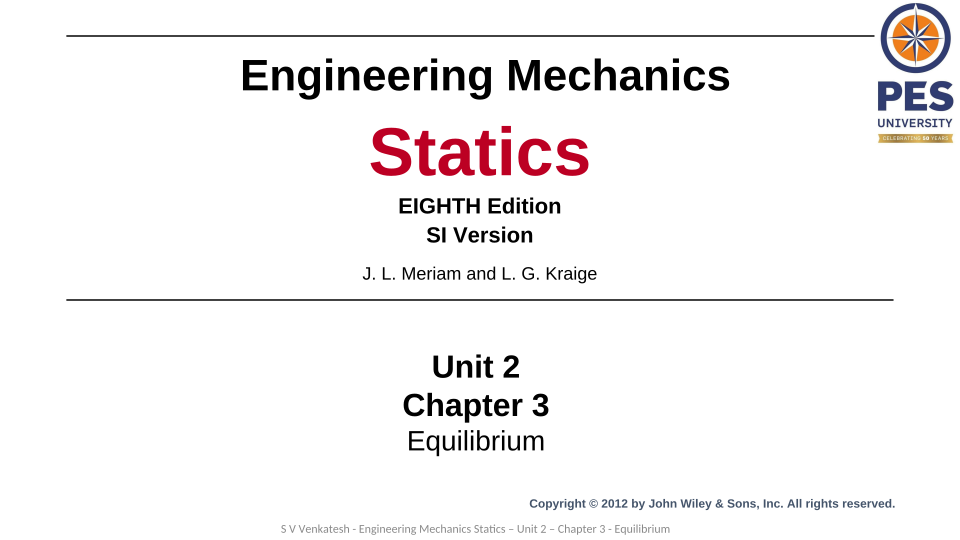
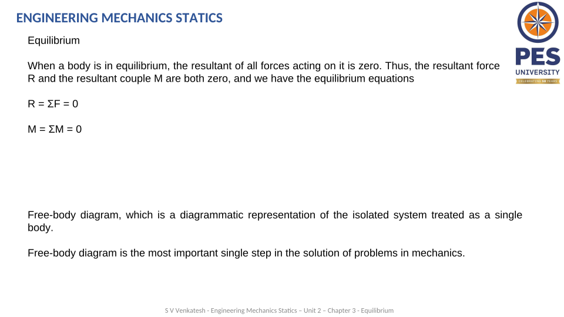
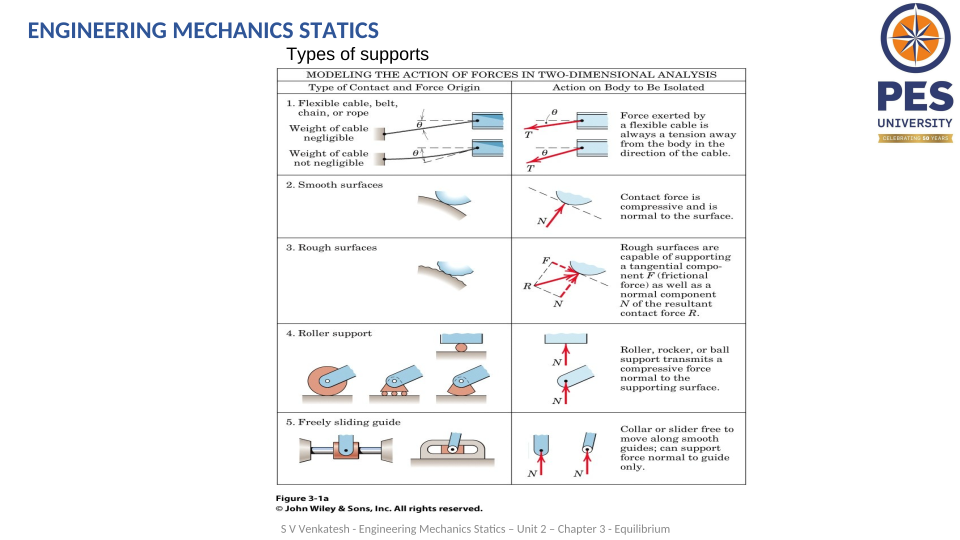
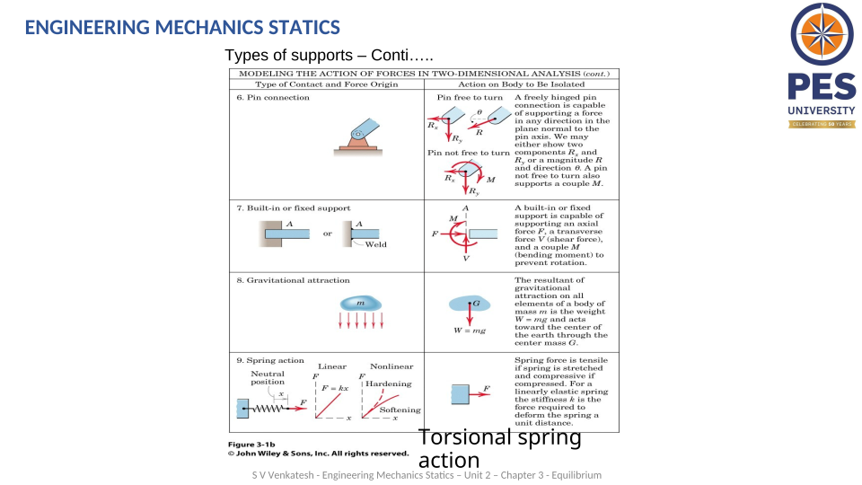
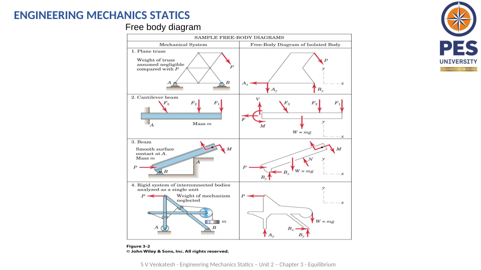
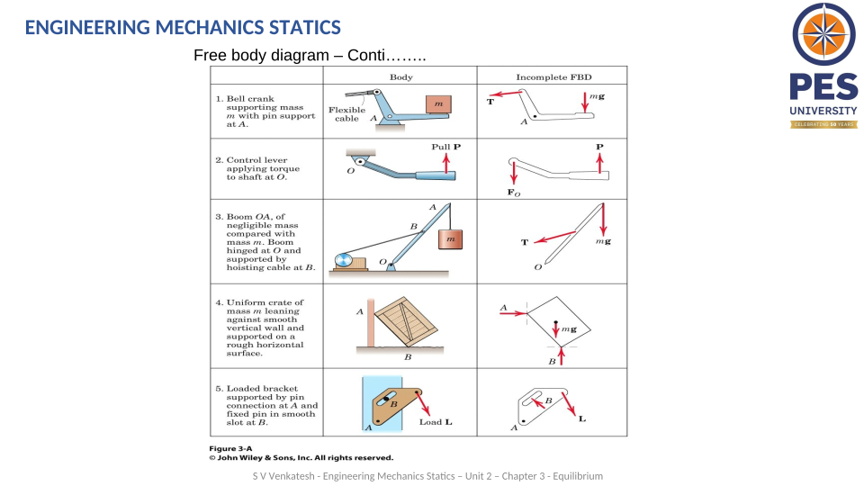
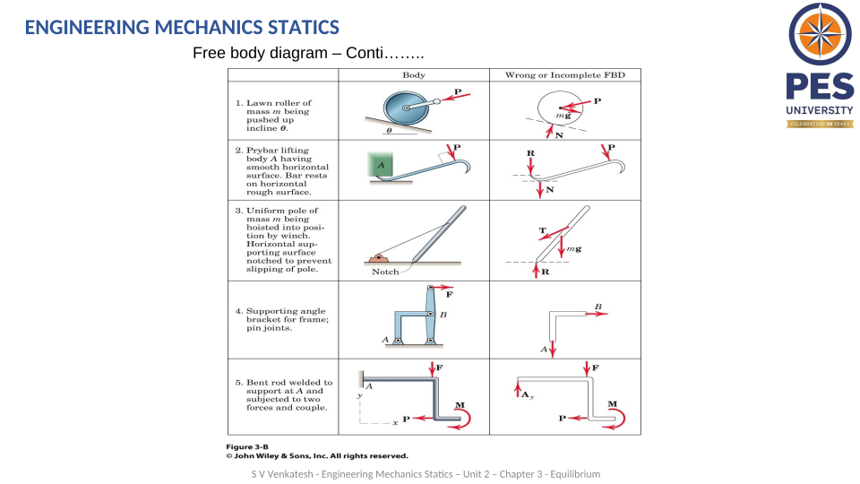
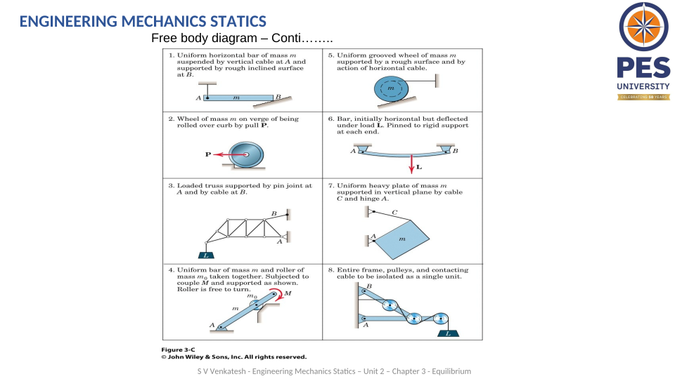
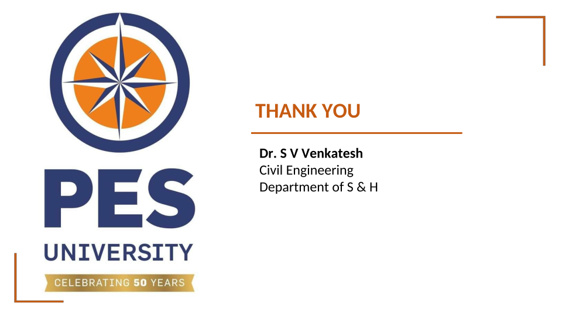
Important points and why
- Source slide page 1: no readable `.slides.md` text was extracted. The original rendered page is included as the adjacent source figure for visual inspection. EV0000258 · EV0000259 · EV0000260
- Source slide page 2 (extracted text): Engineering Mechanics Statics EIGHTH Edition SI Version J. L. Meriam and L. G. Kraige Unit 2 Chapter 3 Equilibrium Copyright © 2012 by John Wiley & Sons, Inc. All rights reserved. S V Venkatesh - Engineering Mechanics Statics – Unit 2 – Chapter 3 - Equilibrium EV0000261 · EV0000262 · EV0000263
- Source slide page 3 (extracted text): ENGINEERING MECHANICS STATICS Equilibrium When a body is in equilibrium, the resultant of all forces acting on it is zero. Thus, the resultant force R and the resultant couple M are both zero, and we have the equilibrium equations R = ΣF = 0 M = ΣM = 0 Free-body diagram, which is a diagrammatic representation of the isolated system treated as a single body. Free-body diagram is the most important single step in the solution of problems in mechanics. S V Venkatesh - Engineering Mechanics Statics – Unit 2 – Chapter 3 - Equilibrium EV0000264 · EV0000265 · EV0000266
- Source slide page 4 (extracted text): ENGINEERING MECHANICS STATICS Types of supports S V Venkatesh - Engineering Mechanics Statics – Unit 2 – Chapter 3 - Equilibrium EV0000267 · EV0000268 · EV0000269
- Source slide page 5 (extracted text): ENGINEERING MECHANICS STATICS Types of supports – Conti….. Torsional spring action S V Venkatesh - Engineering Mechanics Statics – Unit 2 – Chapter 3 - Equilibrium EV0000270 · EV0000271 · EV0000272
- Source slide page 6 (extracted text): ENGINEERING MECHANICS STATICS Free body diagram S V Venkatesh - Engineering Mechanics Statics – Unit 2 – Chapter 3 - Equilibrium EV0000273 · EV0000274 · EV0000275
- Source slide page 7 (extracted text): ENGINEERING MECHANICS STATICS Free body diagram – Conti…….. S V Venkatesh - Engineering Mechanics Statics – Unit 2 – Chapter 3 - Equilibrium EV0000276 · EV0000277 · EV0000278
- Source slide page 8 (extracted text): ENGINEERING MECHANICS STATICS Free body diagram – Conti…….. S V Venkatesh - Engineering Mechanics Statics – Unit 2 – Chapter 3 - Equilibrium EV0000279 · EV0000280 · EV0000281
- Source slide page 9 (extracted text): ENGINEERING MECHANICS STATICS Free body diagram – Conti…….. S V Venkatesh - Engineering Mechanics Statics – Unit 2 – Chapter 3 - Equilibrium ## Page / slide 10 (OCR) THANK YOU Dr. S V PES Venkatesh Civil Engineering Department of S & H UNIVERSITY CELEBRATING 5O YEARS EV0000282
- Source slide page 10: no readable `.slides.md` text was extracted. The original rendered page is included as the adjacent source figure for visual inspection. EV0000283
3UE26ME142A_Unit 2_Class 15_AVSummary
This lesson is indexed from the source video titled UE26ME142A_Unit 2_Class 15_AVSummary. Its complete timestamped transcript is preserved below in segment order. The original video path and content hash are recorded in datasets/lecture-corpus.json. Transcript text is source wording; it has not been silently corrected or rewritten. A candidate slide deck is grouped here according to the current matching score; the exact path and page locators are listed in the source evidence. EV0000022 · EV0000023
Graphs and diagrams

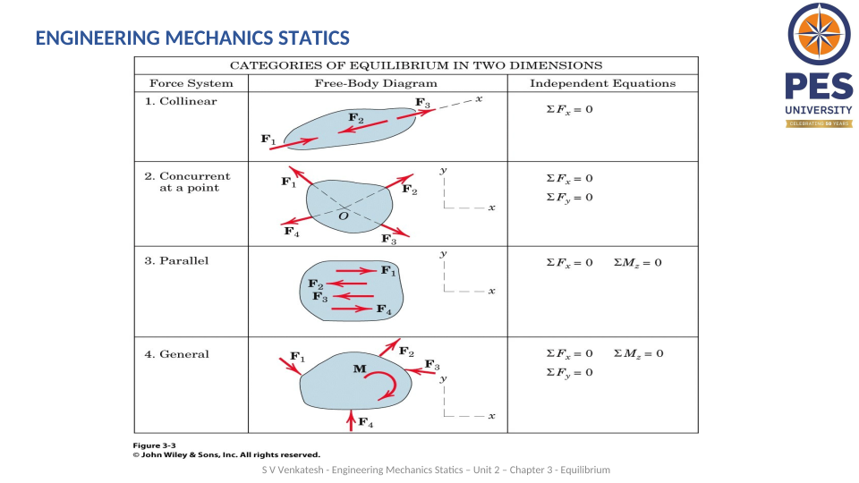
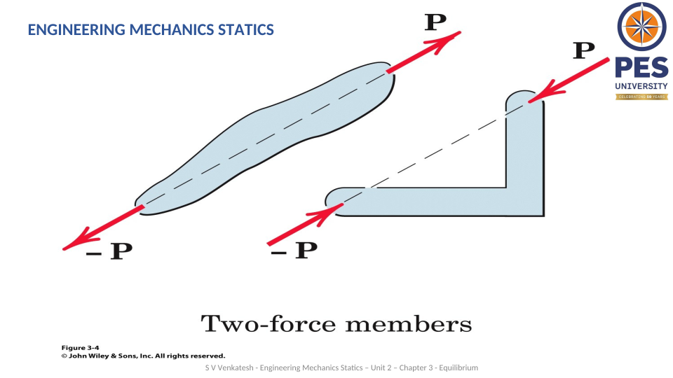
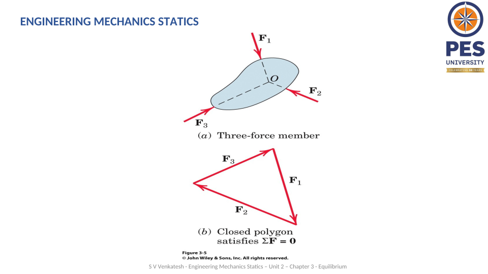
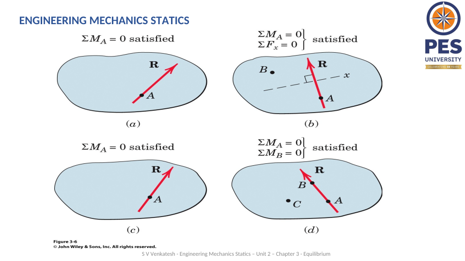
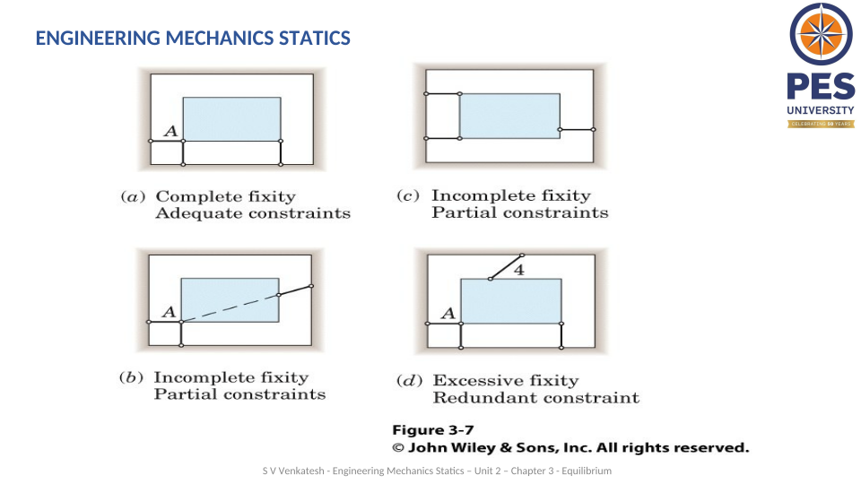

Important points and why
- Source slide page 1: no readable `.slides.md` text was extracted. The original rendered page is included as the adjacent source figure for visual inspection. EV0000284 · EV0000285 · EV0000286
- Source slide page 2 (extracted text): ENGINEERING MECHANICS STATICS S V Venkatesh - Engineering Mechanics Statics – Unit 2 – Chapter 3 - Equilibrium ## Page / slide 3 (OCR) P ENGINEERINGMECHANICSSTATICS P PES UNIVERSITY CELEBRATING50YEARS EP P Two-force members Figure3-4 Johnwiley&Sons,Inc.Allrightsreserved. SVVenkatesh-EngineeringMechanicsStatics-Unit2-Chapter3-Equilibrium EV0000287 · EV0000288 · EV0000289
- Source slide page 3: no readable `.slides.md` text was extracted. The original rendered page is included as the adjacent source figure for visual inspection. EV0000290 · EV0000291 · EV0000292
- Source slide page 4 (extracted text): ENGINEERING MECHANICS STATICS S V Venkatesh - Engineering Mechanics Statics – Unit 2 – Chapter 3 - Equilibrium EV0000293
- Source slide page 5 (extracted text): ENGINEERING MECHANICS STATICS S V Venkatesh - Engineering Mechanics Statics – Unit 2 – Chapter 3 - Equilibrium ## Page / slide 6 (OCR) ENGINEERINGMECHANICSSTATICS PES UNIVERSITY CELEBRATING50YEARS (a) Completefixity （c) Incomplete fixity Adequateconstraints Partialconstraints (6) Incomplete fixity (d) Excessive fixity Partial constraints Redundant constraint Figure3-7 JohnWiley&Sons,Inc.Allrightsreserved. S V Venkatesh - Engineering Mechanics Statics - Unit 2 - Chapter 3 - Equilibrium ## Page / slide 7 (OCR) THANK YOU Dr. S V PES Venkatesh Civil Engineering Department of S & H UNIVERSITY CELEBRATING 5O YEARS EV0000294
- Source slide page 6: no readable `.slides.md` text was extracted. The original rendered page is included as the adjacent source figure for visual inspection. EV0000295
- Source slide page 7: no readable `.slides.md` text was extracted. The original rendered page is included as the adjacent source figure for visual inspection. EV0000296
4UE26ME142A_Unit 2_Class 16_AVSummary
This lesson is indexed from the source video titled UE26ME142A_Unit 2_Class 16_AVSummary. Its complete timestamped transcript is preserved below in segment order. The original video path and content hash are recorded in datasets/lecture-corpus.json. Transcript text is source wording; it has not been silently corrected or rewritten. A candidate slide deck is grouped here according to the current matching score; the exact path and page locators are listed in the source evidence. EV0000038 · EV0000039
Graphs and diagrams

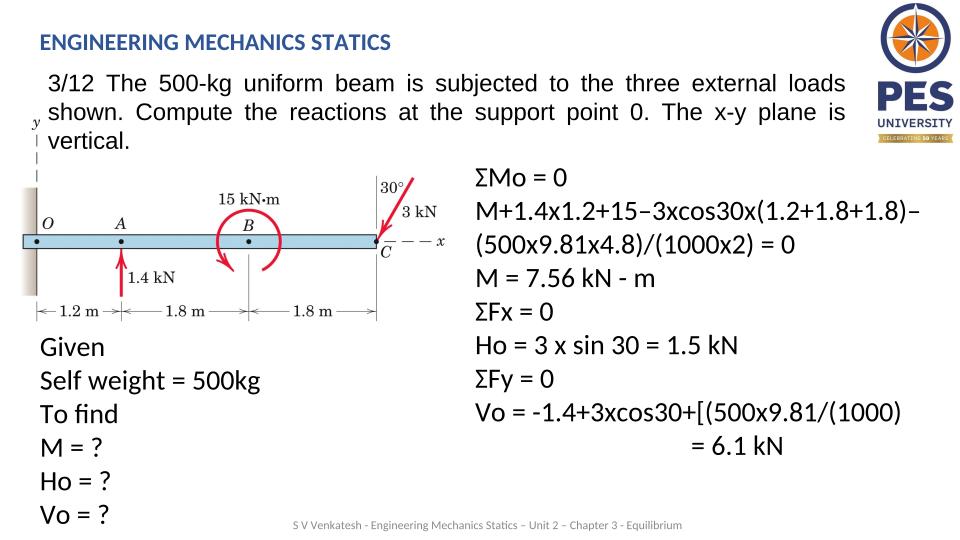
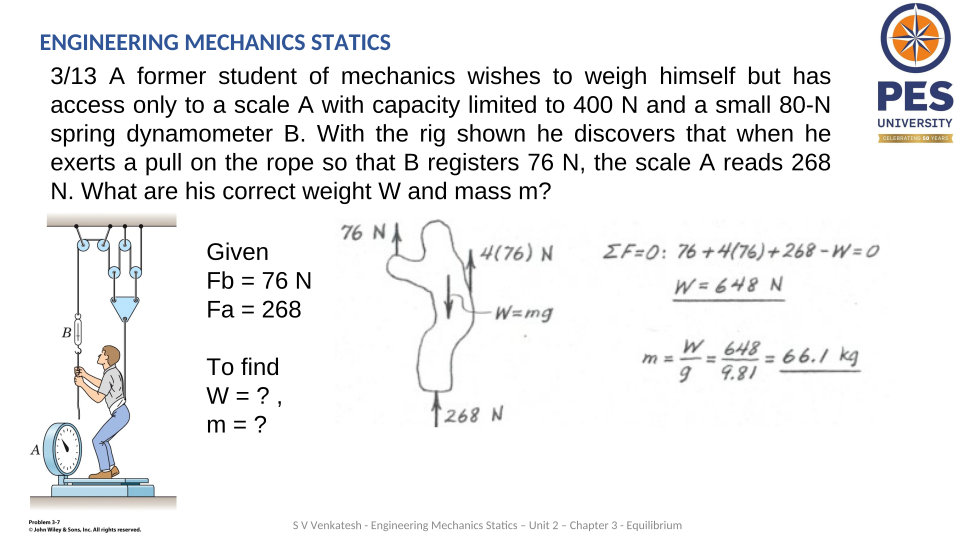
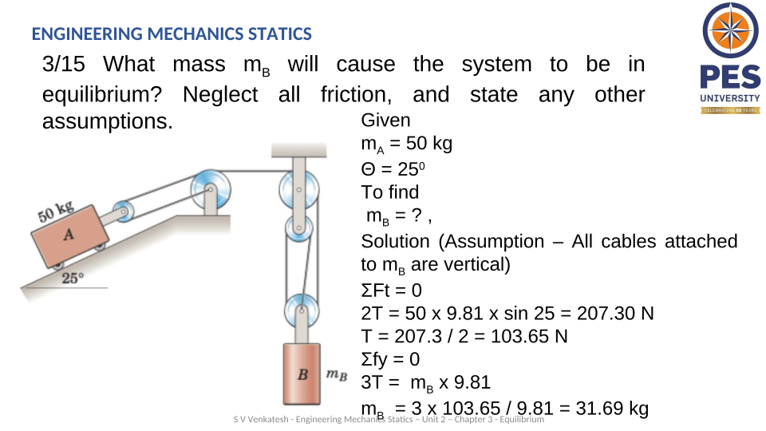
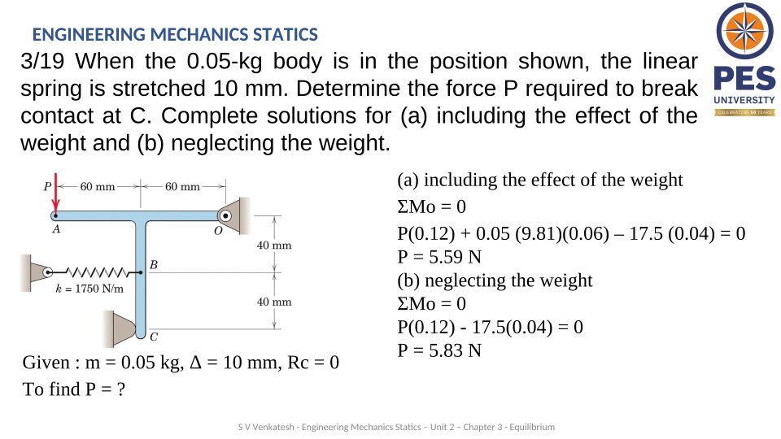
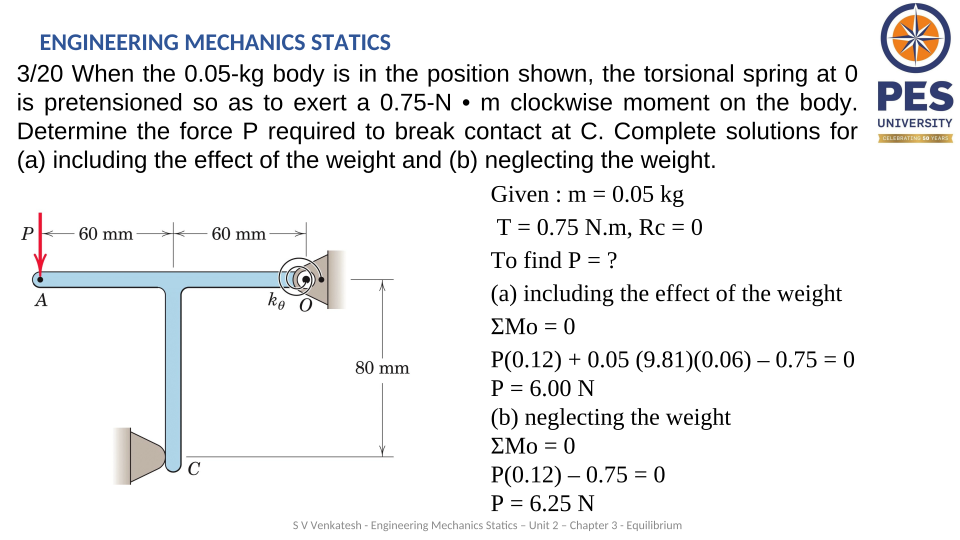

Important points and why
- Source slide page 1: no readable `.slides.md` text was extracted. The original rendered page is included as the adjacent source figure for visual inspection. EV0000297 · EV0000298 · EV0000299
- Source slide page 2 (extracted text): ENGINEERING MECHANICS STATICS 3/12 The 500-kg uniform beam is subjected to the three external loads shown. Compute the reactions at the support point 0. The x-y plane is vertical. ΣMo = 0 M+1.4x1.2+15– 3xcos30x(1.2+1.8+1.8)– (500x9.81x4.8)/(1000x2) = 0 M = 7.56 kN - m Given ΣFx = 0 Self weight = Ho = 3 x sin 30 = 1.5 kN 500kg ΣFy = 0 To find Vo = M = ? -1.4+3xcos30+[(500x9.81/(1000) Ho = ? S V Venkatesh - Engineering Mechanics Statics – Unit 2 – Chapter 3 - Equilibrium = 6.1 kN V ? EV0000300 · EV0000301 · EV0000302
- Source slide page 3 (extracted text): ENGINEERING MECHANICS STATICS 3/13 A former student of mechanics wishes to weigh himself but has access only to a scale A with capacity limited to 400 N and a small 80-N spring dynamometer B. With the rig shown he discovers that when he exerts a pull on the rope so that B registers 76 N, the scale A reads 268 N. What are his correct weight W and mass m? Given Fb = 76 N Fa = 268 To find W = ? , m = ? S V Venkatesh - Engineering Mechanics Statics – Unit 2 – Chapter 3 - Equilibrium EV0000303 · EV0000304 · EV0000305
- Source slide page 4 (extracted text): ENGINEERING MECHANICS STATICS 3/15 What mass mB will cause the system to be in equilibrium? Neglect all friction, and state any other assumptions. Given mA = 50 kg Θ = 250 To find mB = ? , Solution (Assumption – All cables attached to mB are vertical) ΣFt = 0 2T = 50 x 9.81 x sin 25 = 207.30 N T = 207.3 / 2 = 103.65 N Σfy = 0 3T = mB x 9.81 S V Venkatesh - Engineering MechanicsmB Statics= 3– Unitx 2103.65– Chapter 3 - Equilibrium/ 9.81 = 31.69 kg EV0000306 · EV0000307 · EV0000308
- Source slide page 5 (extracted text): ENGINEERING MECHANICS STATICS 3/19 When the 0.05-kg body is in the position shown, the linear spring is stretched 10 mm. Determine the force P required to break contact at C. Complete solutions for (a) including the effect of the weight and (b) neglecting the weight. (a) including the effect of the weight ΣMo = 0 P(0.12) + 0.05 (9.81)(0.06) – 17.5 (0.04) = 0 P = 5.59 N (b) neglecting the weight ΣMo = 0 P(0.12) - 17.5(0.04) = 0Given : m = 0.05 kg, Δ = 10 mm, P = 5.83 N Rc = 0 To find P = ? S V Venkatesh - Engineering Mechanics Statics – Unit 2 – Chapter 3 - Equilibrium EV0000309 · EV0000310 · EV0000311
- Source slide page 6 (extracted text): ENGINEERING MECHANICS STATICS 3/20 When the 0.05-kg body is in the position shown, the torsional spring at 0 is pretensioned so as to exert a 0.75-N • m clockwise moment on the body. Determine the force P required to break contact at C. Complete solutions for (a) including the effect of the weight and (b) neglecting the weight. Given : m = 0.05 kg T = 0.75 N.m, Rc = 0 To find P = ? (a) including the effect of the weight ΣMo = 0 P(0.12) + 0.05 (9.81)(0.06) – 0.75 = 0 P = 6.00 N (b) neglecting the weight ΣMo = 0 P(0.12) – 0.75 = 0 P = 6.25 N S V Venkatesh - Engineering Mechanics Statics – Unit 2 – Chapter 3 - Equilibrium ## Page / slide 7 (OCR) THANK YOU Dr. S V PES Venkatesh Civil Engineering Department of S & H UNIVERSITY CELEBRATING 5O YEARS EV0000312
- Source slide page 7: no readable `.slides.md` text was extracted. The original rendered page is included as the adjacent source figure for visual inspection. EV0000313
5UE26ME142A_Unit 2_Class 17_AVSummary
This lesson is indexed from the source video titled UE26ME142A_Unit 2_Class 17_AVSummary. Its complete timestamped transcript is preserved below in segment order. The original video path and content hash are recorded in datasets/lecture-corpus.json. Transcript text is source wording; it has not been silently corrected or rewritten. A candidate slide deck is grouped here according to the current matching score; the exact path and page locators are listed in the source evidence. EV0000058 · EV0000059
Graphs and diagrams

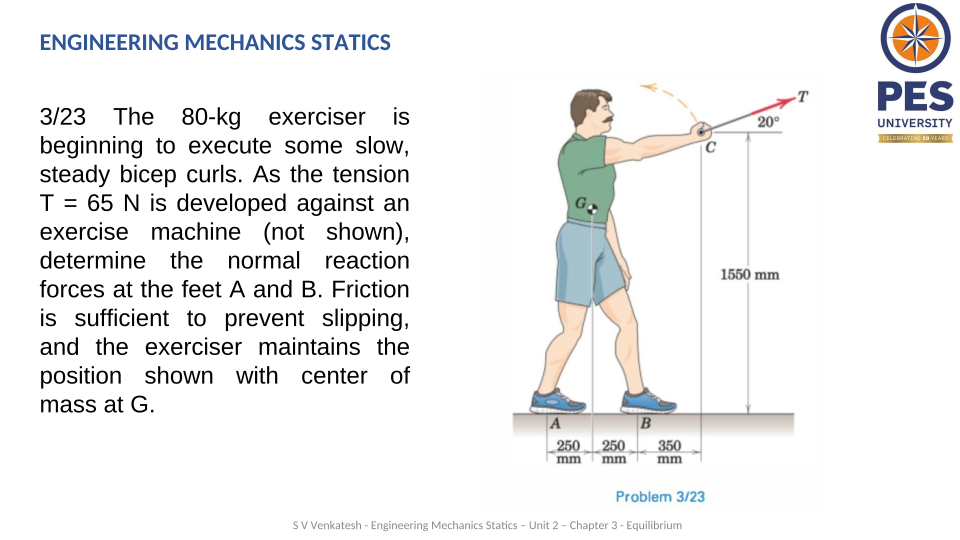
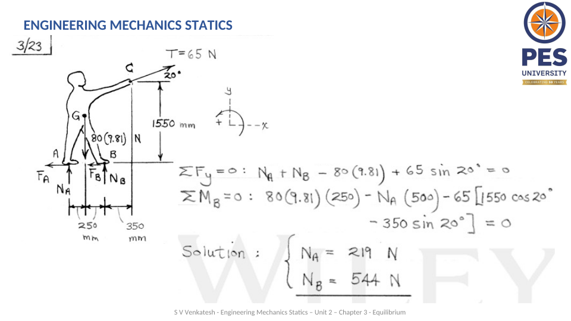
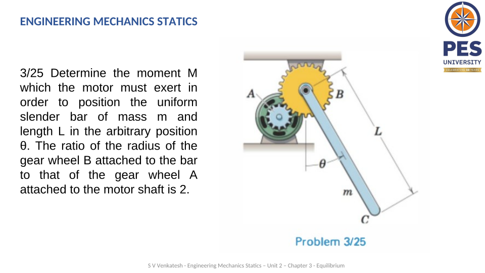
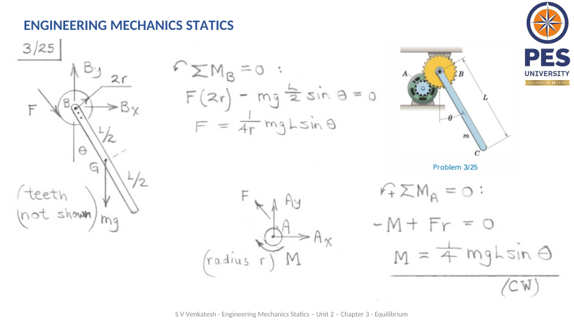

Important points and why
- Source slide page 1: no readable `.slides.md` text was extracted. The original rendered page is included as the adjacent source figure for visual inspection. EV0000314 · EV0000315 · EV0000316
- Source slide page 2 (extracted text): ENGINEERING MECHANICS STATICS 3/23 The 80-kg exerciser is beginning to execute some slow, steady bicep curls. As the tension T = 65 N is developed against an exercise machine (not shown), determine the normal reaction forces at the feet A and B. Friction is sufficient to prevent slipping, and the exerciser maintains the position shown with center of mass at G. S V Venkatesh - Engineering Mechanics Statics – Unit 2 – Chapter 3 - Equilibrium ## Page / slide 3 (OCR) ENGINEERINGMECHANICSSTATICS 3/23 T=65N PES UNIVERSITY CELEBRATING50YEARS 1550 mm 80 (9.81) N B ZF =0:NA+NB-80(9.81)+65sin20= M=0:80（9.81)(250)-NA（500)-651550cos20 -350sin20° 250 350 mm mm Solutlon 219N 544N S VVenkatesh-Engineering Mechanics Statics-Unit 2- Chapter 3-Equilibrium EV0000317 · EV0000318 · EV0000319
- Source slide page 3: no readable `.slides.md` text was extracted. The original rendered page is included as the adjacent source figure for visual inspection. EV0000320
- Source slide page 4 (extracted text): ENGINEERING MECHANICS STATICS 3/25 Determine the moment M which the motor must exert in order to position the uniform slender bar of mass m and length L in the arbitrary position θ. The ratio of the radius of the gear wheel B attached to the bar to that of the gear wheel A attached to the motor shaft is 2. S V Venkatesh - Engineering Mechanics Statics – Unit 2 – Chapter 3 - Equilibrium ## Page / slide 5 (OCR) ENGINEERINGMECHANICSSTATICS 3/25 PES 2r UNIVERSITY CELEBRATING50YEARS F(2r)-mgsin日=0 日 Bx F 4mgLsinθ 川 m G Problem3/25 (teeth EMA EO notshoun mg -M+Fr= AK M=本mghsin radius M (CW) S VVenkatesh-Engineering Mechanics Statics - Unit 2 - Chapter 3 -Equilibrium ## Page / slide 6 (OCR) THANK YOU Dr. S V PES Venkatesh Civil Engineering Department of S & H UNIVERSITY CELEBRATING 5O YEARS EV0000321
- Source slide page 5: no readable `.slides.md` text was extracted. The original rendered page is included as the adjacent source figure for visual inspection. EV0000322
- Source slide page 6: no readable `.slides.md` text was extracted. The original rendered page is included as the adjacent source figure for visual inspection. EV0000323
6UE26ME142A_Unit 2_Class 18_AVSummary
This lesson is indexed from the source video titled UE26ME142A_Unit 2_Class 18_AVSummary. Its complete timestamped transcript is preserved below in segment order. The original video path and content hash are recorded in datasets/lecture-corpus.json. Transcript text is source wording; it has not been silently corrected or rewritten. A candidate slide deck is grouped here according to the current matching score; the exact path and page locators are listed in the source evidence. EV0000074 · EV0000075
Graphs and diagrams

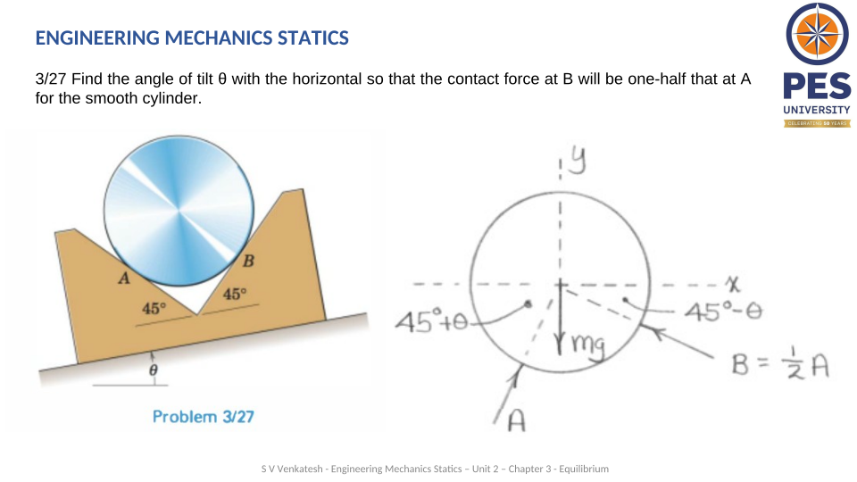
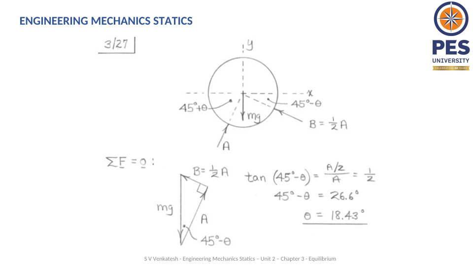
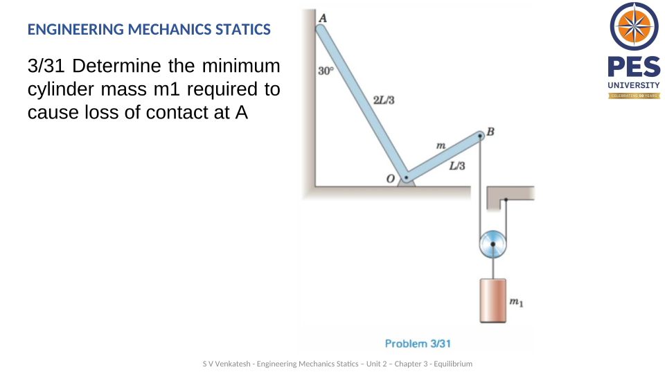
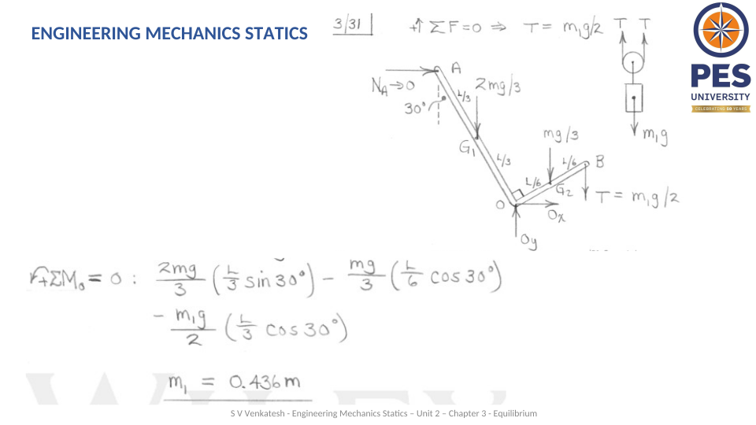

Important points and why
- Source slide page 1: no readable `.slides.md` text was extracted. The original rendered page is included as the adjacent source figure for visual inspection. EV0000324 · EV0000325 · EV0000326
- Source slide page 2 (extracted text): ENGINEERING MECHANICS STATICS 3/27 Find the angle of tilt θ with the horizontal so that the contact force at B will be one- half that at A for the smooth cylinder. S V Venkatesh - Engineering Mechanics Statics – Unit 2 – Chapter 3 - Equilibrium EV0000327 · EV0000328 · EV0000329
- Source slide page 3 (extracted text): ENGINEERING MECHANICS STATICS S V Venkatesh - Engineering Mechanics Statics – Unit 2 – Chapter 3 - Equilibrium EV0000330 · EV0000331 · EV0000332
- Source slide page 4 (extracted text): ENGINEERING MECHANICS STATICS 3/31 Determine the minimum cylinder mass m1 required to cause loss of contact at A S V Venkatesh - Engineering Mechanics Statics – Unit 2 – Chapter 3 - Equilibrium ## Page / slide 5 (OCR) 31 +∑F=0T=mg/2 ENGINEERINGMECHANICSS? A PES 2mg/3 UNIVERSITY 30° CELEBRATING50YEARS mg m,g T=mg/2 Rmg m9 EM=0 CoS30 Sin30 3 3 m9 Cos30 2 =0.436m S V Venkatesh - Engineering Mechanics Statics - Unit 2 - Chapter 3 - Equilibrium ## Page / slide 6 (OCR) THANK YOU Dr. S V PES Venkatesh Civil Engineering Department of S & H UNIVERSITY CELEBRATING 5O YEARS EV0000333
- Source slide page 5: no readable `.slides.md` text was extracted. The original rendered page is included as the adjacent source figure for visual inspection. EV0000334
- Source slide page 6: no readable `.slides.md` text was extracted. The original rendered page is included as the adjacent source figure for visual inspection. EV0000335
7UE26ME142A_Unit 2_Class 19.0_AVSummary
This lesson is indexed from the source video titled UE26ME142A_Unit 2_Class 19.0_AVSummary. Its complete timestamped transcript is preserved below in segment order. The original video path and content hash are recorded in datasets/lecture-corpus.json. Transcript text is source wording; it has not been silently corrected or rewritten. A candidate slide deck is grouped here according to the current matching score; the exact path and page locators are listed in the source evidence. EV0000090 · EV0000091
Graphs and diagrams

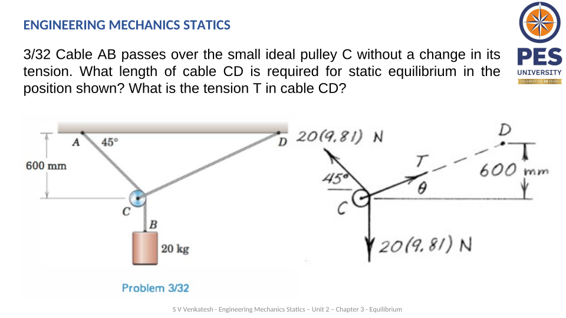
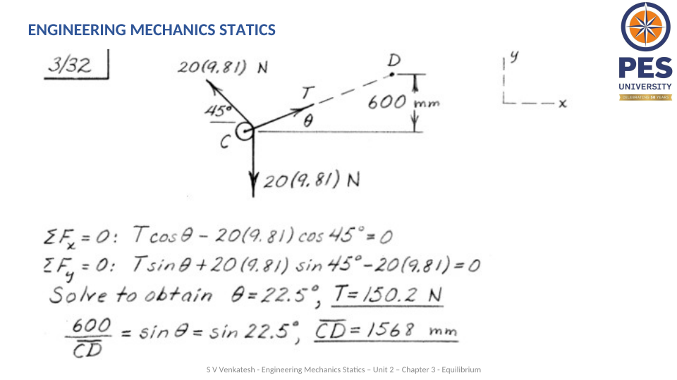
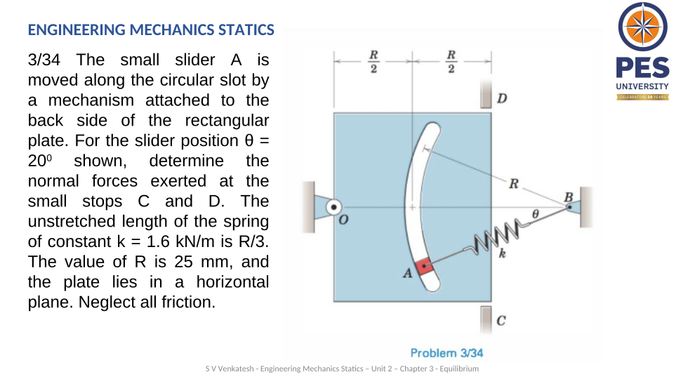
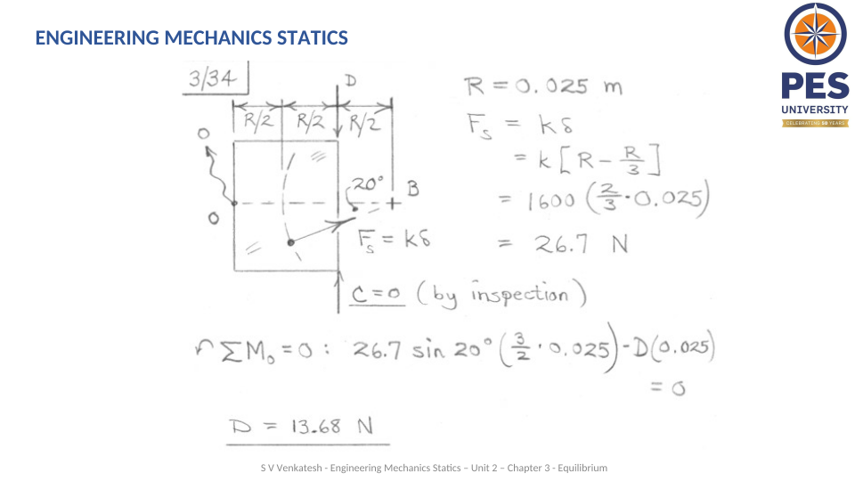

Important points and why
- Source slide page 1: no readable `.slides.md` text was extracted. The original rendered page is included as the adjacent source figure for visual inspection. EV0000336 · EV0000337 · EV0000338
- Source slide page 2 (extracted text): ENGINEERING MECHANICS STATICS 3/32 Cable AB passes over the small ideal pulley C without a change in its tension. What length of cable CD is required for static equilibrium in the position shown? What is the tension T in cable CD? S V Venkatesh - Engineering Mechanics Statics – Unit 2 – Chapter 3 - Equilibrium ## Page / slide 3 (OCR) ENGINEERINGMECHANICSSTATICS 3/32 20(9.81)N PES UNIVERSITY 600 mm CELEBRATING50YEARS 20(9.81)N ∑F=0:Tc0sθ-20(9.81)c0s45°=0 F=0:Tsinθ+20(9.81)sin45°-20(9.81)=0 So1vetoob+ainθ=22.5°T=150.2N 600 =sinθ=sin22.5°CD=1568 mm CD S VVenkatesh-Engineering Mechanics Statics - Unit 2 - Chapter 3 -Equilibrium EV0000339 · EV0000340 · EV0000341
- Source slide page 3: no readable `.slides.md` text was extracted. The original rendered page is included as the adjacent source figure for visual inspection. EV0000342 · EV0000343 · EV0000344
- Source slide page 4 (extracted text): ENGINEERING MECHANICS STATICS 3/34 The small slider A is moved along the circular slot by a mechanism attached to the back side of the rectangular plate. For the slider position θ = 200 shown, determine the normal forces exerted at the small stops C and D. The unstretched length of the spring of constant k = 1.6 kN/m is R/3. The value of R is 25 mm, and the plate lies in a horizontal plane. Neglect all friction. S V Venkatesh - Engineering Mechanics Statics – Unit 2 – Chapter 3 - Equilibrium EV0000345
- Source slide page 5 (extracted text): ENGINEERING MECHANICS STATICS S V Venkatesh - Engineering Mechanics Statics – Unit 2 – Chapter 3 - Equilibrium ## Page / slide 6 (OCR) THANK YOU Dr. S V PES Venkatesh Civil Engineering Department of S & H UNIVERSITY CELEBRATING 5O YEARS EV0000346
- Source slide page 6: no readable `.slides.md` text was extracted. The original rendered page is included as the adjacent source figure for visual inspection. EV0000347
8UE26ME142A_Unit 2_Class 19.1_AVSummary
This lesson is indexed from the source video titled UE26ME142A_Unit 2_Class 19.1_AVSummary. Its complete timestamped transcript is preserved below in segment order. The original video path and content hash are recorded in datasets/lecture-corpus.json. Transcript text is source wording; it has not been silently corrected or rewritten. A candidate slide deck is grouped here according to the current matching score; the exact path and page locators are listed in the source evidence. EV0000106 · EV0000107
Graphs and diagrams

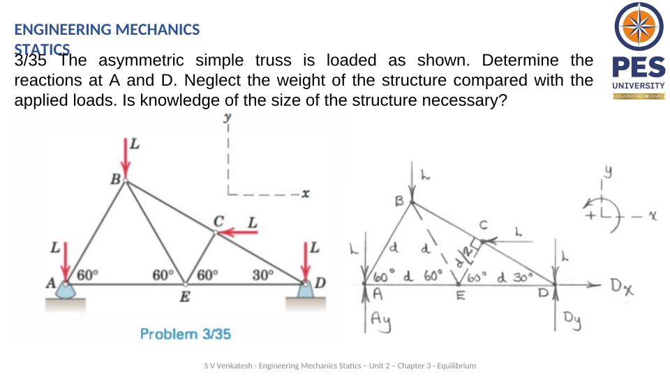
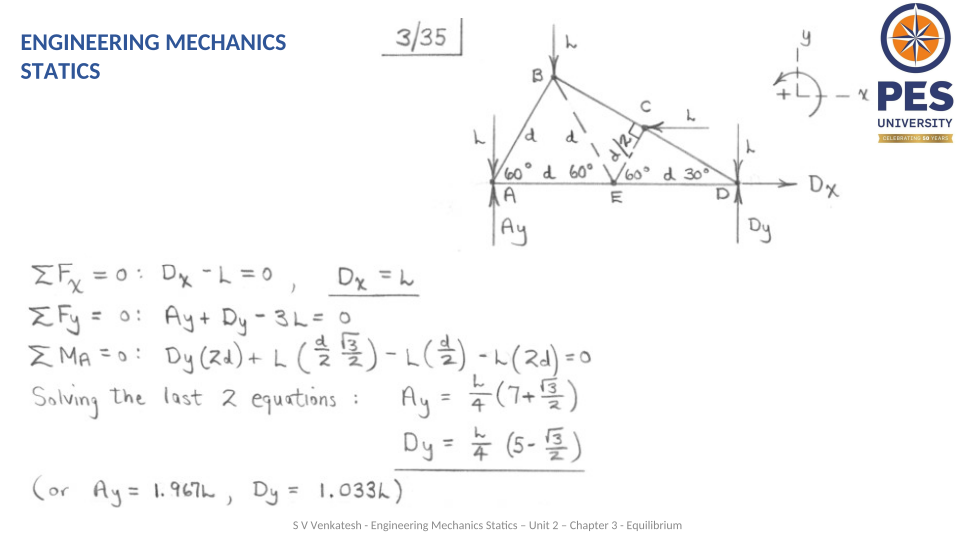
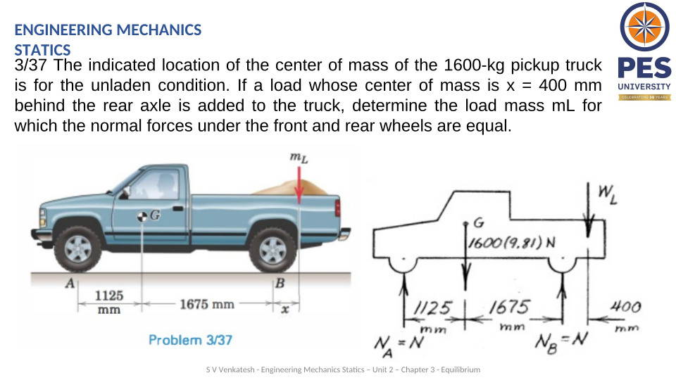
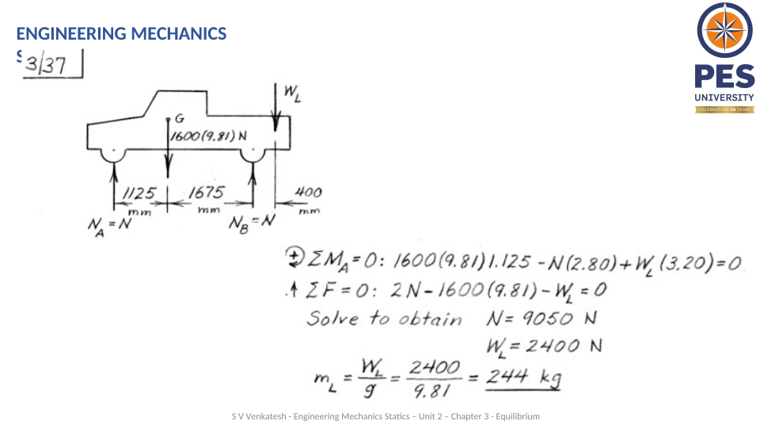

Important points and why
- Source slide page 1: no readable `.slides.md` text was extracted. The original rendered page is included as the adjacent source figure for visual inspection. EV0000348 · EV0000349 · EV0000350
- Source slide page 2 (extracted text): ENGINEERING MECHANICS STATICS 3/35 The asymmetric simple truss is loaded as shown. Determine the reactions at A and D. Neglect the weight of the structure compared with the applied loads. Is knowledge of the size of the structure necessary? S V Venkatesh - Engineering Mechanics Statics – Unit 2 – Chapter 3 - Equilibrium EV0000351 · EV0000352 · EV0000353
- Source slide page 3 (extracted text): ENGINEERING MECHANICS STATICS S V Venkatesh - Engineering Mechanics Statics – Unit 2 – Chapter 3 - Equilibrium EV0000354 · EV0000355 · EV0000356
- Source slide page 4 (extracted text): ENGINEERING MECHANICS STATICS 3/37 The indicated location of the center of mass of the 1600-kg pickup truck is for the unladen condition. If a load whose center of mass is x = 400 mm behind the rear axle is added to the truck, determine the load mass mL for which the normal forces under the front and rear wheels are equal. S V Venkatesh - Engineering Mechanics Statics – Unit 2 – Chapter 3 - Equilibrium EV0000357 · EV0000358 · EV0000359
- Source slide page 5 (extracted text): ENGINEERING MECHANICS STATICS S V Venkatesh - Engineering Mechanics Statics – Unit 2 – Chapter 3 - Equilibrium ## Page / slide 6 (OCR) THANK YOU Dr. S V PES Venkatesh Civil Engineering Department of S & H UNIVERSITY CELEBRATING 5O YEARS EV0000360
- Source slide page 6: no readable `.slides.md` text was extracted. The original rendered page is included as the adjacent source figure for visual inspection. EV0000361
9UE26ME142A_Unit 2_Class 19.2_AVSummary
This lesson is indexed from the source video titled UE26ME142A_Unit 2_Class 19.2_AVSummary. Its complete timestamped transcript is preserved below in segment order. The original video path and content hash are recorded in datasets/lecture-corpus.json. Transcript text is source wording; it has not been silently corrected or rewritten. A candidate slide deck is grouped here according to the current matching score; the exact path and page locators are listed in the source evidence. EV0000122 · EV0000123
Graphs and diagrams

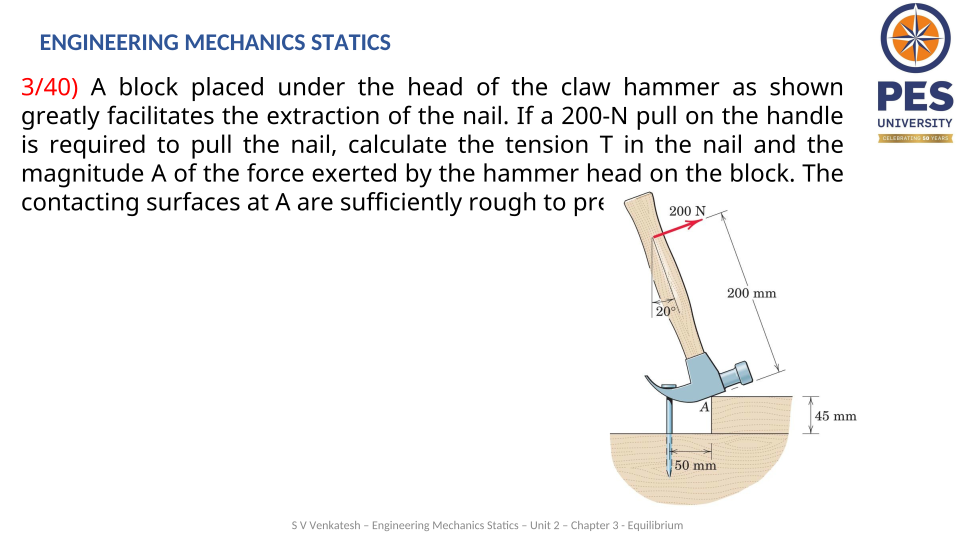
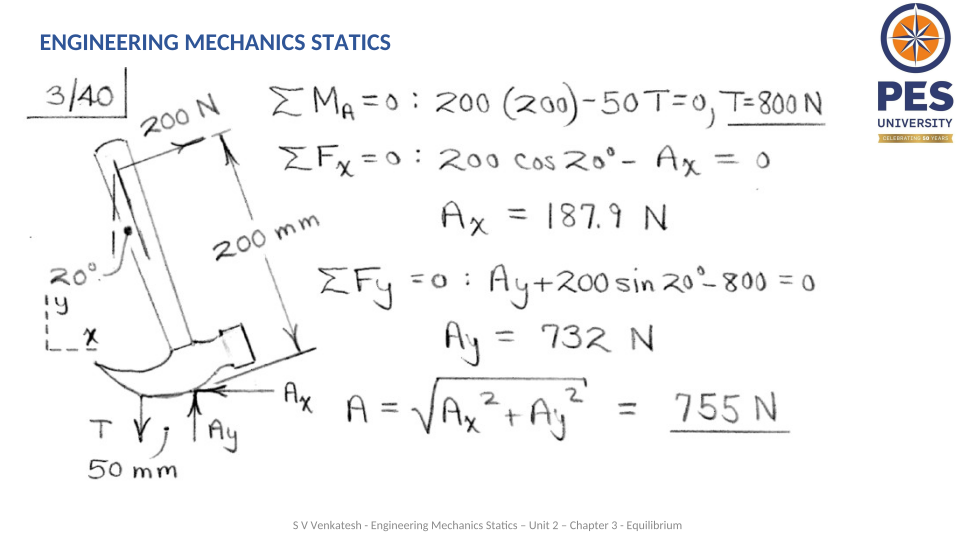
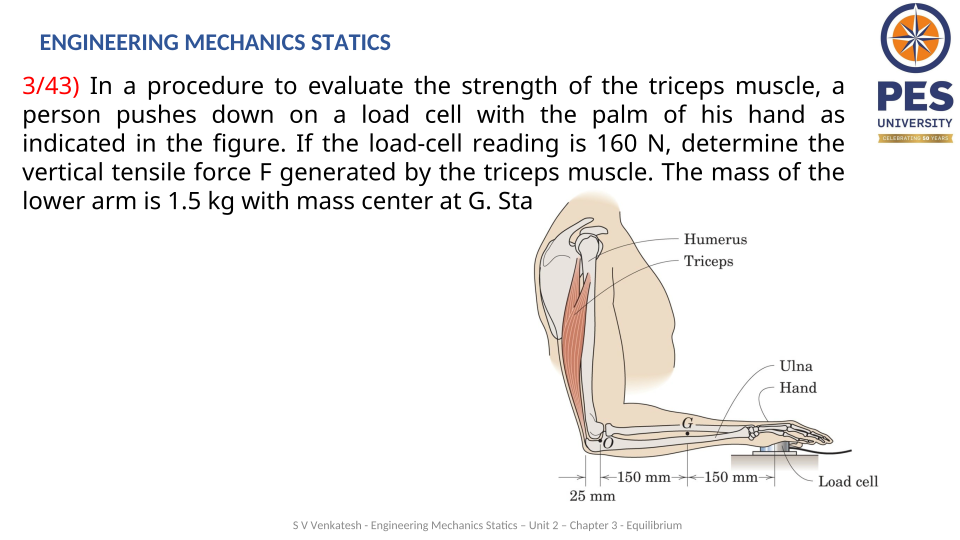
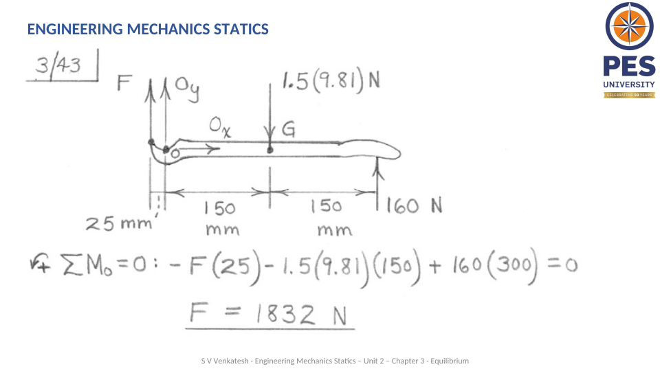

Important points and why
- Source slide page 1: no readable `.slides.md` text was extracted. The original rendered page is included as the adjacent source figure for visual inspection. EV0000362 · EV0000363 · EV0000364
- Source slide page 2 (extracted text): ENGINEERING MECHANICS STATICS 3/40) A block placed under the head of the claw hammer as shown greatly facilitates the extraction of the nail. If a 200-N pull on the handle is required to pull the nail, calculate the tension T in the nail and the magnitude A of the force exerted by the hammer head on the block. The contacting surfaces at A are sufficiently rough to prevent slipping. S V Venkatesh – Engineering Mechanics Statics – Unit 2 – Chapter 3 - Equilibrium ## Page / slide 3 (OCR) ENGINEERINGMECHANICSSTATICS 3/40 MMA=0 :200(200)-50T=0,T=800 N PES 200 UNIVERSITY CELEBRATING50YEARS MFx=0:2o0Cos2o-Ax= Ax = 187. 9 N 2o0mm ZFy 20 =0:Ay+200sin20-800= 0 iy 732N Ax A= 755N T 50mm S V Venkatesh - Engineering Mechanics Statics - Unit 2 - Chapter 3 - Equilibrium EV0000365 · EV0000366 · EV0000367
- Source slide page 3: no readable `.slides.md` text was extracted. The original rendered page is included as the adjacent source figure for visual inspection. EV0000368
- Source slide page 4 (extracted text): ENGINEERING MECHANICS STATICS 3/43) In a procedure to evaluate the strength of the triceps muscle, a person pushes down on a load cell with the palm of his hand as indicated in the figure. If the load-cell reading is 160 N, determine the vertical tensile force F generated by the triceps muscle. The mass of the lower arm is 1.5 kg with mass center at G. State any assumptions. S V Venkatesh - Engineering Mechanics Statics – Unit 2 – Chapter 3 - Equilibrium ## Page / slide 5 (OCR) ENGINEERINGMECHANICSSTATICS 3/43 PES 1.5(9.81) N UNIVERSITY CELEBRATING50YEARS 150 150 1160N 25mm mm mm ∑M。=0 : -F(25)- 1. 5(9.81)(150) + 160(300) 二0 F=1832N S VVenkatesh-Engineering Mechanics Statics - Unit 2 - Chapter 3-Equilibrium ## Page / slide 6 (OCR) THANK YOU Dr. S V PES Venkatesh Civil Engineering Department of S & H UNIVERSITY CELEBRATING 5O YEARS EV0000369
- Source slide page 5: no readable `.slides.md` text was extracted. The original rendered page is included as the adjacent source figure for visual inspection. EV0000370
- Source slide page 6: no readable `.slides.md` text was extracted. The original rendered page is included as the adjacent source figure for visual inspection. EV0000371
10UE26ME142A_Unit 2_Class 19.3_AV Summary
This lesson is indexed from the source video titled UE26ME142A_Unit 2_Class 19.3_AV Summary. Its complete timestamped transcript is preserved below in segment order. The original video path and content hash are recorded in datasets/lecture-corpus.json. Transcript text is source wording; it has not been silently corrected or rewritten. A candidate slide deck is grouped here according to the current matching score; the exact path and page locators are listed in the source evidence. EV0000138 · EV0000139
Graphs and diagrams

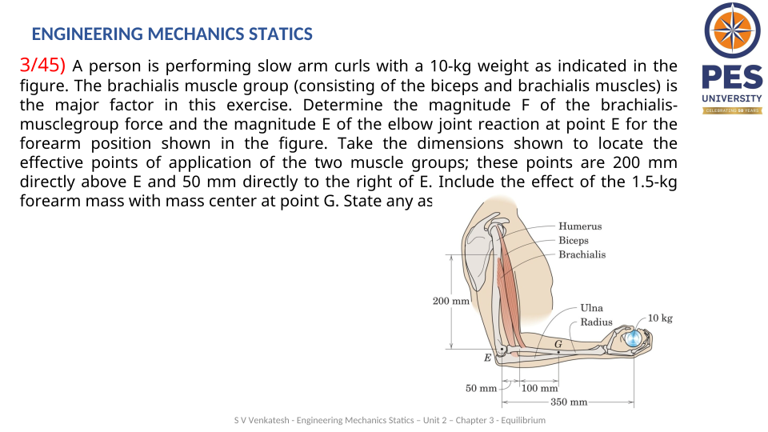
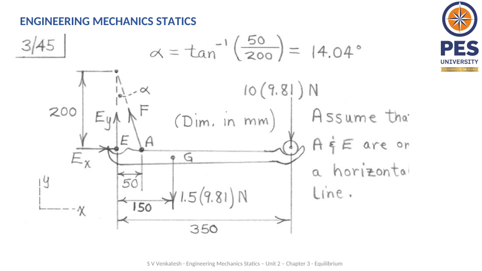
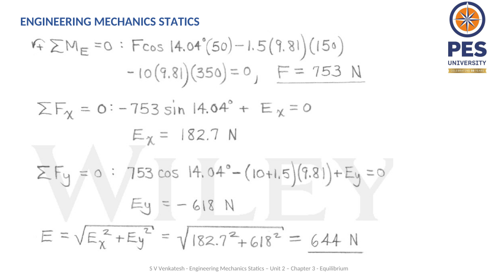
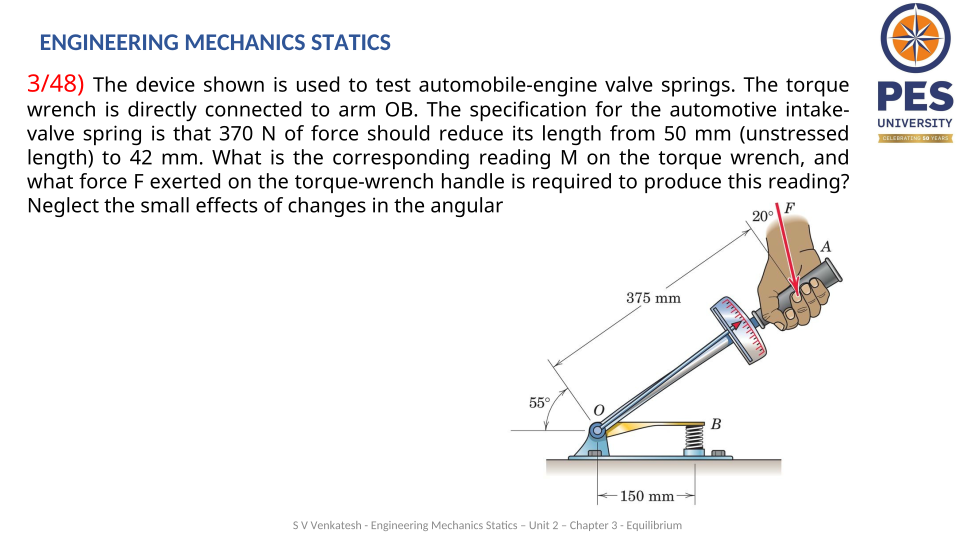
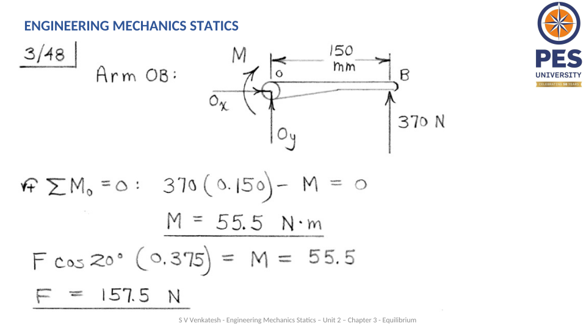

Important points and why
- Source slide page 1: no readable `.slides.md` text was extracted. The original rendered page is included as the adjacent source figure for visual inspection. EV0000372 · EV0000373 · EV0000374
- Source slide page 2 (extracted text): ENGINEERING MECHANICS STATICS 3/45) A person is performing slow arm curls with a 10-kg weight as indicated in the figure. The brachialis muscle group (consisting of the biceps and brachialis muscles) is the major factor in this exercise. Determine the magnitude F of the brachialis-musclegroup force and the magnitude E of the elbow joint reaction at point E for the forearm position shown in the figure. Take the dimensions shown to locate the effective points of application of the two muscle groups; these points are 200 mm directly above E and 50 mm directly to the right of E. Include the effect of the 1.5-kg forearm mass with mass center at point G. State any assumptions. S V Venkatesh - Engineering Mechanics Statics – Unit 2 – Chapter 3 - Equilibrium ## Page / slide 3 (OCR) ENGINEERINGMECHANICSSTATICS 3/45 50 PES α=tan 14.04 200 UNIVERSITY CELEBRATING50YEARS 10(9.8!) N 2OO Assume tha (Dim,inmm E AE areon X ahorizonta 1.5(9.81) N Line. 150 350 S VVenkatesh-Engineering Mechanics Statics - Unit 2 - Chapter 3 -Equilibrium EV0000375 · EV0000376 · EV0000377
- Source slide page 3: no readable `.slides.md` text was extracted. The original rendered page is included as the adjacent source figure for visual inspection. EV0000378 · EV0000379 · EV0000380
- Source slide page 4 (extracted text): ENGINEERING MECHANICS STATICS S V Venkatesh - Engineering Mechanics Statics – Unit 2 – Chapter 3 - Equilibrium EV0000381 · EV0000382 · EV0000383
- Source slide page 5 (extracted text): ENGINEERING MECHANICS STATICS 3/48) The device shown is used to test automobile-engine valve springs. The torque wrench is directly connected to arm OB. The specification for the automotive intake-valve spring is that 370 N of force should reduce its length from 50 mm (unstressed length) to 42 mm. What is the corresponding reading M on the torque wrench, and what force F exerted on the torque-wrench handle is required to produce this reading? Neglect the small effects of changes in the angular position of arm OB. S V Venkatesh - Engineering Mechanics Statics – Unit 2 – Chapter 3 - Equilibrium EV0000384
- Source slide page 6 (extracted text): ENGINEERING MECHANICS STATICS S V Venkatesh - Engineering Mechanics Statics – Unit 2 – Chapter 3 - Equilibrium ## Page / slide 7 (OCR) THANK YOU Dr. S V PES Venkatesh Civil Engineering Department of S & H UNIVERSITY CELEBRATING 5O YEARS EV0000385
- Source slide page 7: no readable `.slides.md` text was extracted. The original rendered page is included as the adjacent source figure for visual inspection. EV0000386
11UE26ME142A_Unit 2_Class 19.4_AV Summary
This lesson is indexed from the source video titled UE26ME142A_Unit 2_Class 19.4_AV Summary. Its complete timestamped transcript is preserved below in segment order. The original video path and content hash are recorded in datasets/lecture-corpus.json. Transcript text is source wording; it has not been silently corrected or rewritten. A candidate slide deck is grouped here according to the current matching score; the exact path and page locators are listed in the source evidence. EV0000154 · EV0000155
Graphs and diagrams

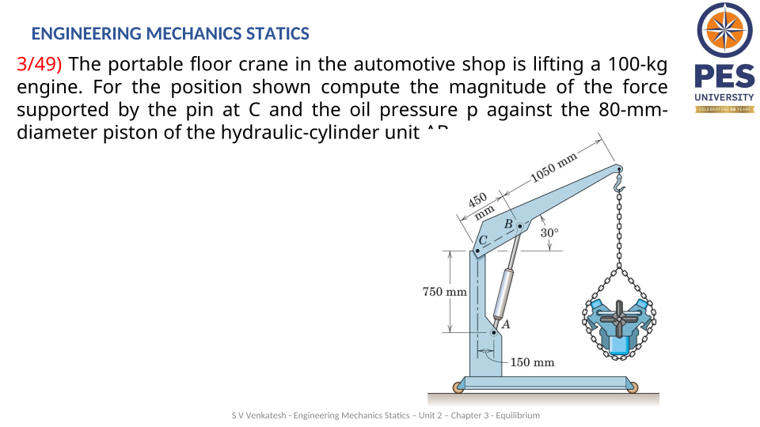
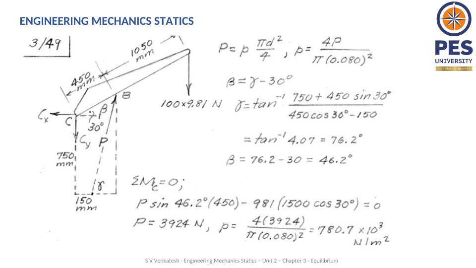
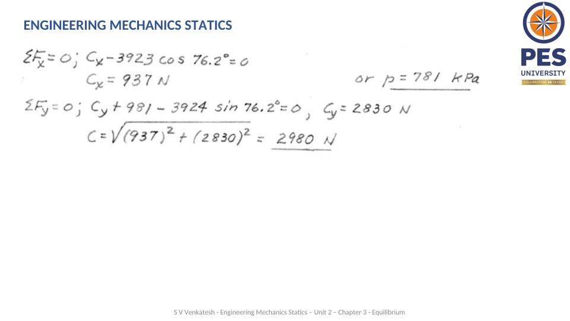
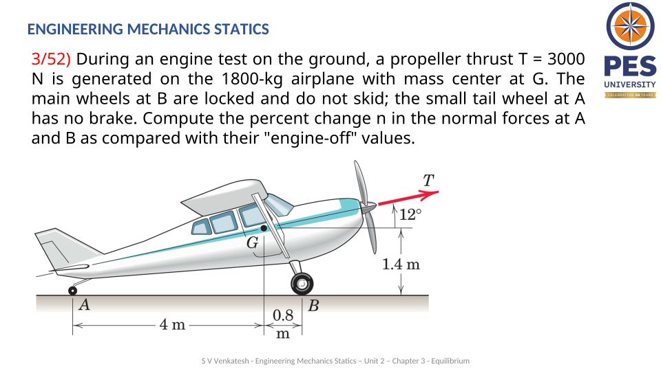
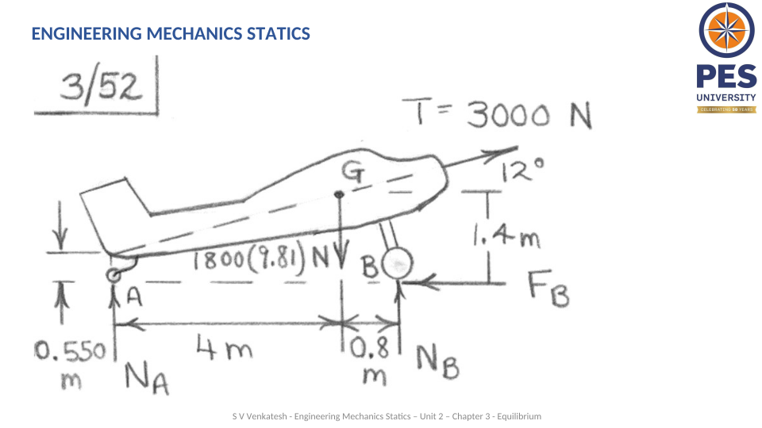
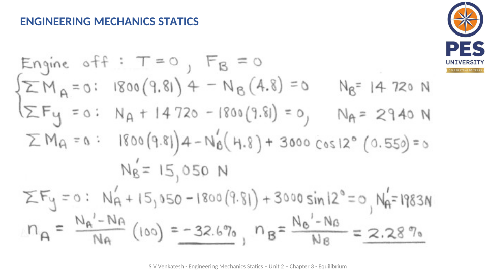
Important points and why
- Source slide page 1: no readable `.slides.md` text was extracted. The original rendered page is included as the adjacent source figure for visual inspection. EV0000387 · EV0000388 · EV0000389
- Source slide page 2 (extracted text): ENGINEERING MECHANICS STATICS 3/49) The portable floor crane in the automotive shop is lifting a 100-kg engine. For the position shown compute the magnitude of the force supported by the pin at C and the oil pressure p against the 80-mm-diameter piston of the hydraulic-cylinder unit AB. S V Venkatesh - Engineering Mechanics Statics – Unit 2 – Chapter 3 - Equilibrium EV0000390 · EV0000391 · EV0000392
- Source slide page 3 (extracted text): ENGINEERING MECHANICS STATICS S V Venkatesh - Engineering Mechanics Statics – Unit 2 – Chapter 3 - Equilibrium EV0000393 · EV0000394 · EV0000395
- Source slide page 4 (extracted text): ENGINEERING MECHANICS STATICS S V Venkatesh - Engineering Mechanics Statics – Unit 2 – Chapter 3 - Equilibrium EV0000396 · EV0000397 · EV0000398
- Source slide page 5 (extracted text): ENGINEERING MECHANICS STATICS 3/52) During an engine test on the ground, a propeller thrust T = 3000 N is generated on the 1800-kg airplane with mass center at G. The main wheels at B are locked and do not skid; the small tail wheel at A has no brake. Compute the percent change n in the normal forces at A and B as compared with their "engine-off" values. S V Venkatesh - Engineering Mechanics Statics – Unit 2 – Chapter 3 - Equilibrium EV0000399 · EV0000400 · EV0000401
- Source slide page 6 (extracted text): ENGINEERING MECHANICS STATICS S V Venkatesh - Engineering Mechanics Statics – Unit 2 – Chapter 3 - Equilibrium EV0000402 · EV0000403 · EV0000404
- Source slide page 7 (extracted text): ENGINEERING MECHANICS STATICS S V Venkatesh - Engineering Mechanics Statics – Unit 2 – Chapter 3 - Equilibrium ## Page / slide 8 (OCR) THANK YOU Dr. S V PES Venkatesh Civil Engineering Department of S & H UNIVERSITY CELEBRATING 5O YEARS EV0000405
- Source slide page 8: no readable `.slides.md` text was extracted. The original rendered page is included as the adjacent source figure for visual inspection. EV0000406
12UE26ME142A_Unit 2_Class 19.5_AV Summary
This lesson is indexed from the source video titled UE26ME142A_Unit 2_Class 19.5_AV Summary. Its complete timestamped transcript is preserved below in segment order. The original video path and content hash are recorded in datasets/lecture-corpus.json. Transcript text is source wording; it has not been silently corrected or rewritten. A candidate slide deck is grouped here according to the current matching score; the exact path and page locators are listed in the source evidence. EV0000170 · EV0000171
Graphs and diagrams


Important points and why
- Source slide page 1: no readable `.slides.md` text was extracted. The original rendered page is included as the adjacent source figure for visual inspection. EV0000407 · EV0000408 · EV0000409
- Source slide page 2 (extracted text): ENGINEERING MECHANICS STATICS 3/53) To test the deflection of the uniform 100-kg beam the 50- kg boy exerts a pull of 150 N on the rope rigged as shown. Compute the force supported by the pin at the hinge 0. S V Venkatesh - Engineering Mechanics Statics – Unit 2 – Chapter 3 - Equilibrium EV0000410 · EV0000411 · EV0000412
- Source slide page 3 (extracted text): ENGINEERING MECHANICS STATICS S V Venkatesh - Engineering Mechanics Statics – Unit 2 – Chapter 3 - Equilibrium EV0000413 · EV0000414 · EV0000415
- Source slide page 4 (extracted text): ENGINEERING MECHANICS STATICS 3/54) The pin A, which connects the 200-kg steel beam with center of mass at G to the vertical column, is welded both to the beam and to the column. To test the weld, the 80 kg man loads the beam by exerting a 300-N force on the rope which passes through a hole in the beam as shown. Calculate the torque (couple) M supported by the pin. S V Venkatesh - Engineering Mechanics Statics – Unit 2 – Chapter 3 - Equilibrium EV0000416 · EV0000417 · EV0000418
- Source slide page 5 (extracted text): ENGINEERING MECHANICS STATICS S V Venkatesh - Engineering Mechanics Statics – Unit 2 – Chapter 3 - Equilibrium ## Page / slide 6 (OCR) THANK YOU Dr. S V PES Venkatesh Civil Engineering Department of S & H UNIVERSITY CELEBRATING 5O YEARS EV0000419
- Source slide page 6: no readable `.slides.md` text was extracted. The original rendered page is included as the adjacent source figure for visual inspection. EV0000420
13UE26ME142A_Unit 2_Class 21_AV Summary
This lesson is indexed from the source video titled UE26ME142A_Unit 2_Class 21_AV Summary. Its complete timestamped transcript is preserved below in segment order. The original video path and content hash are recorded in datasets/lecture-corpus.json. Transcript text is source wording; it has not been silently corrected or rewritten. A candidate slide deck is grouped here according to the current matching score; the exact path and page locators are listed in the source evidence. EV0000186 · EV0000187
Graphs and diagrams


Important points and why
- Source slide page 1: no readable `.slides.md` text was extracted. The original rendered page is included as the adjacent source figure for visual inspection. EV0000421 · EV0000422 · EV0000423
- Source slide page 2 (extracted text): ENGINEERING MECHANICS STATICS Engineering Mechanics Statics Eighth Edition SI Version J. L. Meriam and L. G. Kraige Unit 2 - Chapter 4 Structures - Trusses S V Venkatesh - Engineering Mechanics Statics – Unit 2 – Chapter 4 - Trusses EV0000424 · EV0000425 · EV0000426
- Source slide page 3 (extracted text): ENGINEERING MECHANICS STATICS S V Venkatesh - Engineering Mechanics Statics – Unit 2 – Chapter 4 - Trusses EV0000427 · EV0000428 · EV0000429
- Source slide page 4 (extracted text): ENGINEERING MECHANICS STATICS S V Venkatesh - Engineering Mechanics Statics – Unit 2 – Chapter 4 - Trusses EV0000430 · EV0000431 · EV0000432
- Source slide page 5 (extracted text): ENGINEERING MECHANICS STATICS S V Venkatesh - Engineering Mechanics Statics – Unit 2 – Chapter 4 - Trusses EV0000433 · EV0000434 · EV0000435
- Source slide page 6 (extracted text): ENGINEERING MECHANICS STATICS S V Venkatesh - Engineering Mechanics Statics – Unit 2 – Chapter 4 - Trusses EV0000436 · EV0000437 · EV0000438
- Source slide page 7 (extracted text): ENGINEERING MECHANICS STATICS S V Venkatesh - Engineering Mechanics Statics – Unit 2 – Chapter 4 - Trusses EV0000439 · EV0000440 · EV0000441
- Source slide page 8 (extracted text): ENGINEERING MECHANICS STATICS S V Venkatesh - Engineering Mechanics Statics – Unit 2 – Chapter 4 - Trusses EV0000442 · EV0000443 · EV0000444
- Source slide page 9 (extracted text): ENGINEERING MECHANICS STATICS 4/5 Calculate the forces in members BE and BD of the loaded truss. Joint E ΣFy = 0, FBE = 0 ΣFx = 0, FAE = FED = - 4 kN FAE = - 4 kN Joint B ΣFy = 0, - FABsin45 – FBDsin45 + FBE = 0 FBD = - FAB = - 5.66 kN Joint A ΣFy = 0, FAB sin 45 = 4 ΣFx = 0, FAB = 5.66 kN - FABcos45 + FBDcos45 + FBC = 0 FBC = 5.66cos45 – (-5.66cos45) ΣFx = 0, FAB cos 45 + FAE FBC = 8.00 kN = 0 S V Venkatesh - Engineering Mechanics Statics – Unit 2 – Chapter 4 - Trusses FAE = - 4 kN EV0000445 · EV0000446 · EV0000447
- Source slide page 10 (extracted text): ENGINEERING MECHANICS STATICS 4/10 Determine the force in each member of the loaded truss. Make use of the symmetry of the truss and of the loading. S V Venkatesh - Engineering Mechanics Statics – Unit 2 – Chapter 4 - Trusses ## Page / slide 11 (OCR) ENGINEERINGMECHANICS STATICS Joint B: PES 96.0 EF.=0:BC+96.0sin51.3°=0,BC=-75kN（C) UNIVERSITY kN BC CELEBRATING50YEARS BH ∑F=0:-BH+96.0c0s51.3°=0,BH=60kNT 51.3 Joint H: 60 kN EF=0:-CHsinθ+30=0.CH=48.0kNC 75 kN GH ∑F.=0:48.0c0sθ+GH-75=0,GH=112.5kNT 30 kNI Joint G: CGA EF=0=CG=60kNT FG By symmetry: 112.5 FG=I12.5kNT,CF=48.0kNC kN 60 CD=75kNC,DF=60KNT kN EF=75kNT.DE=96.0KNC S V Venkatesh - Engineering Mechanics Statics - Unit 2 - Chapter 4 - Trusses EV0000448 · EV0000449 · EV0000450
- Source slide page 11: no readable `.slides.md` text was extracted. The original rendered page is included as the adjacent source figure for visual inspection. EV0000451 · EV0000452 · EV0000453
- Source slide page 12 (extracted text): ENGINEERING MECHANICS STATICS 4/8 Determine the force in each member of the loaded truss. Joint A ΣFy = 0, FABSin32 = 12 FAB = 22.65 kN ΣFx = 0, FABcos32+FAE = 0 FAE = - 19.20 kN 12kN 18kN Tanθ1 = 1.25/2, Joint E θ1 = 32 ΣFy = 0, FEB = 0 Tanθ2 = 1.25/3, ΣFx = 0, FED = FAE = θ1 = 22.61 -19.20 kN Tanθ3 = (1.75 - 1.25) / 3, S V Venkatesh - Engineering Mechanics Statics – Unit 2 – Chapter 4 - Trusses θ3 = 9.46 EV0000454 · EV0000455 · EV0000456
- Source slide page 13 (extracted text): ENGINEERING MECHANICS STATICS •4/8 Conti….. Joint B ΣFy = 0 - FABsin32 - FBE - FBDsin22.61 + FBCsin9.46 = 0 FBD = (FBCsin9.46 - 22.65sin32) / sin22.61 FBD = 0.43FBC – 31.22 ΣFx = 0 - 22.65cos32 + FBDcos22.61 + FBCcos9.46 = 0 19.20 = (0.43FBC – 31.22)0.92 + 0.99FBC FBC = (19.20 + 28.82) / 1.38 FBC = 34.79 kN S V Venkatesh - Engineering Mechanics Statics – Unit 2 – Chapter 4 - Trusses FBD 24 54 kN EV0000457 · EV0000458 · EV0000459
- Source slide page 14 (extracted text): ENGINEERING MECHANICS STATICS 4/12 Determine the forces in members AB, BC, and BD of the loaded truss. Joint C ΣFy = 0, FCD sin 45 + RC = 0 FCD = - 0.707 L ΣFx = 0, - FCD x cos 45 - FBC = 0 FBC = - (- 0.707 x cos 45) = 0.5L Joint B ΣFy = 0,ΣMA = 0, RC x 2R = L x FBD = 0R ΣFx = 0,RC = L/2 FCB - FAB = 0 FAB = 0.5L S V Venkatesh - Engineering Mechanics Statics – Unit 2 – Chapter 4 - Trusses EV0000460 · EV0000461 · EV0000462
- Source slide page 15 (extracted text): ENGINEERING MECHANICS STATICS 4/21 The signboard truss is designed to support a horizontal wind load of 4 kN. A separate analysis shows that 5/8 of this force is transmitted to the center connection at C and the rest is equally divided between D and B. Calculate the forces in members BE and BC. S V Venkatesh - Engineering Mechanics Statics – Unit 2 – Chapter 4 - Trusses EV0000463 · EV0000464 · EV0000465
- Source slide page 16 (extracted text): ENGINEERING MECHANICS STATICS 4/23 A snow load transfers the forces shown to the upper joints of a Pratt roof truss. Neglect any horizontal reactions at the supports and solve for the forces in all members. S V Venkatesh - Engineering Mechanics Statics – Unit 2 – Chapter 4 - Trusses EV0000466
- Source slide page 17 (extracted text): ENGINEERING MECHANICS STATICS S V Venkatesh - Engineering Mechanics Statics – Unit 2 – Chapter 4 - Trusses ## Page / slide 18 (OCR) THANK YOU Dr. S V PES Venkatesh Civil Engineering Department of S & H UNIVERSITY CELEBRATING 5O YEARS EV0000467
- Source slide page 18: no readable `.slides.md` text was extracted. The original rendered page is included as the adjacent source figure for visual inspection. EV0000468
14UE26ME142A_Unit 2_Class 22_AV Summary
This lesson is indexed from the source video titled UE26ME142A_Unit 2_Class 22_AV Summary. Its complete timestamped transcript is preserved below in segment order. The original video path and content hash are recorded in datasets/lecture-corpus.json. Transcript text is source wording; it has not been silently corrected or rewritten. A candidate slide deck is grouped here according to the current matching score; the exact path and page locators are listed in the source evidence. EV0000202 · EV0000203
Graphs and diagrams


Important points and why
- Source slide page 1: no readable `.slides.md` text was extracted. The original rendered page is included as the adjacent source figure for visual inspection. EV0000469 · EV0000470 · EV0000471
- Source slide page 2 (extracted text): ENGINEERING MECHANICS STATICS Method of Joint S V Venkatesh - Engineering Mechanics Statics – Unit 2 – Chapter 4 - Trusses EV0000472 · EV0000473 · EV0000474
- Source slide page 3 (extracted text): ENGINEERING MECHANICS STATICS S V Venkatesh - Engineering Mechanics Statics – Unit 2 – Chapter 4 - Trusses EV0000475 · EV0000476 · EV0000477
- Source slide page 4 (extracted text): ENGINEERING MECHANICS STATICS 4/5 Calculate the forces in members BE and BD of the loaded truss. Joint E ΣFy = 0, FBE = 0 ΣFx = 0, FAE = FED = - 4 kN FAE = - 4 kN Joint B ΣFy = 0, - FABsin45 – FBDsin45 + FBE = 0 Angle BAE & BDE = 450 FBD = - FAB = - 5.66 kN Joint A ΣFy = 0, FAB sin 45 = 4 ΣFx = 0, FAB = 5.66 kN - FABcos45 + FBDcos45 + FBC ΣFx = 0, FAB cos 45 + FAE = 0 = 0 S V Venkatesh - Engineering Mechanics Statics – Unit 2 – Chapter 4 - Trusses FBC = 5.66cos45 – (-5.66cos45) FAE = - 4 kN ## Page / slide 5 (OCR) THANK YOU Dr. S V PES Venkatesh Civil Engineering Department of S & H UNIVERSITY CELEBRATING 5O YEARS EV0000478
- Source slide page 5: no readable `.slides.md` text was extracted. The original rendered page is included as the adjacent source figure for visual inspection. EV0000479
15UE26ME142A_Unit 2_Class 23_AV Summary
This lesson is indexed from the source video titled UE26ME142A_Unit 2_Class 23_AV Summary. Its complete timestamped transcript is preserved below in segment order. The original video path and content hash are recorded in datasets/lecture-corpus.json. Transcript text is source wording; it has not been silently corrected or rewritten. A candidate slide deck is grouped here according to the current matching score; the exact path and page locators are listed in the source evidence. EV0000222 · EV0000223
Graphs and diagrams

Important points and why
- Source slide page 1: no readable `.slides.md` text was extracted. The original rendered page is included as the adjacent source figure for visual inspection. EV0000480 · EV0000481 · EV0000482
- Source slide page 2 (extracted text): ENGINEERING MECHANICS STATICS 4/8 Determine the force in each member of the loaded truss. C F Joint A ΣFy = 0, FABsin32 = 12 FAB = 22.65 kN ΣFx = 0, FABcos32+FAE = 0 FAE = - 19.20 kN 12kN 18kN Joint E Tanθ1(BAE) = 1.25/2, ΣFy = 0, FEB = 18 kN θ1 = 320 ΣFx = 0, FED = FAE = Tanθ2(BDE) = 1.25/3, -19.20 kN θ1 = 22.610 Tanθ3(CBF) = (1.75 - 1.25) / 3, S V Venkatesh - Engineering Mechanics Statics – Unit 2 – Chapter 4 - Trusses θ3 9 460 EV0000483 · EV0000484 · EV0000485
- Source slide page 3 (extracted text): ENGINEERING MECHANICS STATICS •4/8 Conti….. Joint B ΣFy = 0 - FABsin32 - FBE - FBDsin22.61 + FBCsin9.46 = 0 FBD = (FBCsin9.46 - 18 - 22.65sin32) / sin22.61 FBD = 0.43FBC – 78.4 ΣFx = 0 - 22.65cos32 + FBDcos22.61 + FBCcos9.46 = 0 19.20 = (0.43FBC – 78.4)0.92 + 0.99FBC FBC = (19.20 + 71.8) / 1.38 FBC = 65.94 kNS V Venkatesh - Engineering Mechanics Statics – Unit 2 – Chapter 4 - Trusses EV0000486 · EV0000487 · EV0000488
- Source slide page 4 (extracted text): ENGINEERING MECHANICS STATICS •4/8 Conti….. Joint D ΣFy = 0 FBDsin22.61 + FCD = 0 FCD = - (-50.05sin22.61) FCD = 19.24 kN S V Venkatesh - Engineering Mechanics Statics – Unit 2 – Chapter 4 - Trusses EV0000489 · EV0000490 · EV0000491
- Source slide page 5 (extracted text): ENGINEERING MECHANICS STATICS •4/8 Conti….. Sl Member Force Type No. 1 FAB 22.65 kN Tension 2 FAE - 19.20 kN Compression 3 FEB 18.00 kN Tension 4 FAE -19.20 kN Compression 5 FBC 65.94 kN Tension 6 FBD - 50.05 kN Compression 7 FCD 19.24 kN Tension S V Venkatesh - Engineering Mechanics Statics – Unit 2 – Chapter 4 - Trusses EV0000492 · EV0000493 · EV0000494
- Source slide page 6 (extracted text): ENGINEERING MECHANICS STATICS 4/10 Determine the force in each member of the loaded truss. Make use of the symmetry of the truss and of the loading. S V Venkatesh - Engineering Mechanics Statics – Unit 2 – Chapter 4 - Trusses ## Page / slide 7 (OCR) ENGINEERINGMECHANICS STATICS Joint B: PES 96.0 EF.=0:BC+96.0sin51.3°=0,BC=-75kN（C) UNIVERSITY kN BC CELEBRATING50YEARS BH ∑F=0:-BH+96.0c0s51.3°=0,BH=60kNT 51.3 Joint H: 60 kN EF=0:-CHsinθ+30=0.CH=48.0kNC 75 kN GH ∑F.=0:48.0c0sθ+GH-75=0,GH=112.5kNT 30 kNI Joint G: CGA EF=0=CG=60kNT FG By symmetry: 112.5 FG=I12.5kNT,CF=48.0kNC kN 60 CD=75kNC,DF=60KNT kN EF=75kNT.DE=96.0KNC S V Venkatesh - Engineering Mechanics Statics - Unit 2 - Chapter 4 - Trusses ## Page / slide 8 (OCR) THANK YOU Dr. S V PES Venkatesh Civil Engineering Department of S & H UNIVERSITY CELEBRATING 5O YEARS EV0000495
- Source slide page 7: no readable `.slides.md` text was extracted. The original rendered page is included as the adjacent source figure for visual inspection. EV0000496
- Source slide page 8: no readable `.slides.md` text was extracted. The original rendered page is included as the adjacent source figure for visual inspection. EV0000497
16UE26ME142A_Unit 2_Class 24_AV Summary
This lesson is indexed from the source video titled UE26ME142A_Unit 2_Class 24_AV Summary. Its complete timestamped transcript is preserved below in segment order. The original video path and content hash are recorded in datasets/lecture-corpus.json. Transcript text is source wording; it has not been silently corrected or rewritten. A candidate slide deck is grouped here according to the current matching score; the exact path and page locators are listed in the source evidence. EV0000242 · EV0000243
Graphs and diagrams


Important points and why
- Source slide page 1: no readable `.slides.md` text was extracted. The original rendered page is included as the adjacent source figure for visual inspection. EV0000498 · EV0000499 · EV0000500
- Source slide page 2 (extracted text): ENGINEERING MECHANICS STATICS 4/12 Determine the forces in members AB, BC, and BD of the loaded truss. Joint C ΣFy = 0, FCD sin 45 + RC = 0 FCD = - 0.707 L ΣFx = 0, - FCD x cos 45 - FBC = 0 FBC = - (- 0.707 x cos 45) = FBC = 0.5L Joint BΣMA = 0, RC x 2R = L x ΣFy = 0,R FBD = 0RC = L/2 ΣFx = 0, FCB - FAB = 0 S V Venkatesh - Engineering MechanicsFABStatics= –0.5LUnit 2 – Chapter 4 - Trusses EV0000501 · EV0000502 · EV0000503
- Source slide page 3 (extracted text): ENGINEERING MECHANICS STATICS 4/12 Cont….. Joint D ΣFx = 0, FCD x cos 45 - FAD x cos 45 + L = 0 FAD = (- 0.707 L x cos 45) + L FAD = 0.5 L Sl Member Force Type No. 1 FCD - 0.707L Compression 2 FBC 0.5L Tension 3 FBD 0 4 FAB 0.5L Tension 5 FAD S V Venkatesh - Engineering0.5LMechanics Statics – Unit 2 – ChapterTension4 - Trusses EV0000504 · EV0000505 · EV0000506
- Source slide page 4 (extracted text): ENGINEERING MECHANICS STATICS 4/21 The signboard truss is designed to support a horizontal wind load of 4 kN. A separate analysis shows that 5/8 of this force is transmitted to the center connection at C and the rest is equally divided between D and B. Calculate the forces in members BE and BC. S V Venkatesh - Engineering Mechanics Statics – Unit 2 – Chapter 4 - Trusses EV0000507 · EV0000508 · EV0000509
- Source slide page 5 (extracted text): ENGINEERING MECHANICS STATICS 4/23 A snow load transfers the forces shown to the upper joints of a Pratt roof truss. Neglect any horizontal reactions at the supports and solve for the forces in all members. S V Venkatesh - Engineering Mechanics Statics – Unit 2 – Chapter 4 - Trusses EV0000510 · EV0000511 · EV0000512
- Source slide page 6 (extracted text): ENGINEERING MECHANICS STATICS S V Venkatesh - Engineering Mechanics Statics – Unit 2 – Chapter 4 - Trusses ## Page / slide 7 (OCR) THANK YOU Dr. S V PES Venkatesh Civil Engineering Department of S & H UNIVERSITY CELEBRATING 5O YEARS EV0000513
- Source slide page 7: no readable `.slides.md` text was extracted. The original rendered page is included as the adjacent source figure for visual inspection. EV0000514
17Source slide deck: UE26ME142A Unit 2 Class 25 Lecture PPT
This entry preserves the complete slide deck titled UE26ME142A Unit 2 Class 25 Lecture PPT as searchable extracted page text and page-faithful rendered images. Its association with a particular video is not confirmed; it remains a separate topic under Engineering Mechanics 1, Unit_02, to avoid an unsupported match. EV0000515 · EV0000516
Graphs and diagrams
Important points and why
- Source slide page 1 (extracted text): ENGINEERING MECHANICS 1 Dr. S V Venkatesh CivilEngineering DepartmentofS&H 1Engineering Mechanics-01- Unit 2 - Chapter - 4 - Method of sections EV0000515 · EV0000516 · EV0000517
- Source slide page 2 (extracted text): CLASS - 25 ENGINEERING MECHANICS 1 ENGINEERING MECHANICS 1 (4–0–0–4–4) CIVIL ENGINEERING, DEPARTMENT OF MECHANICAL ENGINEERING 2Engineering Mechanics-01- Unit 2 - Chapter - 4 - Method of sections EV0000518 · EV0000519 · EV0000520
- Source slide page 3 (extracted text): ENGINEERING MECHANICS-1-STATICS UNIT II: Equilibrium & Structures Equilibrium: Introduction, Equilibrium in Two Dimensions - System Isolation and the Free-Body Diagram, Equilibrium conditions, Numerical problems. Structures: Introduction, Plane Trusses, Method of Joints, Numerical problems, Method of sections, Numerical. 15 Hours 3 Engineering Mechanics-01- Unit 2 - Chapter - 4 - Method of sections EV0000521 · EV0000522 · EV0000523
- Source slide page 4 (extracted text): ENGINEERING MECHANICS Course Content: UNIT II: Equilibrium & Structures CHAPTER 3: Problem No. 3/1 to 3/57 – Excluding 3/22, 3/28, 3/29, 3/36, 3/38, 3/41, 3/46, 3/50, 3/51, 3/55, 3/56. Total – 46 Note: 23 Problems to be solved in class – 23 Problems Assignment/Revision/Selfstudy. CHAPTER 4: Problem No. 4/1 to 4/29, 4/31 to 4/40 - Excluding 4/13, 4/14, 4/15, 4/16, 4/18, 4/19, 4/20, 4/21, 4/22, 4/25, 4/26, 4/27, 4/28. Total – 26 Note: 13 Problems to be solved in class – 13 Problems 4 Engineering Mechanics-01- Unit 2 - Chapter - 4 - Method of sections Assignment/Revision/Selfstudy EV0000524 · EV0000525 · EV0000526
- Source slide page 5 (extracted text): ENGINEERING MECHANICS - 01 METHOD OF SECTIONS 5 Engineering Mechanics-01- Unit 2 - Chapter - 4 - Method of sections EV0000527 · EV0000528 · EV0000529
- Source slide page 6 (extracted text): ENGINEERING MECHANICS - 1 Method of sections IIlustration of the method of sections Figure 4/12 6 Engineering Mechanics-01- Unit 2 - Chapter - 4 - Method of sections EV0000530 · EV0000531 · EV0000532
- Source slide page 7 (extracted text): ENGINEERING MECHANICS - 1 Method of sections (Procedure) Solve for unknown forces using the method of sections is: (Source: EngineeringStatics-Daniel W. Baker, William Haynes) •Determine if a truss can be modeled as a simple truss. •Identify and eliminate all zero-force members. • Solve for the external reactions, if necessary. •Every cut member exposes an unknown internal force(not morethan 3 unknowns) •Select the easier of the two halves of the truss and draw its free- body diagram. 7 Engineering Mechanics-01- Unit 2 - Chapter - 4 - Method of sections•Assume that all unknown forces are in tension, then solve for EV0000533 · EV0000534 · EV0000535
- Source slide page 8 (extracted text): THANK YOU Dr. S V Venkatesh CivilEngineering DepartmentofS&H 8Engineering Mechanics-01- Unit 2 - Chapter - 4 - Method of sections EV0000536 · EV0000537 · EV0000538
18Source slide deck: UE26ME142A Unit 2 Class 26 Lecture PPT
This entry preserves the complete slide deck titled UE26ME142A Unit 2 Class 26 Lecture PPT as searchable extracted page text and page-faithful rendered images. Its association with a particular video is not confirmed; it remains a separate topic under Engineering Mechanics 1, Unit_02, to avoid an unsupported match. EV0000539 · EV0000540
Graphs and diagrams
Important points and why
- Source slide page 1 (extracted text): ENGINEERING MECHANICS 1 Dr. S V Venkatesh CivilEngineering DepartmentofS&H Engineering Mechanics-01 - Unit 2 - Chapter - 4 - Method of 1 sections EV0000539 · EV0000540 · EV0000541
- Source slide page 2 (extracted text): CLASS - 26 ENGINEERING MECHANICS 1 ENGINEERING MECHANICS 1 (4–0–0–4–4) CIVIL ENGINEERING, DEPARTMENT OF MECHANICAL ENGINEERING Engineering Mechanics-01 - Unit 2 - Chapter - 4 - Method of 2 sections EV0000542 · EV0000543 · EV0000544
- Source slide page 3 (extracted text): ENGINEERING MECHANICS - 01 METHOD OF SECTIONS Engineering Mechanics-01 - Unit 2 - Chapter - 4 - Method of 3 sections EV0000545 · EV0000546 · EV0000547
- Source slide page 4 (extracted text): ENGINEERING MECHANICS-1 Method of sections 4/31 Determine the force in member CG. . Engineering Mechanics-01 - Unit 2 - Chapter - 4 - Method of 4 sections EV0000548 · EV0000549 · EV0000550
- Source slide page 5 (extracted text): ENGINEERING MECHANICS-1 Method of sections 4/31. . Engineering Mechanics-01 - Unit 2 - Chapter - 4 - Method of 5 sections EV0000551 · EV0000552 · EV0000553
- Source slide page 6 (extracted text): ENGINEERING MECHANICS-1 Method of sections 4/32 Determine the force in member AE of the loaded truss.. . Engineering Mechanics-01 - Unit 2 - Chapter - 4 - Method of 6 sections EV0000554 · EV0000555 · EV0000556
- Source slide page 7 (extracted text): ENGINEERING MECHANICS-1 Method of sections 4/32.. . Engineering Mechanics-01 - Unit 2 - Chapter - 4 - Method of 7 sections EV0000557 · EV0000558 · EV0000559
- Source slide page 8 (extracted text): ENGINEERING MECHANICS-1 Method of sections 4/33 Determine the forces in members BC and CG.. . Engineering Mechanics-01 - Unit 2 - Chapter - 4 - Method of 8 sections EV0000560 · EV0000561 · EV0000562
- Source slide page 9 (extracted text): ENGINEERING MECHANICS-1 Method of sections 4/33.. . Engineering Mechanics-01 - Unit 2 - Chapter - 4 - Method of 9 sections EV0000563 · EV0000564 · EV0000565
- Source slide page 10 (extracted text): ENGINEERING MECHANICS-1 Method of sections 4/34 Determine the forces in members CG and GH of the symmetrically loaded truss.. . Engineering Mechanics-01 - Unit 2 - Chapter - 4 - Method of 10 sections EV0000566 · EV0000567 · EV0000568
- Source slide page 11 (extracted text): ENGINEERING MECHANICS-1 Method of sections 4/34 . Engineering Mechanics-01 - Unit 2 - Chapter - 4 - Method of 11 sections EV0000569 · EV0000570 · EV0000571
- Source slide page 12 (extracted text): ENGINEERING MECHANICS-1 Method of sections 4/35 Determine the force in member BC of the loaded truss. . Engineering Mechanics-01 - Unit 2 - Chapter - 4 - Method of 12 sections EV0000572 · EV0000573 · EV0000574
- Source slide page 13 (extracted text): ENGINEERING MECHANICS-1 Method of sections 4/35 . Engineering Mechanics-01 - Unit 2 - Chapter - 4 - Method of 13 sections EV0000575 · EV0000576 · EV0000577
- Source slide page 14 (extracted text): THANK YOU Dr. S V Venkatesh CivilEngineering DepartmentofS&H Engineering Mechanics-01 - Unit 2 - Chapter - 4 - Method of 14 sections EV0000578 · EV0000579 · EV0000580
19Source slide deck: UE26ME142A Unit 2 Class 27 Lecture PPT
This entry preserves the complete slide deck titled UE26ME142A Unit 2 Class 27 Lecture PPT as searchable extracted page text and page-faithful rendered images. Its association with a particular video is not confirmed; it remains a separate topic under Engineering Mechanics 1, Unit_02, to avoid an unsupported match. EV0000581 · EV0000582
Graphs and diagrams
Important points and why
- Source slide page 1 (extracted text): ENGINEERING MECHANICS 1 Dr. S V Venkatesh CivilEngineering DepartmentofS&H Engineering Mechanics-01 - Unit 2 - Chapter - 4 - Method of 1 sections EV0000581 · EV0000582 · EV0000583
- Source slide page 2 (extracted text): CLASS - 27 ENGINEERING MECHANICS 1 – STATICS ENGINEERING MECHANICS 1 – STATICS (4–0–0–4–4) CIVIL ENGINEERING, DEPARTMENT OF MECHANICAL ENGINEERING Engineering Mechanics-01 - Unit 2 - Chapter - 4 - Method of 2 sections EV0000584 · EV0000585 · EV0000586
- Source slide page 3 (extracted text): ENGINEERING MECHANICS-1 Method of sections 4/36 Determine the force in member BE of the loaded truss. . Engineering Mechanics-01 - Unit 2 - Chapter - 4 - Method of 3 sections EV0000587 · EV0000588 · EV0000589
- Source slide page 4 (extracted text): ENGINEERING MECHANICS-1 Method of sections 4/36 . Engineering Mechanics-01 - Unit 2 - Chapter - 4 - Method of 4 sections EV0000590 · EV0000591 · EV0000592
- Source slide page 5 (extracted text): ENGINEERING MECHANICS-1 Method of sections 4/37 Determine the forces in members DE and DL. . Engineering Mechanics-01 - Unit 2 - Chapter - 4 - Method of 5 sections EV0000593 · EV0000594 · EV0000595
- Source slide page 6 (extracted text): ENGINEERING MECHANICS-1 Method of sections 4/37. . Engineering Mechanics-01 - Unit 2 - Chapter - 4 - Method of 6 sections EV0000596 · EV0000597 · EV0000598
- Source slide page 7 (extracted text): ENGINEERING MECHANICS-1 Method of sections 4/38 Calculate the forces in members BC, BE, and EF. Solve for each force from an equilibrium equation which contains that force as the only unknown. . Engineering Mechanics-01 - Unit 2 - Chapter - 4 - Method of 7 sections EV0000599 · EV0000600 · EV0000601
- Source slide page 8 (extracted text): ENGINEERING MECHANICS-1 Method of sections 4/38 . Engineering Mechanics-01 - Unit 2 - Chapter - 4 - Method of 8 sections EV0000602 · EV0000603 · EV0000604
- Source slide page 9 (extracted text): ENGINEERING MECHANICS-1 Method of sections 4/39 Determine the forces in members BC and CF of the loaded truss, repeated here from Prob. 4/19. . Engineering Mechanics-01 - Unit 2 - Chapter - 4 - Method of 9 sections EV0000605 · EV0000606 · EV0000607
- Source slide page 10 (extracted text): ENGINEERING MECHANICS-1 Method of sections 4/39 . Engineering Mechanics-01 - Unit 2 - Chapter - 4 - Method of 10 sections EV0000608 · EV0000609 · EV0000610
- Source slide page 11 (extracted text): ENGINEERING MECHANICS-1 Method of sections 4/39 . Engineering Mechanics-01 - Unit 2 - Chapter - 4 - Method of 11 sections EV0000611 · EV0000612 · EV0000613
- Source slide page 12 (extracted text): ENGINEERING MECHANICS-1 Method of sections 4/40 Calculate the forces in members BC, CD, and CG of the loaded truss composed of equilateral triangles, each of side length 8 m. . Engineering Mechanics-01 - Unit 2 - Chapter - 4 - Method of 12 sections EV0000614 · EV0000615 · EV0000616
- Source slide page 13 (extracted text): ENGINEERING MECHANICS-1 Method of sections 4/40 . Engineering Mechanics-01 - Unit 2 - Chapter - 4 - Method of 13 sections EV0000617 · EV0000618 · EV0000619
- Source slide page 14 (extracted text): ENGINEERING MECHANICS-1 Method of sections 4/40 . Engineering Mechanics-01 - Unit 2 - Chapter - 4 - Method of 14 sections EV0000620 · EV0000621 · EV0000622
- Source slide page 15 (extracted text): THANK YOU Dr. S V Venkatesh CivilEngineering DepartmentofS&H Engineering Mechanics-01 - Unit 2 - Chapter - 4 - Method of 15 sections EV0000623 · EV0000624 · EV0000625
ASymbol glossary
| Symbol | Name | Meaning | Appears in |
|---|
BSources, coverage and gaps
| Source | Path | Use |
|---|---|---|
| Official unit catalogue | https://huggingface.co/buckets/alvin3y10/data/tree/pesuc/PESU_Materials/units.json | Official course/unit title and index. |
| UE26ME142A_Unit 2_Class 14_AVSummary transcript (JSON) | https://huggingface.co/buckets/alvin3y10/data/tree/pesuc/PESU_Materials/Sem-1/UE26ME142A_Engineering_Mechanics_1/Unit_02/AV_Summaries/014_UE26ME142A_Unit_2_Class_14_AVSummary__d028b1de67591979.transcript.json | Full JSON sidecar. Normalized text similarity to canonical JSON: 1.0000; only the JSON segmentation supplies the displayed timestamps. |
| UE26ME142A_Unit 2_Class 14_AVSummary transcript (Markdown) | https://huggingface.co/buckets/alvin3y10/data/tree/pesuc/PESU_Materials/Sem-1/UE26ME142A_Engineering_Mechanics_1/Unit_02/AV_Summaries/014_UE26ME142A_Unit_2_Class_14_AVSummary__d028b1de67591979.transcript.md | Full Markdown sidecar. Normalized text similarity to canonical JSON: 1.0000; only the JSON segmentation supplies the displayed timestamps. |
| UE26ME142A_Unit 2_Class 14_AVSummary transcript (plain text) | https://huggingface.co/buckets/alvin3y10/data/tree/pesuc/PESU_Materials/Sem-1/UE26ME142A_Engineering_Mechanics_1/Unit_02/AV_Summaries/014_UE26ME142A_Unit_2_Class_14_AVSummary__d028b1de67591979.transcript.txt | Full plain text sidecar. Normalized text similarity to canonical JSON: 0.9995; only the JSON segmentation supplies the displayed timestamps. |
| UE26ME142A_Unit 2_Class 14_AVSummary transcript (SRT) | https://huggingface.co/buckets/alvin3y10/data/tree/pesuc/PESU_Materials/Sem-1/UE26ME142A_Engineering_Mechanics_1/Unit_02/AV_Summaries/014_UE26ME142A_Unit_2_Class_14_AVSummary__d028b1de67591979.srt | Full SRT sidecar. Normalized text similarity to canonical JSON: 1.0000; only the JSON segmentation supplies the displayed timestamps. |
| UE26ME142A_Unit 2_Class 15_AVSummary transcript (JSON) | https://huggingface.co/buckets/alvin3y10/data/tree/pesuc/PESU_Materials/Sem-1/UE26ME142A_Engineering_Mechanics_1/Unit_02/AV_Summaries/015_UE26ME142A_Unit_2_Class_15_AVSummary__29e4398836d93577.transcript.json | Full JSON sidecar. Normalized text similarity to canonical JSON: 1.0000; only the JSON segmentation supplies the displayed timestamps. |
| UE26ME142A_Unit 2_Class 15_AVSummary transcript (Markdown) | https://huggingface.co/buckets/alvin3y10/data/tree/pesuc/PESU_Materials/Sem-1/UE26ME142A_Engineering_Mechanics_1/Unit_02/AV_Summaries/015_UE26ME142A_Unit_2_Class_15_AVSummary__29e4398836d93577.transcript.md | Full Markdown sidecar. Normalized text similarity to canonical JSON: 1.0000; only the JSON segmentation supplies the displayed timestamps. |
| UE26ME142A_Unit 2_Class 15_AVSummary transcript (plain text) | https://huggingface.co/buckets/alvin3y10/data/tree/pesuc/PESU_Materials/Sem-1/UE26ME142A_Engineering_Mechanics_1/Unit_02/AV_Summaries/015_UE26ME142A_Unit_2_Class_15_AVSummary__29e4398836d93577.transcript.txt | Full plain text sidecar. Normalized text similarity to canonical JSON: 0.9995; only the JSON segmentation supplies the displayed timestamps. |
| UE26ME142A_Unit 2_Class 15_AVSummary transcript (SRT) | https://huggingface.co/buckets/alvin3y10/data/tree/pesuc/PESU_Materials/Sem-1/UE26ME142A_Engineering_Mechanics_1/Unit_02/AV_Summaries/015_UE26ME142A_Unit_2_Class_15_AVSummary__29e4398836d93577.srt | Full SRT sidecar. Normalized text similarity to canonical JSON: 1.0000; only the JSON segmentation supplies the displayed timestamps. |
| UE26ME142A_Unit 2_Class 16_AVSummary transcript (JSON) | https://huggingface.co/buckets/alvin3y10/data/tree/pesuc/PESU_Materials/Sem-1/UE26ME142A_Engineering_Mechanics_1/Unit_02/AV_Summaries/016_UE26ME142A_Unit_2_Class_16_AVSummary__12354184f0f96c13.transcript.json | Full JSON sidecar. Normalized text similarity to canonical JSON: 1.0000; only the JSON segmentation supplies the displayed timestamps. |
| UE26ME142A_Unit 2_Class 16_AVSummary transcript (Markdown) | https://huggingface.co/buckets/alvin3y10/data/tree/pesuc/PESU_Materials/Sem-1/UE26ME142A_Engineering_Mechanics_1/Unit_02/AV_Summaries/016_UE26ME142A_Unit_2_Class_16_AVSummary__12354184f0f96c13.transcript.md | Full Markdown sidecar. Normalized text similarity to canonical JSON: 1.0000; only the JSON segmentation supplies the displayed timestamps. |
| UE26ME142A_Unit 2_Class 16_AVSummary transcript (plain text) | https://huggingface.co/buckets/alvin3y10/data/tree/pesuc/PESU_Materials/Sem-1/UE26ME142A_Engineering_Mechanics_1/Unit_02/AV_Summaries/016_UE26ME142A_Unit_2_Class_16_AVSummary__12354184f0f96c13.transcript.txt | Full plain text sidecar. Normalized text similarity to canonical JSON: 0.9996; only the JSON segmentation supplies the displayed timestamps. |
| UE26ME142A_Unit 2_Class 16_AVSummary transcript (SRT) | https://huggingface.co/buckets/alvin3y10/data/tree/pesuc/PESU_Materials/Sem-1/UE26ME142A_Engineering_Mechanics_1/Unit_02/AV_Summaries/016_UE26ME142A_Unit_2_Class_16_AVSummary__12354184f0f96c13.srt | Full SRT sidecar. Normalized text similarity to canonical JSON: 1.0000; only the JSON segmentation supplies the displayed timestamps. |
| UE26ME142A_Unit 2_Class 17_AVSummary transcript (JSON) | https://huggingface.co/buckets/alvin3y10/data/tree/pesuc/PESU_Materials/Sem-1/UE26ME142A_Engineering_Mechanics_1/Unit_02/AV_Summaries/017_UE26ME142A_Unit_2_Class_17_AVSummary__25ac1a3b8349a649.transcript.json | Full JSON sidecar. Normalized text similarity to canonical JSON: 1.0000; only the JSON segmentation supplies the displayed timestamps. |
| UE26ME142A_Unit 2_Class 17_AVSummary transcript (Markdown) | https://huggingface.co/buckets/alvin3y10/data/tree/pesuc/PESU_Materials/Sem-1/UE26ME142A_Engineering_Mechanics_1/Unit_02/AV_Summaries/017_UE26ME142A_Unit_2_Class_17_AVSummary__25ac1a3b8349a649.transcript.md | Full Markdown sidecar. Normalized text similarity to canonical JSON: 1.0000; only the JSON segmentation supplies the displayed timestamps. |
| UE26ME142A_Unit 2_Class 17_AVSummary transcript (plain text) | https://huggingface.co/buckets/alvin3y10/data/tree/pesuc/PESU_Materials/Sem-1/UE26ME142A_Engineering_Mechanics_1/Unit_02/AV_Summaries/017_UE26ME142A_Unit_2_Class_17_AVSummary__25ac1a3b8349a649.transcript.txt | Full plain text sidecar. Normalized text similarity to canonical JSON: 0.9995; only the JSON segmentation supplies the displayed timestamps. |
| UE26ME142A_Unit 2_Class 17_AVSummary transcript (SRT) | https://huggingface.co/buckets/alvin3y10/data/tree/pesuc/PESU_Materials/Sem-1/UE26ME142A_Engineering_Mechanics_1/Unit_02/AV_Summaries/017_UE26ME142A_Unit_2_Class_17_AVSummary__25ac1a3b8349a649.srt | Full SRT sidecar. Normalized text similarity to canonical JSON: 1.0000; only the JSON segmentation supplies the displayed timestamps. |
| UE26ME142A_Unit 2_Class 18_AVSummary transcript (JSON) | https://huggingface.co/buckets/alvin3y10/data/tree/pesuc/PESU_Materials/Sem-1/UE26ME142A_Engineering_Mechanics_1/Unit_02/AV_Summaries/018_UE26ME142A_Unit_2_Class_18_AVSummary__dafbae985b8a08a6.transcript.json | Full JSON sidecar. Normalized text similarity to canonical JSON: 1.0000; only the JSON segmentation supplies the displayed timestamps. |
| UE26ME142A_Unit 2_Class 18_AVSummary transcript (Markdown) | https://huggingface.co/buckets/alvin3y10/data/tree/pesuc/PESU_Materials/Sem-1/UE26ME142A_Engineering_Mechanics_1/Unit_02/AV_Summaries/018_UE26ME142A_Unit_2_Class_18_AVSummary__dafbae985b8a08a6.transcript.md | Full Markdown sidecar. Normalized text similarity to canonical JSON: 1.0000; only the JSON segmentation supplies the displayed timestamps. |
| UE26ME142A_Unit 2_Class 18_AVSummary transcript (plain text) | https://huggingface.co/buckets/alvin3y10/data/tree/pesuc/PESU_Materials/Sem-1/UE26ME142A_Engineering_Mechanics_1/Unit_02/AV_Summaries/018_UE26ME142A_Unit_2_Class_18_AVSummary__dafbae985b8a08a6.transcript.txt | Full plain text sidecar. Normalized text similarity to canonical JSON: 0.9995; only the JSON segmentation supplies the displayed timestamps. |
| UE26ME142A_Unit 2_Class 18_AVSummary transcript (SRT) | https://huggingface.co/buckets/alvin3y10/data/tree/pesuc/PESU_Materials/Sem-1/UE26ME142A_Engineering_Mechanics_1/Unit_02/AV_Summaries/018_UE26ME142A_Unit_2_Class_18_AVSummary__dafbae985b8a08a6.srt | Full SRT sidecar. Normalized text similarity to canonical JSON: 1.0000; only the JSON segmentation supplies the displayed timestamps. |
| UE26ME142A_Unit 2_Class 19.0_AVSummary transcript (JSON) | https://huggingface.co/buckets/alvin3y10/data/tree/pesuc/PESU_Materials/Sem-1/UE26ME142A_Engineering_Mechanics_1/Unit_02/AV_Summaries/019_UE26ME142A_Unit_2_Class_19.0_AVSummary__bd8cd9929f8bd715.transcript.json | Full JSON sidecar. Normalized text similarity to canonical JSON: 1.0000; only the JSON segmentation supplies the displayed timestamps. |
| UE26ME142A_Unit 2_Class 19.0_AVSummary transcript (Markdown) | https://huggingface.co/buckets/alvin3y10/data/tree/pesuc/PESU_Materials/Sem-1/UE26ME142A_Engineering_Mechanics_1/Unit_02/AV_Summaries/019_UE26ME142A_Unit_2_Class_19.0_AVSummary__bd8cd9929f8bd715.transcript.md | Full Markdown sidecar. Normalized text similarity to canonical JSON: 1.0000; only the JSON segmentation supplies the displayed timestamps. |
| UE26ME142A_Unit 2_Class 19.0_AVSummary transcript (plain text) | https://huggingface.co/buckets/alvin3y10/data/tree/pesuc/PESU_Materials/Sem-1/UE26ME142A_Engineering_Mechanics_1/Unit_02/AV_Summaries/019_UE26ME142A_Unit_2_Class_19.0_AVSummary__bd8cd9929f8bd715.transcript.txt | Full plain text sidecar. Normalized text similarity to canonical JSON: 0.9993; only the JSON segmentation supplies the displayed timestamps. |
| UE26ME142A_Unit 2_Class 19.0_AVSummary transcript (SRT) | https://huggingface.co/buckets/alvin3y10/data/tree/pesuc/PESU_Materials/Sem-1/UE26ME142A_Engineering_Mechanics_1/Unit_02/AV_Summaries/019_UE26ME142A_Unit_2_Class_19.0_AVSummary__bd8cd9929f8bd715.srt | Full SRT sidecar. Normalized text similarity to canonical JSON: 1.0000; only the JSON segmentation supplies the displayed timestamps. |
| UE26ME142A_Unit 2_Class 19.1_AVSummary transcript (JSON) | https://huggingface.co/buckets/alvin3y10/data/tree/pesuc/PESU_Materials/Sem-1/UE26ME142A_Engineering_Mechanics_1/Unit_02/AV_Summaries/019_UE26ME142A_Unit_2_Class_19.1_AVSummary__877d29f4ad0c369d.transcript.json | Full JSON sidecar. Normalized text similarity to canonical JSON: 1.0000; only the JSON segmentation supplies the displayed timestamps. |
| UE26ME142A_Unit 2_Class 19.1_AVSummary transcript (Markdown) | https://huggingface.co/buckets/alvin3y10/data/tree/pesuc/PESU_Materials/Sem-1/UE26ME142A_Engineering_Mechanics_1/Unit_02/AV_Summaries/019_UE26ME142A_Unit_2_Class_19.1_AVSummary__877d29f4ad0c369d.transcript.md | Full Markdown sidecar. Normalized text similarity to canonical JSON: 1.0000; only the JSON segmentation supplies the displayed timestamps. |
| UE26ME142A_Unit 2_Class 19.1_AVSummary transcript (plain text) | https://huggingface.co/buckets/alvin3y10/data/tree/pesuc/PESU_Materials/Sem-1/UE26ME142A_Engineering_Mechanics_1/Unit_02/AV_Summaries/019_UE26ME142A_Unit_2_Class_19.1_AVSummary__877d29f4ad0c369d.transcript.txt | Full plain text sidecar. Normalized text similarity to canonical JSON: 0.9993; only the JSON segmentation supplies the displayed timestamps. |
| UE26ME142A_Unit 2_Class 19.1_AVSummary transcript (SRT) | https://huggingface.co/buckets/alvin3y10/data/tree/pesuc/PESU_Materials/Sem-1/UE26ME142A_Engineering_Mechanics_1/Unit_02/AV_Summaries/019_UE26ME142A_Unit_2_Class_19.1_AVSummary__877d29f4ad0c369d.srt | Full SRT sidecar. Normalized text similarity to canonical JSON: 1.0000; only the JSON segmentation supplies the displayed timestamps. |
| UE26ME142A_Unit 2_Class 19.2_AVSummary transcript (JSON) | https://huggingface.co/buckets/alvin3y10/data/tree/pesuc/PESU_Materials/Sem-1/UE26ME142A_Engineering_Mechanics_1/Unit_02/AV_Summaries/019_UE26ME142A_Unit_2_Class_19.2_AVSummary__ee992a99bb75e05b.transcript.json | Full JSON sidecar. Normalized text similarity to canonical JSON: 1.0000; only the JSON segmentation supplies the displayed timestamps. |
| UE26ME142A_Unit 2_Class 19.2_AVSummary transcript (Markdown) | https://huggingface.co/buckets/alvin3y10/data/tree/pesuc/PESU_Materials/Sem-1/UE26ME142A_Engineering_Mechanics_1/Unit_02/AV_Summaries/019_UE26ME142A_Unit_2_Class_19.2_AVSummary__ee992a99bb75e05b.transcript.md | Full Markdown sidecar. Normalized text similarity to canonical JSON: 1.0000; only the JSON segmentation supplies the displayed timestamps. |
| UE26ME142A_Unit 2_Class 19.2_AVSummary transcript (plain text) | https://huggingface.co/buckets/alvin3y10/data/tree/pesuc/PESU_Materials/Sem-1/UE26ME142A_Engineering_Mechanics_1/Unit_02/AV_Summaries/019_UE26ME142A_Unit_2_Class_19.2_AVSummary__ee992a99bb75e05b.transcript.txt | Full plain text sidecar. Normalized text similarity to canonical JSON: 0.9992; only the JSON segmentation supplies the displayed timestamps. |
| UE26ME142A_Unit 2_Class 19.2_AVSummary transcript (SRT) | https://huggingface.co/buckets/alvin3y10/data/tree/pesuc/PESU_Materials/Sem-1/UE26ME142A_Engineering_Mechanics_1/Unit_02/AV_Summaries/019_UE26ME142A_Unit_2_Class_19.2_AVSummary__ee992a99bb75e05b.srt | Full SRT sidecar. Normalized text similarity to canonical JSON: 1.0000; only the JSON segmentation supplies the displayed timestamps. |
| UE26ME142A_Unit 2_Class 19.3_AV Summary transcript (JSON) | https://huggingface.co/buckets/alvin3y10/data/tree/pesuc/PESU_Materials/Sem-1/UE26ME142A_Engineering_Mechanics_1/Unit_02/AV_Summaries/019_UE26ME142A_Unit_2_Class_19.3_AV_Summary__d60756405f7bf7e2.transcript.json | Full JSON sidecar. Normalized text similarity to canonical JSON: 1.0000; only the JSON segmentation supplies the displayed timestamps. |
| UE26ME142A_Unit 2_Class 19.3_AV Summary transcript (Markdown) | https://huggingface.co/buckets/alvin3y10/data/tree/pesuc/PESU_Materials/Sem-1/UE26ME142A_Engineering_Mechanics_1/Unit_02/AV_Summaries/019_UE26ME142A_Unit_2_Class_19.3_AV_Summary__d60756405f7bf7e2.transcript.md | Full Markdown sidecar. Normalized text similarity to canonical JSON: 1.0000; only the JSON segmentation supplies the displayed timestamps. |
| UE26ME142A_Unit 2_Class 19.3_AV Summary transcript (plain text) | https://huggingface.co/buckets/alvin3y10/data/tree/pesuc/PESU_Materials/Sem-1/UE26ME142A_Engineering_Mechanics_1/Unit_02/AV_Summaries/019_UE26ME142A_Unit_2_Class_19.3_AV_Summary__d60756405f7bf7e2.transcript.txt | Full plain text sidecar. Normalized text similarity to canonical JSON: 0.9991; only the JSON segmentation supplies the displayed timestamps. |
| UE26ME142A_Unit 2_Class 19.3_AV Summary transcript (SRT) | https://huggingface.co/buckets/alvin3y10/data/tree/pesuc/PESU_Materials/Sem-1/UE26ME142A_Engineering_Mechanics_1/Unit_02/AV_Summaries/019_UE26ME142A_Unit_2_Class_19.3_AV_Summary__d60756405f7bf7e2.srt | Full SRT sidecar. Normalized text similarity to canonical JSON: 1.0000; only the JSON segmentation supplies the displayed timestamps. |
| UE26ME142A_Unit 2_Class 19.4_AV Summary transcript (JSON) | https://huggingface.co/buckets/alvin3y10/data/tree/pesuc/PESU_Materials/Sem-1/UE26ME142A_Engineering_Mechanics_1/Unit_02/AV_Summaries/019_UE26ME142A_Unit_2_Class_19.4_AV_Summary__5e4cbdbb6d761857.transcript.json | Full JSON sidecar. Normalized text similarity to canonical JSON: 1.0000; only the JSON segmentation supplies the displayed timestamps. |
| UE26ME142A_Unit 2_Class 19.4_AV Summary transcript (Markdown) | https://huggingface.co/buckets/alvin3y10/data/tree/pesuc/PESU_Materials/Sem-1/UE26ME142A_Engineering_Mechanics_1/Unit_02/AV_Summaries/019_UE26ME142A_Unit_2_Class_19.4_AV_Summary__5e4cbdbb6d761857.transcript.md | Full Markdown sidecar. Normalized text similarity to canonical JSON: 1.0000; only the JSON segmentation supplies the displayed timestamps. |
| UE26ME142A_Unit 2_Class 19.4_AV Summary transcript (plain text) | https://huggingface.co/buckets/alvin3y10/data/tree/pesuc/PESU_Materials/Sem-1/UE26ME142A_Engineering_Mechanics_1/Unit_02/AV_Summaries/019_UE26ME142A_Unit_2_Class_19.4_AV_Summary__5e4cbdbb6d761857.transcript.txt | Full plain text sidecar. Normalized text similarity to canonical JSON: 0.9991; only the JSON segmentation supplies the displayed timestamps. |
| UE26ME142A_Unit 2_Class 19.4_AV Summary transcript (SRT) | https://huggingface.co/buckets/alvin3y10/data/tree/pesuc/PESU_Materials/Sem-1/UE26ME142A_Engineering_Mechanics_1/Unit_02/AV_Summaries/019_UE26ME142A_Unit_2_Class_19.4_AV_Summary__5e4cbdbb6d761857.srt | Full SRT sidecar. Normalized text similarity to canonical JSON: 1.0000; only the JSON segmentation supplies the displayed timestamps. |
| UE26ME142A_Unit 2_Class 19.5_AV Summary transcript (JSON) | https://huggingface.co/buckets/alvin3y10/data/tree/pesuc/PESU_Materials/Sem-1/UE26ME142A_Engineering_Mechanics_1/Unit_02/AV_Summaries/019_UE26ME142A_Unit_2_Class_19.5_AV_Summary__145da9b4503db2ea.transcript.json | Full JSON sidecar. Normalized text similarity to canonical JSON: 1.0000; only the JSON segmentation supplies the displayed timestamps. |
| UE26ME142A_Unit 2_Class 19.5_AV Summary transcript (Markdown) | https://huggingface.co/buckets/alvin3y10/data/tree/pesuc/PESU_Materials/Sem-1/UE26ME142A_Engineering_Mechanics_1/Unit_02/AV_Summaries/019_UE26ME142A_Unit_2_Class_19.5_AV_Summary__145da9b4503db2ea.transcript.md | Full Markdown sidecar. Normalized text similarity to canonical JSON: 1.0000; only the JSON segmentation supplies the displayed timestamps. |
| UE26ME142A_Unit 2_Class 19.5_AV Summary transcript (plain text) | https://huggingface.co/buckets/alvin3y10/data/tree/pesuc/PESU_Materials/Sem-1/UE26ME142A_Engineering_Mechanics_1/Unit_02/AV_Summaries/019_UE26ME142A_Unit_2_Class_19.5_AV_Summary__145da9b4503db2ea.transcript.txt | Full plain text sidecar. Normalized text similarity to canonical JSON: 0.9991; only the JSON segmentation supplies the displayed timestamps. |
| UE26ME142A_Unit 2_Class 19.5_AV Summary transcript (SRT) | https://huggingface.co/buckets/alvin3y10/data/tree/pesuc/PESU_Materials/Sem-1/UE26ME142A_Engineering_Mechanics_1/Unit_02/AV_Summaries/019_UE26ME142A_Unit_2_Class_19.5_AV_Summary__145da9b4503db2ea.srt | Full SRT sidecar. Normalized text similarity to canonical JSON: 1.0000; only the JSON segmentation supplies the displayed timestamps. |
| UE26ME142A_Unit 2_Class 21_AV Summary transcript (JSON) | https://huggingface.co/buckets/alvin3y10/data/tree/pesuc/PESU_Materials/Sem-1/UE26ME142A_Engineering_Mechanics_1/Unit_02/AV_Summaries/021_UE26ME142A_Unit_2_Class_21_AV_Summary__e2f3aefd30dcda28.transcript.json | Full JSON sidecar. Normalized text similarity to canonical JSON: 1.0000; only the JSON segmentation supplies the displayed timestamps. |
| UE26ME142A_Unit 2_Class 21_AV Summary transcript (Markdown) | https://huggingface.co/buckets/alvin3y10/data/tree/pesuc/PESU_Materials/Sem-1/UE26ME142A_Engineering_Mechanics_1/Unit_02/AV_Summaries/021_UE26ME142A_Unit_2_Class_21_AV_Summary__e2f3aefd30dcda28.transcript.md | Full Markdown sidecar. Normalized text similarity to canonical JSON: 1.0000; only the JSON segmentation supplies the displayed timestamps. |
| UE26ME142A_Unit 2_Class 21_AV Summary transcript (plain text) | https://huggingface.co/buckets/alvin3y10/data/tree/pesuc/PESU_Materials/Sem-1/UE26ME142A_Engineering_Mechanics_1/Unit_02/AV_Summaries/021_UE26ME142A_Unit_2_Class_21_AV_Summary__e2f3aefd30dcda28.transcript.txt | Full plain text sidecar. Normalized text similarity to canonical JSON: 0.9993; only the JSON segmentation supplies the displayed timestamps. |
| UE26ME142A_Unit 2_Class 21_AV Summary transcript (SRT) | https://huggingface.co/buckets/alvin3y10/data/tree/pesuc/PESU_Materials/Sem-1/UE26ME142A_Engineering_Mechanics_1/Unit_02/AV_Summaries/021_UE26ME142A_Unit_2_Class_21_AV_Summary__e2f3aefd30dcda28.srt | Full SRT sidecar. Normalized text similarity to canonical JSON: 1.0000; only the JSON segmentation supplies the displayed timestamps. |
| UE26ME142A_Unit 2_Class 22_AV Summary transcript (JSON) | https://huggingface.co/buckets/alvin3y10/data/tree/pesuc/PESU_Materials/Sem-1/UE26ME142A_Engineering_Mechanics_1/Unit_02/AV_Summaries/022_UE26ME142A_Unit_2_Class_22_AV_Summary__ebcc1256b1d0786a.transcript.json | Full JSON sidecar. Normalized text similarity to canonical JSON: 1.0000; only the JSON segmentation supplies the displayed timestamps. |
| UE26ME142A_Unit 2_Class 22_AV Summary transcript (Markdown) | https://huggingface.co/buckets/alvin3y10/data/tree/pesuc/PESU_Materials/Sem-1/UE26ME142A_Engineering_Mechanics_1/Unit_02/AV_Summaries/022_UE26ME142A_Unit_2_Class_22_AV_Summary__ebcc1256b1d0786a.transcript.md | Full Markdown sidecar. Normalized text similarity to canonical JSON: 1.0000; only the JSON segmentation supplies the displayed timestamps. |
| UE26ME142A_Unit 2_Class 22_AV Summary transcript (plain text) | https://huggingface.co/buckets/alvin3y10/data/tree/pesuc/PESU_Materials/Sem-1/UE26ME142A_Engineering_Mechanics_1/Unit_02/AV_Summaries/022_UE26ME142A_Unit_2_Class_22_AV_Summary__ebcc1256b1d0786a.transcript.txt | Full plain text sidecar. Normalized text similarity to canonical JSON: 0.9994; only the JSON segmentation supplies the displayed timestamps. |
| UE26ME142A_Unit 2_Class 22_AV Summary transcript (SRT) | https://huggingface.co/buckets/alvin3y10/data/tree/pesuc/PESU_Materials/Sem-1/UE26ME142A_Engineering_Mechanics_1/Unit_02/AV_Summaries/022_UE26ME142A_Unit_2_Class_22_AV_Summary__ebcc1256b1d0786a.srt | Full SRT sidecar. Normalized text similarity to canonical JSON: 1.0000; only the JSON segmentation supplies the displayed timestamps. |
| UE26ME142A_Unit 2_Class 23_AV Summary transcript (JSON) | https://huggingface.co/buckets/alvin3y10/data/tree/pesuc/PESU_Materials/Sem-1/UE26ME142A_Engineering_Mechanics_1/Unit_02/AV_Summaries/023_UE26ME142A_Unit_2_Class_23_AV_Summary__d2db844898691c1a.transcript.json | Full JSON sidecar. Normalized text similarity to canonical JSON: 1.0000; only the JSON segmentation supplies the displayed timestamps. |
| UE26ME142A_Unit 2_Class 23_AV Summary transcript (Markdown) | https://huggingface.co/buckets/alvin3y10/data/tree/pesuc/PESU_Materials/Sem-1/UE26ME142A_Engineering_Mechanics_1/Unit_02/AV_Summaries/023_UE26ME142A_Unit_2_Class_23_AV_Summary__d2db844898691c1a.transcript.md | Full Markdown sidecar. Normalized text similarity to canonical JSON: 1.0000; only the JSON segmentation supplies the displayed timestamps. |
| UE26ME142A_Unit 2_Class 23_AV Summary transcript (plain text) | https://huggingface.co/buckets/alvin3y10/data/tree/pesuc/PESU_Materials/Sem-1/UE26ME142A_Engineering_Mechanics_1/Unit_02/AV_Summaries/023_UE26ME142A_Unit_2_Class_23_AV_Summary__d2db844898691c1a.transcript.txt | Full plain text sidecar. Normalized text similarity to canonical JSON: 0.9994; only the JSON segmentation supplies the displayed timestamps. |
| UE26ME142A_Unit 2_Class 23_AV Summary transcript (SRT) | https://huggingface.co/buckets/alvin3y10/data/tree/pesuc/PESU_Materials/Sem-1/UE26ME142A_Engineering_Mechanics_1/Unit_02/AV_Summaries/023_UE26ME142A_Unit_2_Class_23_AV_Summary__d2db844898691c1a.srt | Full SRT sidecar. Normalized text similarity to canonical JSON: 1.0000; only the JSON segmentation supplies the displayed timestamps. |
| UE26ME142A_Unit 2_Class 24_AV Summary transcript (JSON) | https://huggingface.co/buckets/alvin3y10/data/tree/pesuc/PESU_Materials/Sem-1/UE26ME142A_Engineering_Mechanics_1/Unit_02/AV_Summaries/024_UE26ME142A_Unit_2_Class_24_AV_Summary__ddeae52719c2a16c.transcript.json | Full JSON sidecar. Normalized text similarity to canonical JSON: 1.0000; only the JSON segmentation supplies the displayed timestamps. |
| UE26ME142A_Unit 2_Class 24_AV Summary transcript (Markdown) | https://huggingface.co/buckets/alvin3y10/data/tree/pesuc/PESU_Materials/Sem-1/UE26ME142A_Engineering_Mechanics_1/Unit_02/AV_Summaries/024_UE26ME142A_Unit_2_Class_24_AV_Summary__ddeae52719c2a16c.transcript.md | Full Markdown sidecar. Normalized text similarity to canonical JSON: 1.0000; only the JSON segmentation supplies the displayed timestamps. |
| UE26ME142A_Unit 2_Class 24_AV Summary transcript (plain text) | https://huggingface.co/buckets/alvin3y10/data/tree/pesuc/PESU_Materials/Sem-1/UE26ME142A_Engineering_Mechanics_1/Unit_02/AV_Summaries/024_UE26ME142A_Unit_2_Class_24_AV_Summary__ddeae52719c2a16c.transcript.txt | Full plain text sidecar. Normalized text similarity to canonical JSON: 0.9994; only the JSON segmentation supplies the displayed timestamps. |
| UE26ME142A_Unit 2_Class 24_AV Summary transcript (SRT) | https://huggingface.co/buckets/alvin3y10/data/tree/pesuc/PESU_Materials/Sem-1/UE26ME142A_Engineering_Mechanics_1/Unit_02/AV_Summaries/024_UE26ME142A_Unit_2_Class_24_AV_Summary__ddeae52719c2a16c.srt | Full SRT sidecar. Normalized text similarity to canonical JSON: 1.0000; only the JSON segmentation supplies the displayed timestamps. |
| Slide page text: UE26ME142A Unit 2 Class 14 Lecture PPT | https://huggingface.co/buckets/alvin3y10/data/tree/pesuc/PESU_Materials/Sem-1/UE26ME142A_Engineering_Mechanics_1/Unit_02/Slides/014_UE26ME142A_Unit_2_Class_14_Lecture_PPT__68b1ea1b872acf84.slides.md | Complete extracted page text from the bucket's .slides.md sidecar. |
| Alternate extracted slide page text: UE26ME142A Unit 2 Class 14 Lecture PPT | https://huggingface.co/buckets/alvin3y10/data/tree/pesuc/PESU_Materials/Sem-1/UE26ME142A_Engineering_Mechanics_1/Unit_02/Slides/014_UE26ME142A_Unit_2_Class_14_Lecture_PPT__68b1ea1b872acf84.slides.txt | The bucket's alternate .slides.txt text sidecar; content differences are kept as separate page points. |
| Page-render source for UE26ME142A Unit 2 Class 14 Lecture PPT (converted PDF; original hash 15da602433d67b8f691b145df45757178b9b3848800a2a73732c9738e0f13ae4) | https://huggingface.co/buckets/alvin3y10/data/tree/pesuc/PESU_Materials/Sem-1/UE26ME142A_Engineering_Mechanics_1/Unit_02/Slides/014_UE26ME142A_Unit_2_Class_14_Lecture_PPT__68b1ea1b872acf84.ppt | Page inventory and visual source for the rendered original deck; figure pages are derived from this local PDF. The original bucket path/hash are retained in datasets/content-index.json. |
| Slide page text: UE26ME142A Unit 2 Class 15 Lecture PPT | https://huggingface.co/buckets/alvin3y10/data/tree/pesuc/PESU_Materials/Sem-1/UE26ME142A_Engineering_Mechanics_1/Unit_02/Slides/015_UE26ME142A_Unit_2_Class_15_Lecture_PPT__ad0881da453d8078.slides.md | Complete extracted page text from the bucket's .slides.md sidecar. |
| Alternate extracted slide page text: UE26ME142A Unit 2 Class 15 Lecture PPT | https://huggingface.co/buckets/alvin3y10/data/tree/pesuc/PESU_Materials/Sem-1/UE26ME142A_Engineering_Mechanics_1/Unit_02/Slides/015_UE26ME142A_Unit_2_Class_15_Lecture_PPT__ad0881da453d8078.slides.txt | The bucket's alternate .slides.txt text sidecar; content differences are kept as separate page points. |
| Page-render source for UE26ME142A Unit 2 Class 15 Lecture PPT (converted PDF; original hash 89ba5293343d1098702f71e08aad13f40b1746763b94a71a51431b22641f12f0) | https://huggingface.co/buckets/alvin3y10/data/tree/pesuc/PESU_Materials/Sem-1/UE26ME142A_Engineering_Mechanics_1/Unit_02/Slides/015_UE26ME142A_Unit_2_Class_15_Lecture_PPT__ad0881da453d8078.ppt | Page inventory and visual source for the rendered original deck; figure pages are derived from this local PDF. The original bucket path/hash are retained in datasets/content-index.json. |
| Slide page text: UE26ME142A Unit 2 Class 16 Lecture PPT | https://huggingface.co/buckets/alvin3y10/data/tree/pesuc/PESU_Materials/Sem-1/UE26ME142A_Engineering_Mechanics_1/Unit_02/Slides/016_UE26ME142A_Unit_2_Class_16_Lecture_PPT__4b521e78b51c81b7.slides.md | Complete extracted page text from the bucket's .slides.md sidecar. |
| Alternate extracted slide page text: UE26ME142A Unit 2 Class 16 Lecture PPT | https://huggingface.co/buckets/alvin3y10/data/tree/pesuc/PESU_Materials/Sem-1/UE26ME142A_Engineering_Mechanics_1/Unit_02/Slides/016_UE26ME142A_Unit_2_Class_16_Lecture_PPT__4b521e78b51c81b7.slides.txt | The bucket's alternate .slides.txt text sidecar; content differences are kept as separate page points. |
| Page-render source for UE26ME142A Unit 2 Class 16 Lecture PPT (converted PDF; original hash b92d5b6449d2b1d0e7939ef64985be8ceee8a6dcc6e9b2b4d9c54b8e8cda12cf) | https://huggingface.co/buckets/alvin3y10/data/tree/pesuc/PESU_Materials/Sem-1/UE26ME142A_Engineering_Mechanics_1/Unit_02/Slides/016_UE26ME142A_Unit_2_Class_16_Lecture_PPT__4b521e78b51c81b7.ppt | Page inventory and visual source for the rendered original deck; figure pages are derived from this local PDF. The original bucket path/hash are retained in datasets/content-index.json. |
| Slide page text: UE26ME142A Unit 2 Class 17 Lecture PPT | https://huggingface.co/buckets/alvin3y10/data/tree/pesuc/PESU_Materials/Sem-1/UE26ME142A_Engineering_Mechanics_1/Unit_02/Slides/017_UE26ME142A_Unit_2_Class_17_Lecture_PPT__036572c14ae14d94.slides.md | Complete extracted page text from the bucket's .slides.md sidecar. |
| Alternate extracted slide page text: UE26ME142A Unit 2 Class 17 Lecture PPT | https://huggingface.co/buckets/alvin3y10/data/tree/pesuc/PESU_Materials/Sem-1/UE26ME142A_Engineering_Mechanics_1/Unit_02/Slides/017_UE26ME142A_Unit_2_Class_17_Lecture_PPT__036572c14ae14d94.slides.txt | The bucket's alternate .slides.txt text sidecar; content differences are kept as separate page points. |
| Page-render source for UE26ME142A Unit 2 Class 17 Lecture PPT (converted PDF; original hash 17bd7c62545d7149617f64fd0d4cf7a538e17facccb990bc698a31ce012ad248) | https://huggingface.co/buckets/alvin3y10/data/tree/pesuc/PESU_Materials/Sem-1/UE26ME142A_Engineering_Mechanics_1/Unit_02/Slides/017_UE26ME142A_Unit_2_Class_17_Lecture_PPT__036572c14ae14d94.ppt | Page inventory and visual source for the rendered original deck; figure pages are derived from this local PDF. The original bucket path/hash are retained in datasets/content-index.json. |
| Slide page text: UE26ME142A Unit 2 Class 18 Lecture PPT | https://huggingface.co/buckets/alvin3y10/data/tree/pesuc/PESU_Materials/Sem-1/UE26ME142A_Engineering_Mechanics_1/Unit_02/Slides/018_UE26ME142A_Unit_2_Class_18_Lecture_PPT__a852acc6b8941200.slides.md | Complete extracted page text from the bucket's .slides.md sidecar. |
| Alternate extracted slide page text: UE26ME142A Unit 2 Class 18 Lecture PPT | https://huggingface.co/buckets/alvin3y10/data/tree/pesuc/PESU_Materials/Sem-1/UE26ME142A_Engineering_Mechanics_1/Unit_02/Slides/018_UE26ME142A_Unit_2_Class_18_Lecture_PPT__a852acc6b8941200.slides.txt | The bucket's alternate .slides.txt text sidecar; content differences are kept as separate page points. |
| Page-render source for UE26ME142A Unit 2 Class 18 Lecture PPT (converted PDF; original hash 85c8ad866d36397419056cc6aa0adf9538c8032a3f4d265f9ff53ea40cb9c317) | https://huggingface.co/buckets/alvin3y10/data/tree/pesuc/PESU_Materials/Sem-1/UE26ME142A_Engineering_Mechanics_1/Unit_02/Slides/018_UE26ME142A_Unit_2_Class_18_Lecture_PPT__a852acc6b8941200.ppt | Page inventory and visual source for the rendered original deck; figure pages are derived from this local PDF. The original bucket path/hash are retained in datasets/content-index.json. |
| Slide page text: UE26ME142A Unit 2 Class 19.0 Lecture PPT | https://huggingface.co/buckets/alvin3y10/data/tree/pesuc/PESU_Materials/Sem-1/UE26ME142A_Engineering_Mechanics_1/Unit_02/Slides/019_UE26ME142A_Unit_2_Class_19.0_Lecture_PPT__085bbdaae12394ff.slides.md | Complete extracted page text from the bucket's .slides.md sidecar. |
| Alternate extracted slide page text: UE26ME142A Unit 2 Class 19.0 Lecture PPT | https://huggingface.co/buckets/alvin3y10/data/tree/pesuc/PESU_Materials/Sem-1/UE26ME142A_Engineering_Mechanics_1/Unit_02/Slides/019_UE26ME142A_Unit_2_Class_19.0_Lecture_PPT__085bbdaae12394ff.slides.txt | The bucket's alternate .slides.txt text sidecar; content differences are kept as separate page points. |
| Page-render source for UE26ME142A Unit 2 Class 19.0 Lecture PPT (converted PDF; original hash a8da7337867f3a999244592eb71afafb59434ce313cf1b11c4d6f5f59348ed93) | https://huggingface.co/buckets/alvin3y10/data/tree/pesuc/PESU_Materials/Sem-1/UE26ME142A_Engineering_Mechanics_1/Unit_02/Slides/019_UE26ME142A_Unit_2_Class_19.0_Lecture_PPT__085bbdaae12394ff.ppt | Page inventory and visual source for the rendered original deck; figure pages are derived from this local PDF. The original bucket path/hash are retained in datasets/content-index.json. |
| Slide page text: UE26ME142A Unit 2 Class 19.1 Lecture PPT | https://huggingface.co/buckets/alvin3y10/data/tree/pesuc/PESU_Materials/Sem-1/UE26ME142A_Engineering_Mechanics_1/Unit_02/Slides/019_UE26ME142A_Unit_2_Class_19.1_Lecture_PPT__14bcc58873e77b45.slides.md | Complete extracted page text from the bucket's .slides.md sidecar. |
| Alternate extracted slide page text: UE26ME142A Unit 2 Class 19.1 Lecture PPT | https://huggingface.co/buckets/alvin3y10/data/tree/pesuc/PESU_Materials/Sem-1/UE26ME142A_Engineering_Mechanics_1/Unit_02/Slides/019_UE26ME142A_Unit_2_Class_19.1_Lecture_PPT__14bcc58873e77b45.slides.txt | The bucket's alternate .slides.txt text sidecar; content differences are kept as separate page points. |
| Page-render source for UE26ME142A Unit 2 Class 19.1 Lecture PPT (converted PDF; original hash 4688882de86918464ab39ce7074721d5300631f00b354558a4dd8f850a28bbeb) | https://huggingface.co/buckets/alvin3y10/data/tree/pesuc/PESU_Materials/Sem-1/UE26ME142A_Engineering_Mechanics_1/Unit_02/Slides/019_UE26ME142A_Unit_2_Class_19.1_Lecture_PPT__14bcc58873e77b45.ppt | Page inventory and visual source for the rendered original deck; figure pages are derived from this local PDF. The original bucket path/hash are retained in datasets/content-index.json. |
| Slide page text: UE26ME142A Unit 2 Class 19.2 Lecture PPT | https://huggingface.co/buckets/alvin3y10/data/tree/pesuc/PESU_Materials/Sem-1/UE26ME142A_Engineering_Mechanics_1/Unit_02/Slides/019_UE26ME142A_Unit_2_Class_19.2_Lecture_PPT__444fedd8753b84b9.slides.md | Complete extracted page text from the bucket's .slides.md sidecar. |
| Alternate extracted slide page text: UE26ME142A Unit 2 Class 19.2 Lecture PPT | https://huggingface.co/buckets/alvin3y10/data/tree/pesuc/PESU_Materials/Sem-1/UE26ME142A_Engineering_Mechanics_1/Unit_02/Slides/019_UE26ME142A_Unit_2_Class_19.2_Lecture_PPT__444fedd8753b84b9.slides.txt | The bucket's alternate .slides.txt text sidecar; content differences are kept as separate page points. |
| Page-render source for UE26ME142A Unit 2 Class 19.2 Lecture PPT (converted PDF; original hash a5ba8cda3b81747db031cb68ac3d86e434f1f076393e4f47c1c1b1aebe018e0c) | https://huggingface.co/buckets/alvin3y10/data/tree/pesuc/PESU_Materials/Sem-1/UE26ME142A_Engineering_Mechanics_1/Unit_02/Slides/019_UE26ME142A_Unit_2_Class_19.2_Lecture_PPT__444fedd8753b84b9.ppt | Page inventory and visual source for the rendered original deck; figure pages are derived from this local PDF. The original bucket path/hash are retained in datasets/content-index.json. |
| Slide page text: UE26ME142A Unit 2 Class 19.3 Lecture PPT | https://huggingface.co/buckets/alvin3y10/data/tree/pesuc/PESU_Materials/Sem-1/UE26ME142A_Engineering_Mechanics_1/Unit_02/Slides/019_UE26ME142A_Unit_2_Class_19.3_Lecture_PPT__7981db4bc773065f.slides.md | Complete extracted page text from the bucket's .slides.md sidecar. |
| Alternate extracted slide page text: UE26ME142A Unit 2 Class 19.3 Lecture PPT | https://huggingface.co/buckets/alvin3y10/data/tree/pesuc/PESU_Materials/Sem-1/UE26ME142A_Engineering_Mechanics_1/Unit_02/Slides/019_UE26ME142A_Unit_2_Class_19.3_Lecture_PPT__7981db4bc773065f.slides.txt | The bucket's alternate .slides.txt text sidecar; content differences are kept as separate page points. |
| Page-render source for UE26ME142A Unit 2 Class 19.3 Lecture PPT (converted PDF; original hash 9c0be305589bdb3099cdb1dd33474c3d8487f218b47a12992ccc419a2fd76e22) | https://huggingface.co/buckets/alvin3y10/data/tree/pesuc/PESU_Materials/Sem-1/UE26ME142A_Engineering_Mechanics_1/Unit_02/Slides/019_UE26ME142A_Unit_2_Class_19.3_Lecture_PPT__7981db4bc773065f.ppt | Page inventory and visual source for the rendered original deck; figure pages are derived from this local PDF. The original bucket path/hash are retained in datasets/content-index.json. |
| Slide page text: UE26ME142A Unit 2 Class 19.4 Lecture PPT | https://huggingface.co/buckets/alvin3y10/data/tree/pesuc/PESU_Materials/Sem-1/UE26ME142A_Engineering_Mechanics_1/Unit_02/Slides/019_UE26ME142A_Unit_2_Class_19.4_Lecture_PPT__54dd570fb45dd727.slides.md | Complete extracted page text from the bucket's .slides.md sidecar. |
| Alternate extracted slide page text: UE26ME142A Unit 2 Class 19.4 Lecture PPT | https://huggingface.co/buckets/alvin3y10/data/tree/pesuc/PESU_Materials/Sem-1/UE26ME142A_Engineering_Mechanics_1/Unit_02/Slides/019_UE26ME142A_Unit_2_Class_19.4_Lecture_PPT__54dd570fb45dd727.slides.txt | The bucket's alternate .slides.txt text sidecar; content differences are kept as separate page points. |
| Page-render source for UE26ME142A Unit 2 Class 19.4 Lecture PPT (converted PDF; original hash 6ee58b950fa60fb1cf9861566536c6dfcde27c27b3b7d9765b64ffdabd263eef) | https://huggingface.co/buckets/alvin3y10/data/tree/pesuc/PESU_Materials/Sem-1/UE26ME142A_Engineering_Mechanics_1/Unit_02/Slides/019_UE26ME142A_Unit_2_Class_19.4_Lecture_PPT__54dd570fb45dd727.ppt | Page inventory and visual source for the rendered original deck; figure pages are derived from this local PDF. The original bucket path/hash are retained in datasets/content-index.json. |
| Slide page text: UE26ME142A Unit 2 Class 19.5 Lecture PPT | https://huggingface.co/buckets/alvin3y10/data/tree/pesuc/PESU_Materials/Sem-1/UE26ME142A_Engineering_Mechanics_1/Unit_02/Slides/019_UE26ME142A_Unit_2_Class_19.5_Lecture_PPT__c337d52a52027bf0.slides.md | Complete extracted page text from the bucket's .slides.md sidecar. |
| Alternate extracted slide page text: UE26ME142A Unit 2 Class 19.5 Lecture PPT | https://huggingface.co/buckets/alvin3y10/data/tree/pesuc/PESU_Materials/Sem-1/UE26ME142A_Engineering_Mechanics_1/Unit_02/Slides/019_UE26ME142A_Unit_2_Class_19.5_Lecture_PPT__c337d52a52027bf0.slides.txt | The bucket's alternate .slides.txt text sidecar; content differences are kept as separate page points. |
| Page-render source for UE26ME142A Unit 2 Class 19.5 Lecture PPT (converted PDF; original hash c4c0b2c1da6ec17d1df4917d1457210a2f14451595cb0834e64b921b6245c826) | https://huggingface.co/buckets/alvin3y10/data/tree/pesuc/PESU_Materials/Sem-1/UE26ME142A_Engineering_Mechanics_1/Unit_02/Slides/019_UE26ME142A_Unit_2_Class_19.5_Lecture_PPT__c337d52a52027bf0.ppt | Page inventory and visual source for the rendered original deck; figure pages are derived from this local PDF. The original bucket path/hash are retained in datasets/content-index.json. |
| Slide page text: UE26ME142A Unit 2 Class 21 Lecture PPT | https://huggingface.co/buckets/alvin3y10/data/tree/pesuc/PESU_Materials/Sem-1/UE26ME142A_Engineering_Mechanics_1/Unit_02/Slides/021_UE26ME142A_Unit_2_Class_21_Lecture_PPT__66c97ce40e0b782a.slides.md | Complete extracted page text from the bucket's .slides.md sidecar. |
| Alternate extracted slide page text: UE26ME142A Unit 2 Class 21 Lecture PPT | https://huggingface.co/buckets/alvin3y10/data/tree/pesuc/PESU_Materials/Sem-1/UE26ME142A_Engineering_Mechanics_1/Unit_02/Slides/021_UE26ME142A_Unit_2_Class_21_Lecture_PPT__66c97ce40e0b782a.slides.txt | The bucket's alternate .slides.txt text sidecar; content differences are kept as separate page points. |
| Page-render source for UE26ME142A Unit 2 Class 21 Lecture PPT (converted PDF; original hash 654ff6d174c162369b8262db13c6dfdebeb6e04b9ef5ff4d0e59bba981cc4734) | https://huggingface.co/buckets/alvin3y10/data/tree/pesuc/PESU_Materials/Sem-1/UE26ME142A_Engineering_Mechanics_1/Unit_02/Slides/021_UE26ME142A_Unit_2_Class_21_Lecture_PPT__66c97ce40e0b782a.ppt | Page inventory and visual source for the rendered original deck; figure pages are derived from this local PDF. The original bucket path/hash are retained in datasets/content-index.json. |
| Slide page text: UE26ME142A Unit 2 Class 22 Lecture PPT | https://huggingface.co/buckets/alvin3y10/data/tree/pesuc/PESU_Materials/Sem-1/UE26ME142A_Engineering_Mechanics_1/Unit_02/Slides/022_UE26ME142A_Unit_2_Class_22_Lecture_PPT__b1114b6d964d54c7.slides.md | Complete extracted page text from the bucket's .slides.md sidecar. |
| Alternate extracted slide page text: UE26ME142A Unit 2 Class 22 Lecture PPT | https://huggingface.co/buckets/alvin3y10/data/tree/pesuc/PESU_Materials/Sem-1/UE26ME142A_Engineering_Mechanics_1/Unit_02/Slides/022_UE26ME142A_Unit_2_Class_22_Lecture_PPT__b1114b6d964d54c7.slides.txt | The bucket's alternate .slides.txt text sidecar; content differences are kept as separate page points. |
| Page-render source for UE26ME142A Unit 2 Class 22 Lecture PPT (converted PDF; original hash 94a72dcc07893b420ffe9ef97557283604675f4a32e93c57b79637e014454b0c) | https://huggingface.co/buckets/alvin3y10/data/tree/pesuc/PESU_Materials/Sem-1/UE26ME142A_Engineering_Mechanics_1/Unit_02/Slides/022_UE26ME142A_Unit_2_Class_22_Lecture_PPT__b1114b6d964d54c7.ppt | Page inventory and visual source for the rendered original deck; figure pages are derived from this local PDF. The original bucket path/hash are retained in datasets/content-index.json. |
| Slide page text: UE26ME142A Unit 2 Class 23 Lecture PPT | https://huggingface.co/buckets/alvin3y10/data/tree/pesuc/PESU_Materials/Sem-1/UE26ME142A_Engineering_Mechanics_1/Unit_02/Slides/023_UE26ME142A_Unit_2_Class_23_Lecture_PPT__433882c2bbb0b6a0.slides.md | Complete extracted page text from the bucket's .slides.md sidecar. |
| Alternate extracted slide page text: UE26ME142A Unit 2 Class 23 Lecture PPT | https://huggingface.co/buckets/alvin3y10/data/tree/pesuc/PESU_Materials/Sem-1/UE26ME142A_Engineering_Mechanics_1/Unit_02/Slides/023_UE26ME142A_Unit_2_Class_23_Lecture_PPT__433882c2bbb0b6a0.slides.txt | The bucket's alternate .slides.txt text sidecar; content differences are kept as separate page points. |
| Page-render source for UE26ME142A Unit 2 Class 23 Lecture PPT (converted PDF; original hash 416e21f70149398de40b961e40fe20526efc7233cc456d68b7461737cfb9ee15) | https://huggingface.co/buckets/alvin3y10/data/tree/pesuc/PESU_Materials/Sem-1/UE26ME142A_Engineering_Mechanics_1/Unit_02/Slides/023_UE26ME142A_Unit_2_Class_23_Lecture_PPT__433882c2bbb0b6a0.ppt | Page inventory and visual source for the rendered original deck; figure pages are derived from this local PDF. The original bucket path/hash are retained in datasets/content-index.json. |
| Slide page text: UE26ME142A Unit 2 Class 24 Lecture PPT | https://huggingface.co/buckets/alvin3y10/data/tree/pesuc/PESU_Materials/Sem-1/UE26ME142A_Engineering_Mechanics_1/Unit_02/Slides/024_UE26ME142A_Unit_2_Class_24_Lecture_PPT__c0fa0555c4f1df8b.slides.md | Complete extracted page text from the bucket's .slides.md sidecar. |
| Alternate extracted slide page text: UE26ME142A Unit 2 Class 24 Lecture PPT | https://huggingface.co/buckets/alvin3y10/data/tree/pesuc/PESU_Materials/Sem-1/UE26ME142A_Engineering_Mechanics_1/Unit_02/Slides/024_UE26ME142A_Unit_2_Class_24_Lecture_PPT__c0fa0555c4f1df8b.slides.txt | The bucket's alternate .slides.txt text sidecar; content differences are kept as separate page points. |
| Page-render source for UE26ME142A Unit 2 Class 24 Lecture PPT (converted PDF; original hash 7f455b5442d047c16abcc290ac99dc476657492e34a722aeb825b1fbc964f6c2) | https://huggingface.co/buckets/alvin3y10/data/tree/pesuc/PESU_Materials/Sem-1/UE26ME142A_Engineering_Mechanics_1/Unit_02/Slides/024_UE26ME142A_Unit_2_Class_24_Lecture_PPT__c0fa0555c4f1df8b.ppt | Page inventory and visual source for the rendered original deck; figure pages are derived from this local PDF. The original bucket path/hash are retained in datasets/content-index.json. |
| Slide page text: UE26ME142A Unit 2 Class 25 Lecture PPT | https://huggingface.co/buckets/alvin3y10/data/tree/pesuc/PESU_Materials/Sem-1/UE26ME142A_Engineering_Mechanics_1/Unit_02/Slides/025_UE26ME142A_Unit_2_Class_25_Lecture_PPT__9ba1358e9a09f7e6.slides.md | Complete extracted page text from the bucket's .slides.md sidecar. |
| Alternate extracted slide page text: UE26ME142A Unit 2 Class 25 Lecture PPT | https://huggingface.co/buckets/alvin3y10/data/tree/pesuc/PESU_Materials/Sem-1/UE26ME142A_Engineering_Mechanics_1/Unit_02/Slides/025_UE26ME142A_Unit_2_Class_25_Lecture_PPT__9ba1358e9a09f7e6.slides.txt | The bucket's alternate .slides.txt text sidecar; content differences are kept as separate page points. |
| Page-render source for UE26ME142A Unit 2 Class 25 Lecture PPT (converted PDF; original hash 3f7038dca9063fae74f933716599fb7871a17fcb789a660a382bf2632613532c) | https://huggingface.co/buckets/alvin3y10/data/tree/pesuc/PESU_Materials/Sem-1/UE26ME142A_Engineering_Mechanics_1/Unit_02/Slides/025_UE26ME142A_Unit_2_Class_25_Lecture_PPT__9ba1358e9a09f7e6.ppt | Page inventory and visual source for the rendered original deck; figure pages are derived from this local PDF. The original bucket path/hash are retained in datasets/content-index.json. |
| Slide page text: UE26ME142A Unit 2 Class 26 Lecture PPT | https://huggingface.co/buckets/alvin3y10/data/tree/pesuc/PESU_Materials/Sem-1/UE26ME142A_Engineering_Mechanics_1/Unit_02/Slides/026_UE26ME142A_Unit_2_Class_26_Lecture_PPT__7d399883b2389a11.slides.md | Complete extracted page text from the bucket's .slides.md sidecar. |
| Alternate extracted slide page text: UE26ME142A Unit 2 Class 26 Lecture PPT | https://huggingface.co/buckets/alvin3y10/data/tree/pesuc/PESU_Materials/Sem-1/UE26ME142A_Engineering_Mechanics_1/Unit_02/Slides/026_UE26ME142A_Unit_2_Class_26_Lecture_PPT__7d399883b2389a11.slides.txt | The bucket's alternate .slides.txt text sidecar; content differences are kept as separate page points. |
| Page-render source for UE26ME142A Unit 2 Class 26 Lecture PPT (converted PDF; original hash e912704c214b466e06ae34f25b61ac6dbfc415fa8d05d19c2148b6b9c5e9a360) | https://huggingface.co/buckets/alvin3y10/data/tree/pesuc/PESU_Materials/Sem-1/UE26ME142A_Engineering_Mechanics_1/Unit_02/Slides/026_UE26ME142A_Unit_2_Class_26_Lecture_PPT__7d399883b2389a11.ppt | Page inventory and visual source for the rendered original deck; figure pages are derived from this local PDF. The original bucket path/hash are retained in datasets/content-index.json. |
| Slide page text: UE26ME142A Unit 2 Class 27 Lecture PPT | https://huggingface.co/buckets/alvin3y10/data/tree/pesuc/PESU_Materials/Sem-1/UE26ME142A_Engineering_Mechanics_1/Unit_02/Slides/027_UE26ME142A_Unit_2_Class_27_Lecture_PPT__e9ae146210fa8e2e.slides.md | Complete extracted page text from the bucket's .slides.md sidecar. |
| Alternate extracted slide page text: UE26ME142A Unit 2 Class 27 Lecture PPT | https://huggingface.co/buckets/alvin3y10/data/tree/pesuc/PESU_Materials/Sem-1/UE26ME142A_Engineering_Mechanics_1/Unit_02/Slides/027_UE26ME142A_Unit_2_Class_27_Lecture_PPT__e9ae146210fa8e2e.slides.txt | The bucket's alternate .slides.txt text sidecar; content differences are kept as separate page points. |
| Page-render source for UE26ME142A Unit 2 Class 27 Lecture PPT (converted PDF; original hash 54f8351c620edee63d6f52420621272348097c94fa3bf919fd13226ed2925b29) | https://huggingface.co/buckets/alvin3y10/data/tree/pesuc/PESU_Materials/Sem-1/UE26ME142A_Engineering_Mechanics_1/Unit_02/Slides/027_UE26ME142A_Unit_2_Class_27_Lecture_PPT__e9ae146210fa8e2e.ppt | Page inventory and visual source for the rendered original deck; figure pages are derived from this local PDF. The original bucket path/hash are retained in datasets/content-index.json. |
Historical question-source excerpts are shown only when a page has a strong text-based unit match. They are source references, not new solutions or exam predictions.
Known gaps, conflicts and corrections
- 2 rendered pages in 014_UE26ME142A_Unit_2_Class_14_Lecture_PPT__68b1ea1b872acf84.slides.md have no readable `.slides.md` text; their original page images are included.
- 4 rendered pages in 015_UE26ME142A_Unit_2_Class_15_Lecture_PPT__ad0881da453d8078.slides.md have no readable `.slides.md` text; their original page images are included.
- 2 rendered pages in 016_UE26ME142A_Unit_2_Class_16_Lecture_PPT__4b521e78b51c81b7.slides.md have no readable `.slides.md` text; their original page images are included.
- 4 rendered pages in 017_UE26ME142A_Unit_2_Class_17_Lecture_PPT__036572c14ae14d94.slides.md have no readable `.slides.md` text; their original page images are included.
- 3 rendered pages in 018_UE26ME142A_Unit_2_Class_18_Lecture_PPT__a852acc6b8941200.slides.md have no readable `.slides.md` text; their original page images are included.
- 3 rendered pages in 019_UE26ME142A_Unit_2_Class_19.0_Lecture_PPT__085bbdaae12394ff.slides.md have no readable `.slides.md` text; their original page images are included.
- 2 rendered pages in 019_UE26ME142A_Unit_2_Class_19.1_Lecture_PPT__14bcc58873e77b45.slides.md have no readable `.slides.md` text; their original page images are included.
- 4 rendered pages in 019_UE26ME142A_Unit_2_Class_19.2_Lecture_PPT__444fedd8753b84b9.slides.md have no readable `.slides.md` text; their original page images are included.
- 3 rendered pages in 019_UE26ME142A_Unit_2_Class_19.3_Lecture_PPT__7981db4bc773065f.slides.md have no readable `.slides.md` text; their original page images are included.
- 2 rendered pages in 019_UE26ME142A_Unit_2_Class_19.4_Lecture_PPT__54dd570fb45dd727.slides.md have no readable `.slides.md` text; their original page images are included.
- 2 rendered pages in 019_UE26ME142A_Unit_2_Class_19.5_Lecture_PPT__c337d52a52027bf0.slides.md have no readable `.slides.md` text; their original page images are included.
- 3 rendered pages in 021_UE26ME142A_Unit_2_Class_21_Lecture_PPT__66c97ce40e0b782a.slides.md have no readable `.slides.md` text; their original page images are included.
- 2 rendered pages in 022_UE26ME142A_Unit_2_Class_22_Lecture_PPT__b1114b6d964d54c7.slides.md have no readable `.slides.md` text; their original page images are included.
- 3 rendered pages in 023_UE26ME142A_Unit_2_Class_23_Lecture_PPT__433882c2bbb0b6a0.slides.md have no readable `.slides.md` text; their original page images are included.
- 2 rendered pages in 024_UE26ME142A_Unit_2_Class_24_Lecture_PPT__c0fa0555c4f1df8b.slides.md have no readable `.slides.md` text; their original page images are included.
- No historical archive question page met the unit-match candidate threshold; all subject-level and ambiguous pages remain in datasets/question-archive.json.
- This is a visibly labelled source-preservation draft. Human page-level semantic and visual review is not complete; no unsupported subject summary or formula correction is claimed.
- The 19.26 GiB MP4 files remain hosted on Hugging Face; the full video path/hash and transcript coverage are indexed. The full audio/video was not watched end-to-end.
- Formula candidates are machine-extracted text with source locators; use the adjacent original slide page and the formula index before treating a candidate as an authoritative equation.
Coverage
Every inventoried source unit has an explicit coverage decision. Covered means reviewed and mapped to content; exclusions and gaps remain visible.
| Evidence | Source unit | Status | Decision |
|---|---|---|---|
| EV0000001 | SRC00001/catalogue | covered | Unit title and index copied from the official units.json catalogue; human content review is pending. |
| EV0000002 | SRC00002/t000000-000299 | covered | Timestamp interval t000000-000299; canonical segment IDs s0001 to s0018. Sidecar variants compare at similarity 1.0000; verbatim transcript text is included in the linked note. This is a source-coverage check, not an audiovisual fact check. |
| EV0000003 | SRC00003/t000000-000299 | covered | Timestamp interval t000000-000299; canonical segment IDs s0001 to s0018. Sidecar variants compare at similarity 1.0000; verbatim transcript text is included in the linked note. This is a source-coverage check, not an audiovisual fact check. |
| EV0000004 | SRC00004/t000000-000299 | covered | Timestamp interval t000000-000299; canonical segment IDs s0001 to s0018. Sidecar variants compare at similarity 0.9995; verbatim transcript text is included in the linked note. This is a source-coverage check, not an audiovisual fact check. |
| EV0000005 | SRC00005/t000000-000299 | covered | Timestamp interval t000000-000299; canonical segment IDs s0001 to s0018. Sidecar variants compare at similarity 1.0000; verbatim transcript text is included in the linked note. This is a source-coverage check, not an audiovisual fact check. |
| EV0000006 | SRC00002/t000300-000599 | covered | Timestamp interval t000300-000599; canonical segment IDs s0019 to s0037. Sidecar variants compare at similarity 1.0000; verbatim transcript text is included in the linked note. This is a source-coverage check, not an audiovisual fact check. |
| EV0000007 | SRC00003/t000300-000599 | covered | Timestamp interval t000300-000599; canonical segment IDs s0019 to s0037. Sidecar variants compare at similarity 1.0000; verbatim transcript text is included in the linked note. This is a source-coverage check, not an audiovisual fact check. |
| EV0000008 | SRC00004/t000300-000599 | covered | Timestamp interval t000300-000599; canonical segment IDs s0019 to s0037. Sidecar variants compare at similarity 0.9995; verbatim transcript text is included in the linked note. This is a source-coverage check, not an audiovisual fact check. |
| EV0000009 | SRC00005/t000300-000599 | covered | Timestamp interval t000300-000599; canonical segment IDs s0019 to s0037. Sidecar variants compare at similarity 1.0000; verbatim transcript text is included in the linked note. This is a source-coverage check, not an audiovisual fact check. |
| EV0000010 | SRC00002/t000600-000899 | covered | Timestamp interval t000600-000899; canonical segment IDs s0038 to s0056. Sidecar variants compare at similarity 1.0000; verbatim transcript text is included in the linked note. This is a source-coverage check, not an audiovisual fact check. |
| EV0000011 | SRC00003/t000600-000899 | covered | Timestamp interval t000600-000899; canonical segment IDs s0038 to s0056. Sidecar variants compare at similarity 1.0000; verbatim transcript text is included in the linked note. This is a source-coverage check, not an audiovisual fact check. |
| EV0000012 | SRC00004/t000600-000899 | covered | Timestamp interval t000600-000899; canonical segment IDs s0038 to s0056. Sidecar variants compare at similarity 0.9995; verbatim transcript text is included in the linked note. This is a source-coverage check, not an audiovisual fact check. |
| EV0000013 | SRC00005/t000600-000899 | covered | Timestamp interval t000600-000899; canonical segment IDs s0038 to s0056. Sidecar variants compare at similarity 1.0000; verbatim transcript text is included in the linked note. This is a source-coverage check, not an audiovisual fact check. |
| EV0000014 | SRC00002/t000900-001199 | covered | Timestamp interval t000900-001199; canonical segment IDs s0057 to s0072. Sidecar variants compare at similarity 1.0000; verbatim transcript text is included in the linked note. This is a source-coverage check, not an audiovisual fact check. |
| EV0000015 | SRC00003/t000900-001199 | covered | Timestamp interval t000900-001199; canonical segment IDs s0057 to s0072. Sidecar variants compare at similarity 1.0000; verbatim transcript text is included in the linked note. This is a source-coverage check, not an audiovisual fact check. |
| EV0000016 | SRC00004/t000900-001199 | covered | Timestamp interval t000900-001199; canonical segment IDs s0057 to s0072. Sidecar variants compare at similarity 0.9995; verbatim transcript text is included in the linked note. This is a source-coverage check, not an audiovisual fact check. |
| EV0000017 | SRC00005/t000900-001199 | covered | Timestamp interval t000900-001199; canonical segment IDs s0057 to s0072. Sidecar variants compare at similarity 1.0000; verbatim transcript text is included in the linked note. This is a source-coverage check, not an audiovisual fact check. |
| EV0000018 | SRC00002/t001200-001499 | covered | Timestamp interval t001200-001499; canonical segment IDs s0073 to s0076. Sidecar variants compare at similarity 1.0000; verbatim transcript text is included in the linked note. This is a source-coverage check, not an audiovisual fact check. |
| EV0000019 | SRC00003/t001200-001499 | covered | Timestamp interval t001200-001499; canonical segment IDs s0073 to s0076. Sidecar variants compare at similarity 1.0000; verbatim transcript text is included in the linked note. This is a source-coverage check, not an audiovisual fact check. |
| EV0000020 | SRC00004/t001200-001499 | covered | Timestamp interval t001200-001499; canonical segment IDs s0073 to s0076. Sidecar variants compare at similarity 0.9995; verbatim transcript text is included in the linked note. This is a source-coverage check, not an audiovisual fact check. |
| EV0000021 | SRC00005/t001200-001499 | covered | Timestamp interval t001200-001499; canonical segment IDs s0073 to s0076. Sidecar variants compare at similarity 1.0000; verbatim transcript text is included in the linked note. This is a source-coverage check, not an audiovisual fact check. |
| EV0000022 | SRC00006/t000000-000299 | covered | Timestamp interval t000000-000299; canonical segment IDs s0001 to s0017. Sidecar variants compare at similarity 1.0000; verbatim transcript text is included in the linked note. This is a source-coverage check, not an audiovisual fact check. |
| EV0000023 | SRC00007/t000000-000299 | covered | Timestamp interval t000000-000299; canonical segment IDs s0001 to s0017. Sidecar variants compare at similarity 1.0000; verbatim transcript text is included in the linked note. This is a source-coverage check, not an audiovisual fact check. |
| EV0000024 | SRC00008/t000000-000299 | covered | Timestamp interval t000000-000299; canonical segment IDs s0001 to s0017. Sidecar variants compare at similarity 0.9995; verbatim transcript text is included in the linked note. This is a source-coverage check, not an audiovisual fact check. |
| EV0000025 | SRC00009/t000000-000299 | covered | Timestamp interval t000000-000299; canonical segment IDs s0001 to s0017. Sidecar variants compare at similarity 1.0000; verbatim transcript text is included in the linked note. This is a source-coverage check, not an audiovisual fact check. |
| EV0000026 | SRC00006/t000300-000599 | covered | Timestamp interval t000300-000599; canonical segment IDs s0018 to s0035. Sidecar variants compare at similarity 1.0000; verbatim transcript text is included in the linked note. This is a source-coverage check, not an audiovisual fact check. |
| EV0000027 | SRC00007/t000300-000599 | covered | Timestamp interval t000300-000599; canonical segment IDs s0018 to s0035. Sidecar variants compare at similarity 1.0000; verbatim transcript text is included in the linked note. This is a source-coverage check, not an audiovisual fact check. |
| EV0000028 | SRC00008/t000300-000599 | covered | Timestamp interval t000300-000599; canonical segment IDs s0018 to s0035. Sidecar variants compare at similarity 0.9995; verbatim transcript text is included in the linked note. This is a source-coverage check, not an audiovisual fact check. |
| EV0000029 | SRC00009/t000300-000599 | covered | Timestamp interval t000300-000599; canonical segment IDs s0018 to s0035. Sidecar variants compare at similarity 1.0000; verbatim transcript text is included in the linked note. This is a source-coverage check, not an audiovisual fact check. |
| EV0000030 | SRC00006/t000600-000899 | covered | Timestamp interval t000600-000899; canonical segment IDs s0036 to s0053. Sidecar variants compare at similarity 1.0000; verbatim transcript text is included in the linked note. This is a source-coverage check, not an audiovisual fact check. |
| EV0000031 | SRC00007/t000600-000899 | covered | Timestamp interval t000600-000899; canonical segment IDs s0036 to s0053. Sidecar variants compare at similarity 1.0000; verbatim transcript text is included in the linked note. This is a source-coverage check, not an audiovisual fact check. |
| EV0000032 | SRC00008/t000600-000899 | covered | Timestamp interval t000600-000899; canonical segment IDs s0036 to s0053. Sidecar variants compare at similarity 0.9995; verbatim transcript text is included in the linked note. This is a source-coverage check, not an audiovisual fact check. |
| EV0000033 | SRC00009/t000600-000899 | covered | Timestamp interval t000600-000899; canonical segment IDs s0036 to s0053. Sidecar variants compare at similarity 1.0000; verbatim transcript text is included in the linked note. This is a source-coverage check, not an audiovisual fact check. |
| EV0000034 | SRC00006/t000900-001199 | covered | Timestamp interval t000900-001199; canonical segment IDs s0054 to s0068. Sidecar variants compare at similarity 1.0000; verbatim transcript text is included in the linked note. This is a source-coverage check, not an audiovisual fact check. |
| EV0000035 | SRC00007/t000900-001199 | covered | Timestamp interval t000900-001199; canonical segment IDs s0054 to s0068. Sidecar variants compare at similarity 1.0000; verbatim transcript text is included in the linked note. This is a source-coverage check, not an audiovisual fact check. |
| EV0000036 | SRC00008/t000900-001199 | covered | Timestamp interval t000900-001199; canonical segment IDs s0054 to s0068. Sidecar variants compare at similarity 0.9995; verbatim transcript text is included in the linked note. This is a source-coverage check, not an audiovisual fact check. |
| EV0000037 | SRC00009/t000900-001199 | covered | Timestamp interval t000900-001199; canonical segment IDs s0054 to s0068. Sidecar variants compare at similarity 1.0000; verbatim transcript text is included in the linked note. This is a source-coverage check, not an audiovisual fact check. |
| EV0000038 | SRC00010/t000000-000299 | covered | Timestamp interval t000000-000299; canonical segment IDs s0001 to s0018. Sidecar variants compare at similarity 1.0000; verbatim transcript text is included in the linked note. This is a source-coverage check, not an audiovisual fact check. |
| EV0000039 | SRC00011/t000000-000299 | covered | Timestamp interval t000000-000299; canonical segment IDs s0001 to s0018. Sidecar variants compare at similarity 1.0000; verbatim transcript text is included in the linked note. This is a source-coverage check, not an audiovisual fact check. |
| EV0000040 | SRC00012/t000000-000299 | covered | Timestamp interval t000000-000299; canonical segment IDs s0001 to s0018. Sidecar variants compare at similarity 0.9996; verbatim transcript text is included in the linked note. This is a source-coverage check, not an audiovisual fact check. |
| EV0000041 | SRC00013/t000000-000299 | covered | Timestamp interval t000000-000299; canonical segment IDs s0001 to s0018. Sidecar variants compare at similarity 1.0000; verbatim transcript text is included in the linked note. This is a source-coverage check, not an audiovisual fact check. |
| EV0000042 | SRC00010/t000300-000599 | covered | Timestamp interval t000300-000599; canonical segment IDs s0019 to s0036. Sidecar variants compare at similarity 1.0000; verbatim transcript text is included in the linked note. This is a source-coverage check, not an audiovisual fact check. |
| EV0000043 | SRC00011/t000300-000599 | covered | Timestamp interval t000300-000599; canonical segment IDs s0019 to s0036. Sidecar variants compare at similarity 1.0000; verbatim transcript text is included in the linked note. This is a source-coverage check, not an audiovisual fact check. |
| EV0000044 | SRC00012/t000300-000599 | covered | Timestamp interval t000300-000599; canonical segment IDs s0019 to s0036. Sidecar variants compare at similarity 0.9996; verbatim transcript text is included in the linked note. This is a source-coverage check, not an audiovisual fact check. |
| EV0000045 | SRC00013/t000300-000599 | covered | Timestamp interval t000300-000599; canonical segment IDs s0019 to s0036. Sidecar variants compare at similarity 1.0000; verbatim transcript text is included in the linked note. This is a source-coverage check, not an audiovisual fact check. |
| EV0000046 | SRC00010/t000600-000899 | covered | Timestamp interval t000600-000899; canonical segment IDs s0037 to s0053. Sidecar variants compare at similarity 1.0000; verbatim transcript text is included in the linked note. This is a source-coverage check, not an audiovisual fact check. |
| EV0000047 | SRC00011/t000600-000899 | covered | Timestamp interval t000600-000899; canonical segment IDs s0037 to s0053. Sidecar variants compare at similarity 1.0000; verbatim transcript text is included in the linked note. This is a source-coverage check, not an audiovisual fact check. |
| EV0000048 | SRC00012/t000600-000899 | covered | Timestamp interval t000600-000899; canonical segment IDs s0037 to s0053. Sidecar variants compare at similarity 0.9996; verbatim transcript text is included in the linked note. This is a source-coverage check, not an audiovisual fact check. |
| EV0000049 | SRC00013/t000600-000899 | covered | Timestamp interval t000600-000899; canonical segment IDs s0037 to s0053. Sidecar variants compare at similarity 1.0000; verbatim transcript text is included in the linked note. This is a source-coverage check, not an audiovisual fact check. |
| EV0000050 | SRC00010/t000900-001199 | covered | Timestamp interval t000900-001199; canonical segment IDs s0054 to s0070. Sidecar variants compare at similarity 1.0000; verbatim transcript text is included in the linked note. This is a source-coverage check, not an audiovisual fact check. |
| EV0000051 | SRC00011/t000900-001199 | covered | Timestamp interval t000900-001199; canonical segment IDs s0054 to s0070. Sidecar variants compare at similarity 1.0000; verbatim transcript text is included in the linked note. This is a source-coverage check, not an audiovisual fact check. |
| EV0000052 | SRC00012/t000900-001199 | covered | Timestamp interval t000900-001199; canonical segment IDs s0054 to s0070. Sidecar variants compare at similarity 0.9996; verbatim transcript text is included in the linked note. This is a source-coverage check, not an audiovisual fact check. |
| EV0000053 | SRC00013/t000900-001199 | covered | Timestamp interval t000900-001199; canonical segment IDs s0054 to s0070. Sidecar variants compare at similarity 1.0000; verbatim transcript text is included in the linked note. This is a source-coverage check, not an audiovisual fact check. |
| EV0000054 | SRC00010/t001200-001499 | covered | Timestamp interval t001200-001499; canonical segment IDs s0071 to s0077. Sidecar variants compare at similarity 1.0000; verbatim transcript text is included in the linked note. This is a source-coverage check, not an audiovisual fact check. |
| EV0000055 | SRC00011/t001200-001499 | covered | Timestamp interval t001200-001499; canonical segment IDs s0071 to s0077. Sidecar variants compare at similarity 1.0000; verbatim transcript text is included in the linked note. This is a source-coverage check, not an audiovisual fact check. |
| EV0000056 | SRC00012/t001200-001499 | covered | Timestamp interval t001200-001499; canonical segment IDs s0071 to s0077. Sidecar variants compare at similarity 0.9996; verbatim transcript text is included in the linked note. This is a source-coverage check, not an audiovisual fact check. |
| EV0000057 | SRC00013/t001200-001499 | covered | Timestamp interval t001200-001499; canonical segment IDs s0071 to s0077. Sidecar variants compare at similarity 1.0000; verbatim transcript text is included in the linked note. This is a source-coverage check, not an audiovisual fact check. |
| EV0000058 | SRC00014/t000000-000299 | covered | Timestamp interval t000000-000299; canonical segment IDs s0001 to s0019. Sidecar variants compare at similarity 1.0000; verbatim transcript text is included in the linked note. This is a source-coverage check, not an audiovisual fact check. |
| EV0000059 | SRC00015/t000000-000299 | covered | Timestamp interval t000000-000299; canonical segment IDs s0001 to s0019. Sidecar variants compare at similarity 1.0000; verbatim transcript text is included in the linked note. This is a source-coverage check, not an audiovisual fact check. |
| EV0000060 | SRC00016/t000000-000299 | covered | Timestamp interval t000000-000299; canonical segment IDs s0001 to s0019. Sidecar variants compare at similarity 0.9995; verbatim transcript text is included in the linked note. This is a source-coverage check, not an audiovisual fact check. |
| EV0000061 | SRC00017/t000000-000299 | covered | Timestamp interval t000000-000299; canonical segment IDs s0001 to s0019. Sidecar variants compare at similarity 1.0000; verbatim transcript text is included in the linked note. This is a source-coverage check, not an audiovisual fact check. |
| EV0000062 | SRC00014/t000300-000599 | covered | Timestamp interval t000300-000599; canonical segment IDs s0020 to s0038. Sidecar variants compare at similarity 1.0000; verbatim transcript text is included in the linked note. This is a source-coverage check, not an audiovisual fact check. |
| EV0000063 | SRC00015/t000300-000599 | covered | Timestamp interval t000300-000599; canonical segment IDs s0020 to s0038. Sidecar variants compare at similarity 1.0000; verbatim transcript text is included in the linked note. This is a source-coverage check, not an audiovisual fact check. |
| EV0000064 | SRC00016/t000300-000599 | covered | Timestamp interval t000300-000599; canonical segment IDs s0020 to s0038. Sidecar variants compare at similarity 0.9995; verbatim transcript text is included in the linked note. This is a source-coverage check, not an audiovisual fact check. |
| EV0000065 | SRC00017/t000300-000599 | covered | Timestamp interval t000300-000599; canonical segment IDs s0020 to s0038. Sidecar variants compare at similarity 1.0000; verbatim transcript text is included in the linked note. This is a source-coverage check, not an audiovisual fact check. |
| EV0000066 | SRC00014/t000600-000899 | covered | Timestamp interval t000600-000899; canonical segment IDs s0039 to s0057. Sidecar variants compare at similarity 1.0000; verbatim transcript text is included in the linked note. This is a source-coverage check, not an audiovisual fact check. |
| EV0000067 | SRC00015/t000600-000899 | covered | Timestamp interval t000600-000899; canonical segment IDs s0039 to s0057. Sidecar variants compare at similarity 1.0000; verbatim transcript text is included in the linked note. This is a source-coverage check, not an audiovisual fact check. |
| EV0000068 | SRC00016/t000600-000899 | covered | Timestamp interval t000600-000899; canonical segment IDs s0039 to s0057. Sidecar variants compare at similarity 0.9995; verbatim transcript text is included in the linked note. This is a source-coverage check, not an audiovisual fact check. |
| EV0000069 | SRC00017/t000600-000899 | covered | Timestamp interval t000600-000899; canonical segment IDs s0039 to s0057. Sidecar variants compare at similarity 1.0000; verbatim transcript text is included in the linked note. This is a source-coverage check, not an audiovisual fact check. |
| EV0000070 | SRC00014/t000900-001199 | covered | Timestamp interval t000900-001199; canonical segment IDs s0058 to s0068. Sidecar variants compare at similarity 1.0000; verbatim transcript text is included in the linked note. This is a source-coverage check, not an audiovisual fact check. |
| EV0000071 | SRC00015/t000900-001199 | covered | Timestamp interval t000900-001199; canonical segment IDs s0058 to s0068. Sidecar variants compare at similarity 1.0000; verbatim transcript text is included in the linked note. This is a source-coverage check, not an audiovisual fact check. |
| EV0000072 | SRC00016/t000900-001199 | covered | Timestamp interval t000900-001199; canonical segment IDs s0058 to s0068. Sidecar variants compare at similarity 0.9995; verbatim transcript text is included in the linked note. This is a source-coverage check, not an audiovisual fact check. |
| EV0000073 | SRC00017/t000900-001199 | covered | Timestamp interval t000900-001199; canonical segment IDs s0058 to s0068. Sidecar variants compare at similarity 1.0000; verbatim transcript text is included in the linked note. This is a source-coverage check, not an audiovisual fact check. |
| EV0000074 | SRC00018/t000000-000299 | covered | Timestamp interval t000000-000299; canonical segment IDs s0001 to s0019. Sidecar variants compare at similarity 1.0000; verbatim transcript text is included in the linked note. This is a source-coverage check, not an audiovisual fact check. |
| EV0000075 | SRC00019/t000000-000299 | covered | Timestamp interval t000000-000299; canonical segment IDs s0001 to s0019. Sidecar variants compare at similarity 1.0000; verbatim transcript text is included in the linked note. This is a source-coverage check, not an audiovisual fact check. |
| EV0000076 | SRC00020/t000000-000299 | covered | Timestamp interval t000000-000299; canonical segment IDs s0001 to s0019. Sidecar variants compare at similarity 0.9995; verbatim transcript text is included in the linked note. This is a source-coverage check, not an audiovisual fact check. |
| EV0000077 | SRC00021/t000000-000299 | covered | Timestamp interval t000000-000299; canonical segment IDs s0001 to s0019. Sidecar variants compare at similarity 1.0000; verbatim transcript text is included in the linked note. This is a source-coverage check, not an audiovisual fact check. |
| EV0000078 | SRC00018/t000300-000599 | covered | Timestamp interval t000300-000599; canonical segment IDs s0020 to s0036. Sidecar variants compare at similarity 1.0000; verbatim transcript text is included in the linked note. This is a source-coverage check, not an audiovisual fact check. |
| EV0000079 | SRC00019/t000300-000599 | covered | Timestamp interval t000300-000599; canonical segment IDs s0020 to s0036. Sidecar variants compare at similarity 1.0000; verbatim transcript text is included in the linked note. This is a source-coverage check, not an audiovisual fact check. |
| EV0000080 | SRC00020/t000300-000599 | covered | Timestamp interval t000300-000599; canonical segment IDs s0020 to s0036. Sidecar variants compare at similarity 0.9995; verbatim transcript text is included in the linked note. This is a source-coverage check, not an audiovisual fact check. |
| EV0000081 | SRC00021/t000300-000599 | covered | Timestamp interval t000300-000599; canonical segment IDs s0020 to s0036. Sidecar variants compare at similarity 1.0000; verbatim transcript text is included in the linked note. This is a source-coverage check, not an audiovisual fact check. |
| EV0000082 | SRC00018/t000600-000899 | covered | Timestamp interval t000600-000899; canonical segment IDs s0037 to s0054. Sidecar variants compare at similarity 1.0000; verbatim transcript text is included in the linked note. This is a source-coverage check, not an audiovisual fact check. |
| EV0000083 | SRC00019/t000600-000899 | covered | Timestamp interval t000600-000899; canonical segment IDs s0037 to s0054. Sidecar variants compare at similarity 1.0000; verbatim transcript text is included in the linked note. This is a source-coverage check, not an audiovisual fact check. |
| EV0000084 | SRC00020/t000600-000899 | covered | Timestamp interval t000600-000899; canonical segment IDs s0037 to s0054. Sidecar variants compare at similarity 0.9995; verbatim transcript text is included in the linked note. This is a source-coverage check, not an audiovisual fact check. |
| EV0000085 | SRC00021/t000600-000899 | covered | Timestamp interval t000600-000899; canonical segment IDs s0037 to s0054. Sidecar variants compare at similarity 1.0000; verbatim transcript text is included in the linked note. This is a source-coverage check, not an audiovisual fact check. |
| EV0000086 | SRC00018/t000900-001199 | covered | Timestamp interval t000900-001199; canonical segment IDs s0055 to s0072. Sidecar variants compare at similarity 1.0000; verbatim transcript text is included in the linked note. This is a source-coverage check, not an audiovisual fact check. |
| EV0000087 | SRC00019/t000900-001199 | covered | Timestamp interval t000900-001199; canonical segment IDs s0055 to s0072. Sidecar variants compare at similarity 1.0000; verbatim transcript text is included in the linked note. This is a source-coverage check, not an audiovisual fact check. |
| EV0000088 | SRC00020/t000900-001199 | covered | Timestamp interval t000900-001199; canonical segment IDs s0055 to s0072. Sidecar variants compare at similarity 0.9995; verbatim transcript text is included in the linked note. This is a source-coverage check, not an audiovisual fact check. |
| EV0000089 | SRC00021/t000900-001199 | covered | Timestamp interval t000900-001199; canonical segment IDs s0055 to s0072. Sidecar variants compare at similarity 1.0000; verbatim transcript text is included in the linked note. This is a source-coverage check, not an audiovisual fact check. |
| EV0000090 | SRC00022/t000000-000299 | covered | Timestamp interval t000000-000299; canonical segment IDs s0001 to s0018. Sidecar variants compare at similarity 1.0000; verbatim transcript text is included in the linked note. This is a source-coverage check, not an audiovisual fact check. |
| EV0000091 | SRC00023/t000000-000299 | covered | Timestamp interval t000000-000299; canonical segment IDs s0001 to s0018. Sidecar variants compare at similarity 1.0000; verbatim transcript text is included in the linked note. This is a source-coverage check, not an audiovisual fact check. |
| EV0000092 | SRC00024/t000000-000299 | covered | Timestamp interval t000000-000299; canonical segment IDs s0001 to s0018. Sidecar variants compare at similarity 0.9993; verbatim transcript text is included in the linked note. This is a source-coverage check, not an audiovisual fact check. |
| EV0000093 | SRC00025/t000000-000299 | covered | Timestamp interval t000000-000299; canonical segment IDs s0001 to s0018. Sidecar variants compare at similarity 1.0000; verbatim transcript text is included in the linked note. This is a source-coverage check, not an audiovisual fact check. |
| EV0000094 | SRC00022/t000300-000599 | covered | Timestamp interval t000300-000599; canonical segment IDs s0019 to s0039. Sidecar variants compare at similarity 1.0000; verbatim transcript text is included in the linked note. This is a source-coverage check, not an audiovisual fact check. |
| EV0000095 | SRC00023/t000300-000599 | covered | Timestamp interval t000300-000599; canonical segment IDs s0019 to s0039. Sidecar variants compare at similarity 1.0000; verbatim transcript text is included in the linked note. This is a source-coverage check, not an audiovisual fact check. |
| EV0000096 | SRC00024/t000300-000599 | covered | Timestamp interval t000300-000599; canonical segment IDs s0019 to s0039. Sidecar variants compare at similarity 0.9993; verbatim transcript text is included in the linked note. This is a source-coverage check, not an audiovisual fact check. |
| EV0000097 | SRC00025/t000300-000599 | covered | Timestamp interval t000300-000599; canonical segment IDs s0019 to s0039. Sidecar variants compare at similarity 1.0000; verbatim transcript text is included in the linked note. This is a source-coverage check, not an audiovisual fact check. |
| EV0000098 | SRC00022/t000600-000899 | covered | Timestamp interval t000600-000899; canonical segment IDs s0040 to s0056. Sidecar variants compare at similarity 1.0000; verbatim transcript text is included in the linked note. This is a source-coverage check, not an audiovisual fact check. |
| EV0000099 | SRC00023/t000600-000899 | covered | Timestamp interval t000600-000899; canonical segment IDs s0040 to s0056. Sidecar variants compare at similarity 1.0000; verbatim transcript text is included in the linked note. This is a source-coverage check, not an audiovisual fact check. |
| EV0000100 | SRC00024/t000600-000899 | covered | Timestamp interval t000600-000899; canonical segment IDs s0040 to s0056. Sidecar variants compare at similarity 0.9993; verbatim transcript text is included in the linked note. This is a source-coverage check, not an audiovisual fact check. |
| EV0000101 | SRC00025/t000600-000899 | covered | Timestamp interval t000600-000899; canonical segment IDs s0040 to s0056. Sidecar variants compare at similarity 1.0000; verbatim transcript text is included in the linked note. This is a source-coverage check, not an audiovisual fact check. |
| EV0000102 | SRC00022/t000900-001199 | covered | Timestamp interval t000900-001199; canonical segment IDs s0057 to s0069. Sidecar variants compare at similarity 1.0000; verbatim transcript text is included in the linked note. This is a source-coverage check, not an audiovisual fact check. |
| EV0000103 | SRC00023/t000900-001199 | covered | Timestamp interval t000900-001199; canonical segment IDs s0057 to s0069. Sidecar variants compare at similarity 1.0000; verbatim transcript text is included in the linked note. This is a source-coverage check, not an audiovisual fact check. |
| EV0000104 | SRC00024/t000900-001199 | covered | Timestamp interval t000900-001199; canonical segment IDs s0057 to s0069. Sidecar variants compare at similarity 0.9993; verbatim transcript text is included in the linked note. This is a source-coverage check, not an audiovisual fact check. |
| EV0000105 | SRC00025/t000900-001199 | covered | Timestamp interval t000900-001199; canonical segment IDs s0057 to s0069. Sidecar variants compare at similarity 1.0000; verbatim transcript text is included in the linked note. This is a source-coverage check, not an audiovisual fact check. |
| EV0000106 | SRC00026/t000000-000299 | covered | Timestamp interval t000000-000299; canonical segment IDs s0001 to s0017. Sidecar variants compare at similarity 1.0000; verbatim transcript text is included in the linked note. This is a source-coverage check, not an audiovisual fact check. |
| EV0000107 | SRC00027/t000000-000299 | covered | Timestamp interval t000000-000299; canonical segment IDs s0001 to s0017. Sidecar variants compare at similarity 1.0000; verbatim transcript text is included in the linked note. This is a source-coverage check, not an audiovisual fact check. |
| EV0000108 | SRC00028/t000000-000299 | covered | Timestamp interval t000000-000299; canonical segment IDs s0001 to s0017. Sidecar variants compare at similarity 0.9993; verbatim transcript text is included in the linked note. This is a source-coverage check, not an audiovisual fact check. |
| EV0000109 | SRC00029/t000000-000299 | covered | Timestamp interval t000000-000299; canonical segment IDs s0001 to s0017. Sidecar variants compare at similarity 1.0000; verbatim transcript text is included in the linked note. This is a source-coverage check, not an audiovisual fact check. |
| EV0000110 | SRC00026/t000300-000599 | covered | Timestamp interval t000300-000599; canonical segment IDs s0018 to s0034. Sidecar variants compare at similarity 1.0000; verbatim transcript text is included in the linked note. This is a source-coverage check, not an audiovisual fact check. |
| EV0000111 | SRC00027/t000300-000599 | covered | Timestamp interval t000300-000599; canonical segment IDs s0018 to s0034. Sidecar variants compare at similarity 1.0000; verbatim transcript text is included in the linked note. This is a source-coverage check, not an audiovisual fact check. |
| EV0000112 | SRC00028/t000300-000599 | covered | Timestamp interval t000300-000599; canonical segment IDs s0018 to s0034. Sidecar variants compare at similarity 0.9993; verbatim transcript text is included in the linked note. This is a source-coverage check, not an audiovisual fact check. |
| EV0000113 | SRC00029/t000300-000599 | covered | Timestamp interval t000300-000599; canonical segment IDs s0018 to s0034. Sidecar variants compare at similarity 1.0000; verbatim transcript text is included in the linked note. This is a source-coverage check, not an audiovisual fact check. |
| EV0000114 | SRC00026/t000600-000899 | covered | Timestamp interval t000600-000899; canonical segment IDs s0035 to s0050. Sidecar variants compare at similarity 1.0000; verbatim transcript text is included in the linked note. This is a source-coverage check, not an audiovisual fact check. |
| EV0000115 | SRC00027/t000600-000899 | covered | Timestamp interval t000600-000899; canonical segment IDs s0035 to s0050. Sidecar variants compare at similarity 1.0000; verbatim transcript text is included in the linked note. This is a source-coverage check, not an audiovisual fact check. |
| EV0000116 | SRC00028/t000600-000899 | covered | Timestamp interval t000600-000899; canonical segment IDs s0035 to s0050. Sidecar variants compare at similarity 0.9993; verbatim transcript text is included in the linked note. This is a source-coverage check, not an audiovisual fact check. |
| EV0000117 | SRC00029/t000600-000899 | covered | Timestamp interval t000600-000899; canonical segment IDs s0035 to s0050. Sidecar variants compare at similarity 1.0000; verbatim transcript text is included in the linked note. This is a source-coverage check, not an audiovisual fact check. |
| EV0000118 | SRC00026/t000900-001199 | covered | Timestamp interval t000900-001199; canonical segment IDs s0051 to s0066. Sidecar variants compare at similarity 1.0000; verbatim transcript text is included in the linked note. This is a source-coverage check, not an audiovisual fact check. |
| EV0000119 | SRC00027/t000900-001199 | covered | Timestamp interval t000900-001199; canonical segment IDs s0051 to s0066. Sidecar variants compare at similarity 1.0000; verbatim transcript text is included in the linked note. This is a source-coverage check, not an audiovisual fact check. |
| EV0000120 | SRC00028/t000900-001199 | covered | Timestamp interval t000900-001199; canonical segment IDs s0051 to s0066. Sidecar variants compare at similarity 0.9993; verbatim transcript text is included in the linked note. This is a source-coverage check, not an audiovisual fact check. |
| EV0000121 | SRC00029/t000900-001199 | covered | Timestamp interval t000900-001199; canonical segment IDs s0051 to s0066. Sidecar variants compare at similarity 1.0000; verbatim transcript text is included in the linked note. This is a source-coverage check, not an audiovisual fact check. |
| EV0000122 | SRC00030/t000000-000299 | covered | Timestamp interval t000000-000299; canonical segment IDs s0001 to s0018. Sidecar variants compare at similarity 1.0000; verbatim transcript text is included in the linked note. This is a source-coverage check, not an audiovisual fact check. |
| EV0000123 | SRC00031/t000000-000299 | covered | Timestamp interval t000000-000299; canonical segment IDs s0001 to s0018. Sidecar variants compare at similarity 1.0000; verbatim transcript text is included in the linked note. This is a source-coverage check, not an audiovisual fact check. |
| EV0000124 | SRC00032/t000000-000299 | covered | Timestamp interval t000000-000299; canonical segment IDs s0001 to s0018. Sidecar variants compare at similarity 0.9992; verbatim transcript text is included in the linked note. This is a source-coverage check, not an audiovisual fact check. |
| EV0000125 | SRC00033/t000000-000299 | covered | Timestamp interval t000000-000299; canonical segment IDs s0001 to s0018. Sidecar variants compare at similarity 1.0000; verbatim transcript text is included in the linked note. This is a source-coverage check, not an audiovisual fact check. |
| EV0000126 | SRC00030/t000300-000599 | covered | Timestamp interval t000300-000599; canonical segment IDs s0019 to s0036. Sidecar variants compare at similarity 1.0000; verbatim transcript text is included in the linked note. This is a source-coverage check, not an audiovisual fact check. |
| EV0000127 | SRC00031/t000300-000599 | covered | Timestamp interval t000300-000599; canonical segment IDs s0019 to s0036. Sidecar variants compare at similarity 1.0000; verbatim transcript text is included in the linked note. This is a source-coverage check, not an audiovisual fact check. |
| EV0000128 | SRC00032/t000300-000599 | covered | Timestamp interval t000300-000599; canonical segment IDs s0019 to s0036. Sidecar variants compare at similarity 0.9992; verbatim transcript text is included in the linked note. This is a source-coverage check, not an audiovisual fact check. |
| EV0000129 | SRC00033/t000300-000599 | covered | Timestamp interval t000300-000599; canonical segment IDs s0019 to s0036. Sidecar variants compare at similarity 1.0000; verbatim transcript text is included in the linked note. This is a source-coverage check, not an audiovisual fact check. |
| EV0000130 | SRC00030/t000600-000899 | covered | Timestamp interval t000600-000899; canonical segment IDs s0037 to s0054. Sidecar variants compare at similarity 1.0000; verbatim transcript text is included in the linked note. This is a source-coverage check, not an audiovisual fact check. |
| EV0000131 | SRC00031/t000600-000899 | covered | Timestamp interval t000600-000899; canonical segment IDs s0037 to s0054. Sidecar variants compare at similarity 1.0000; verbatim transcript text is included in the linked note. This is a source-coverage check, not an audiovisual fact check. |
| EV0000132 | SRC00032/t000600-000899 | covered | Timestamp interval t000600-000899; canonical segment IDs s0037 to s0054. Sidecar variants compare at similarity 0.9992; verbatim transcript text is included in the linked note. This is a source-coverage check, not an audiovisual fact check. |
| EV0000133 | SRC00033/t000600-000899 | covered | Timestamp interval t000600-000899; canonical segment IDs s0037 to s0054. Sidecar variants compare at similarity 1.0000; verbatim transcript text is included in the linked note. This is a source-coverage check, not an audiovisual fact check. |
| EV0000134 | SRC00030/t000900-001199 | covered | Timestamp interval t000900-001199; canonical segment IDs s0055 to s0064. Sidecar variants compare at similarity 1.0000; verbatim transcript text is included in the linked note. This is a source-coverage check, not an audiovisual fact check. |
| EV0000135 | SRC00031/t000900-001199 | covered | Timestamp interval t000900-001199; canonical segment IDs s0055 to s0064. Sidecar variants compare at similarity 1.0000; verbatim transcript text is included in the linked note. This is a source-coverage check, not an audiovisual fact check. |
| EV0000136 | SRC00032/t000900-001199 | covered | Timestamp interval t000900-001199; canonical segment IDs s0055 to s0064. Sidecar variants compare at similarity 0.9992; verbatim transcript text is included in the linked note. This is a source-coverage check, not an audiovisual fact check. |
| EV0000137 | SRC00033/t000900-001199 | covered | Timestamp interval t000900-001199; canonical segment IDs s0055 to s0064. Sidecar variants compare at similarity 1.0000; verbatim transcript text is included in the linked note. This is a source-coverage check, not an audiovisual fact check. |
| EV0000138 | SRC00034/t000000-000299 | covered | Timestamp interval t000000-000299; canonical segment IDs s0001 to s0019. Sidecar variants compare at similarity 1.0000; verbatim transcript text is included in the linked note. This is a source-coverage check, not an audiovisual fact check. |
| EV0000139 | SRC00035/t000000-000299 | covered | Timestamp interval t000000-000299; canonical segment IDs s0001 to s0019. Sidecar variants compare at similarity 1.0000; verbatim transcript text is included in the linked note. This is a source-coverage check, not an audiovisual fact check. |
| EV0000140 | SRC00036/t000000-000299 | covered | Timestamp interval t000000-000299; canonical segment IDs s0001 to s0019. Sidecar variants compare at similarity 0.9991; verbatim transcript text is included in the linked note. This is a source-coverage check, not an audiovisual fact check. |
| EV0000141 | SRC00037/t000000-000299 | covered | Timestamp interval t000000-000299; canonical segment IDs s0001 to s0019. Sidecar variants compare at similarity 1.0000; verbatim transcript text is included in the linked note. This is a source-coverage check, not an audiovisual fact check. |
| EV0000142 | SRC00034/t000300-000599 | covered | Timestamp interval t000300-000599; canonical segment IDs s0020 to s0038. Sidecar variants compare at similarity 1.0000; verbatim transcript text is included in the linked note. This is a source-coverage check, not an audiovisual fact check. |
| EV0000143 | SRC00035/t000300-000599 | covered | Timestamp interval t000300-000599; canonical segment IDs s0020 to s0038. Sidecar variants compare at similarity 1.0000; verbatim transcript text is included in the linked note. This is a source-coverage check, not an audiovisual fact check. |
| EV0000144 | SRC00036/t000300-000599 | covered | Timestamp interval t000300-000599; canonical segment IDs s0020 to s0038. Sidecar variants compare at similarity 0.9991; verbatim transcript text is included in the linked note. This is a source-coverage check, not an audiovisual fact check. |
| EV0000145 | SRC00037/t000300-000599 | covered | Timestamp interval t000300-000599; canonical segment IDs s0020 to s0038. Sidecar variants compare at similarity 1.0000; verbatim transcript text is included in the linked note. This is a source-coverage check, not an audiovisual fact check. |
| EV0000146 | SRC00034/t000600-000899 | covered | Timestamp interval t000600-000899; canonical segment IDs s0039 to s0057. Sidecar variants compare at similarity 1.0000; verbatim transcript text is included in the linked note. This is a source-coverage check, not an audiovisual fact check. |
| EV0000147 | SRC00035/t000600-000899 | covered | Timestamp interval t000600-000899; canonical segment IDs s0039 to s0057. Sidecar variants compare at similarity 1.0000; verbatim transcript text is included in the linked note. This is a source-coverage check, not an audiovisual fact check. |
| EV0000148 | SRC00036/t000600-000899 | covered | Timestamp interval t000600-000899; canonical segment IDs s0039 to s0057. Sidecar variants compare at similarity 0.9991; verbatim transcript text is included in the linked note. This is a source-coverage check, not an audiovisual fact check. |
| EV0000149 | SRC00037/t000600-000899 | covered | Timestamp interval t000600-000899; canonical segment IDs s0039 to s0057. Sidecar variants compare at similarity 1.0000; verbatim transcript text is included in the linked note. This is a source-coverage check, not an audiovisual fact check. |
| EV0000150 | SRC00034/t000900-001199 | covered | Timestamp interval t000900-001199; canonical segment IDs s0058 to s0068. Sidecar variants compare at similarity 1.0000; verbatim transcript text is included in the linked note. This is a source-coverage check, not an audiovisual fact check. |
| EV0000151 | SRC00035/t000900-001199 | covered | Timestamp interval t000900-001199; canonical segment IDs s0058 to s0068. Sidecar variants compare at similarity 1.0000; verbatim transcript text is included in the linked note. This is a source-coverage check, not an audiovisual fact check. |
| EV0000152 | SRC00036/t000900-001199 | covered | Timestamp interval t000900-001199; canonical segment IDs s0058 to s0068. Sidecar variants compare at similarity 0.9991; verbatim transcript text is included in the linked note. This is a source-coverage check, not an audiovisual fact check. |
| EV0000153 | SRC00037/t000900-001199 | covered | Timestamp interval t000900-001199; canonical segment IDs s0058 to s0068. Sidecar variants compare at similarity 1.0000; verbatim transcript text is included in the linked note. This is a source-coverage check, not an audiovisual fact check. |
| EV0000154 | SRC00038/t000000-000299 | covered | Timestamp interval t000000-000299; canonical segment IDs s0001 to s0017. Sidecar variants compare at similarity 1.0000; verbatim transcript text is included in the linked note. This is a source-coverage check, not an audiovisual fact check. |
| EV0000155 | SRC00039/t000000-000299 | covered | Timestamp interval t000000-000299; canonical segment IDs s0001 to s0017. Sidecar variants compare at similarity 1.0000; verbatim transcript text is included in the linked note. This is a source-coverage check, not an audiovisual fact check. |
| EV0000156 | SRC00040/t000000-000299 | covered | Timestamp interval t000000-000299; canonical segment IDs s0001 to s0017. Sidecar variants compare at similarity 0.9991; verbatim transcript text is included in the linked note. This is a source-coverage check, not an audiovisual fact check. |
| EV0000157 | SRC00041/t000000-000299 | covered | Timestamp interval t000000-000299; canonical segment IDs s0001 to s0017. Sidecar variants compare at similarity 1.0000; verbatim transcript text is included in the linked note. This is a source-coverage check, not an audiovisual fact check. |
| EV0000158 | SRC00038/t000300-000599 | covered | Timestamp interval t000300-000599; canonical segment IDs s0018 to s0036. Sidecar variants compare at similarity 1.0000; verbatim transcript text is included in the linked note. This is a source-coverage check, not an audiovisual fact check. |
| EV0000159 | SRC00039/t000300-000599 | covered | Timestamp interval t000300-000599; canonical segment IDs s0018 to s0036. Sidecar variants compare at similarity 1.0000; verbatim transcript text is included in the linked note. This is a source-coverage check, not an audiovisual fact check. |
| EV0000160 | SRC00040/t000300-000599 | covered | Timestamp interval t000300-000599; canonical segment IDs s0018 to s0036. Sidecar variants compare at similarity 0.9991; verbatim transcript text is included in the linked note. This is a source-coverage check, not an audiovisual fact check. |
| EV0000161 | SRC00041/t000300-000599 | covered | Timestamp interval t000300-000599; canonical segment IDs s0018 to s0036. Sidecar variants compare at similarity 1.0000; verbatim transcript text is included in the linked note. This is a source-coverage check, not an audiovisual fact check. |
| EV0000162 | SRC00038/t000600-000899 | covered | Timestamp interval t000600-000899; canonical segment IDs s0037 to s0053. Sidecar variants compare at similarity 1.0000; verbatim transcript text is included in the linked note. This is a source-coverage check, not an audiovisual fact check. |
| EV0000163 | SRC00039/t000600-000899 | covered | Timestamp interval t000600-000899; canonical segment IDs s0037 to s0053. Sidecar variants compare at similarity 1.0000; verbatim transcript text is included in the linked note. This is a source-coverage check, not an audiovisual fact check. |
| EV0000164 | SRC00040/t000600-000899 | covered | Timestamp interval t000600-000899; canonical segment IDs s0037 to s0053. Sidecar variants compare at similarity 0.9991; verbatim transcript text is included in the linked note. This is a source-coverage check, not an audiovisual fact check. |
| EV0000165 | SRC00041/t000600-000899 | covered | Timestamp interval t000600-000899; canonical segment IDs s0037 to s0053. Sidecar variants compare at similarity 1.0000; verbatim transcript text is included in the linked note. This is a source-coverage check, not an audiovisual fact check. |
| EV0000166 | SRC00038/t000900-001199 | covered | Timestamp interval t000900-001199; canonical segment IDs s0054 to s0069. Sidecar variants compare at similarity 1.0000; verbatim transcript text is included in the linked note. This is a source-coverage check, not an audiovisual fact check. |
| EV0000167 | SRC00039/t000900-001199 | covered | Timestamp interval t000900-001199; canonical segment IDs s0054 to s0069. Sidecar variants compare at similarity 1.0000; verbatim transcript text is included in the linked note. This is a source-coverage check, not an audiovisual fact check. |
| EV0000168 | SRC00040/t000900-001199 | covered | Timestamp interval t000900-001199; canonical segment IDs s0054 to s0069. Sidecar variants compare at similarity 0.9991; verbatim transcript text is included in the linked note. This is a source-coverage check, not an audiovisual fact check. |
| EV0000169 | SRC00041/t000900-001199 | covered | Timestamp interval t000900-001199; canonical segment IDs s0054 to s0069. Sidecar variants compare at similarity 1.0000; verbatim transcript text is included in the linked note. This is a source-coverage check, not an audiovisual fact check. |
| EV0000170 | SRC00042/t000000-000299 | covered | Timestamp interval t000000-000299; canonical segment IDs s0001 to s0019. Sidecar variants compare at similarity 1.0000; verbatim transcript text is included in the linked note. This is a source-coverage check, not an audiovisual fact check. |
| EV0000171 | SRC00043/t000000-000299 | covered | Timestamp interval t000000-000299; canonical segment IDs s0001 to s0019. Sidecar variants compare at similarity 1.0000; verbatim transcript text is included in the linked note. This is a source-coverage check, not an audiovisual fact check. |
| EV0000172 | SRC00044/t000000-000299 | covered | Timestamp interval t000000-000299; canonical segment IDs s0001 to s0019. Sidecar variants compare at similarity 0.9991; verbatim transcript text is included in the linked note. This is a source-coverage check, not an audiovisual fact check. |
| EV0000173 | SRC00045/t000000-000299 | covered | Timestamp interval t000000-000299; canonical segment IDs s0001 to s0019. Sidecar variants compare at similarity 1.0000; verbatim transcript text is included in the linked note. This is a source-coverage check, not an audiovisual fact check. |
| EV0000174 | SRC00042/t000300-000599 | covered | Timestamp interval t000300-000599; canonical segment IDs s0020 to s0039. Sidecar variants compare at similarity 1.0000; verbatim transcript text is included in the linked note. This is a source-coverage check, not an audiovisual fact check. |
| EV0000175 | SRC00043/t000300-000599 | covered | Timestamp interval t000300-000599; canonical segment IDs s0020 to s0039. Sidecar variants compare at similarity 1.0000; verbatim transcript text is included in the linked note. This is a source-coverage check, not an audiovisual fact check. |
| EV0000176 | SRC00044/t000300-000599 | covered | Timestamp interval t000300-000599; canonical segment IDs s0020 to s0039. Sidecar variants compare at similarity 0.9991; verbatim transcript text is included in the linked note. This is a source-coverage check, not an audiovisual fact check. |
| EV0000177 | SRC00045/t000300-000599 | covered | Timestamp interval t000300-000599; canonical segment IDs s0020 to s0039. Sidecar variants compare at similarity 1.0000; verbatim transcript text is included in the linked note. This is a source-coverage check, not an audiovisual fact check. |
| EV0000178 | SRC00042/t000600-000899 | covered | Timestamp interval t000600-000899; canonical segment IDs s0040 to s0057. Sidecar variants compare at similarity 1.0000; verbatim transcript text is included in the linked note. This is a source-coverage check, not an audiovisual fact check. |
| EV0000179 | SRC00043/t000600-000899 | covered | Timestamp interval t000600-000899; canonical segment IDs s0040 to s0057. Sidecar variants compare at similarity 1.0000; verbatim transcript text is included in the linked note. This is a source-coverage check, not an audiovisual fact check. |
| EV0000180 | SRC00044/t000600-000899 | covered | Timestamp interval t000600-000899; canonical segment IDs s0040 to s0057. Sidecar variants compare at similarity 0.9991; verbatim transcript text is included in the linked note. This is a source-coverage check, not an audiovisual fact check. |
| EV0000181 | SRC00045/t000600-000899 | covered | Timestamp interval t000600-000899; canonical segment IDs s0040 to s0057. Sidecar variants compare at similarity 1.0000; verbatim transcript text is included in the linked note. This is a source-coverage check, not an audiovisual fact check. |
| EV0000182 | SRC00042/t000900-001199 | covered | Timestamp interval t000900-001199; canonical segment IDs s0058 to s0071. Sidecar variants compare at similarity 1.0000; verbatim transcript text is included in the linked note. This is a source-coverage check, not an audiovisual fact check. |
| EV0000183 | SRC00043/t000900-001199 | covered | Timestamp interval t000900-001199; canonical segment IDs s0058 to s0071. Sidecar variants compare at similarity 1.0000; verbatim transcript text is included in the linked note. This is a source-coverage check, not an audiovisual fact check. |
| EV0000184 | SRC00044/t000900-001199 | covered | Timestamp interval t000900-001199; canonical segment IDs s0058 to s0071. Sidecar variants compare at similarity 0.9991; verbatim transcript text is included in the linked note. This is a source-coverage check, not an audiovisual fact check. |
| EV0000185 | SRC00045/t000900-001199 | covered | Timestamp interval t000900-001199; canonical segment IDs s0058 to s0071. Sidecar variants compare at similarity 1.0000; verbatim transcript text is included in the linked note. This is a source-coverage check, not an audiovisual fact check. |
| EV0000186 | SRC00046/t000000-000299 | covered | Timestamp interval t000000-000299; canonical segment IDs s0001 to s0019. Sidecar variants compare at similarity 1.0000; verbatim transcript text is included in the linked note. This is a source-coverage check, not an audiovisual fact check. |
| EV0000187 | SRC00047/t000000-000299 | covered | Timestamp interval t000000-000299; canonical segment IDs s0001 to s0019. Sidecar variants compare at similarity 1.0000; verbatim transcript text is included in the linked note. This is a source-coverage check, not an audiovisual fact check. |
| EV0000188 | SRC00048/t000000-000299 | covered | Timestamp interval t000000-000299; canonical segment IDs s0001 to s0019. Sidecar variants compare at similarity 0.9993; verbatim transcript text is included in the linked note. This is a source-coverage check, not an audiovisual fact check. |
| EV0000189 | SRC00049/t000000-000299 | covered | Timestamp interval t000000-000299; canonical segment IDs s0001 to s0019. Sidecar variants compare at similarity 1.0000; verbatim transcript text is included in the linked note. This is a source-coverage check, not an audiovisual fact check. |
| EV0000190 | SRC00046/t000300-000599 | covered | Timestamp interval t000300-000599; canonical segment IDs s0020 to s0038. Sidecar variants compare at similarity 1.0000; verbatim transcript text is included in the linked note. This is a source-coverage check, not an audiovisual fact check. |
| EV0000191 | SRC00047/t000300-000599 | covered | Timestamp interval t000300-000599; canonical segment IDs s0020 to s0038. Sidecar variants compare at similarity 1.0000; verbatim transcript text is included in the linked note. This is a source-coverage check, not an audiovisual fact check. |
| EV0000192 | SRC00048/t000300-000599 | covered | Timestamp interval t000300-000599; canonical segment IDs s0020 to s0038. Sidecar variants compare at similarity 0.9993; verbatim transcript text is included in the linked note. This is a source-coverage check, not an audiovisual fact check. |
| EV0000193 | SRC00049/t000300-000599 | covered | Timestamp interval t000300-000599; canonical segment IDs s0020 to s0038. Sidecar variants compare at similarity 1.0000; verbatim transcript text is included in the linked note. This is a source-coverage check, not an audiovisual fact check. |
| EV0000194 | SRC00046/t000600-000899 | covered | Timestamp interval t000600-000899; canonical segment IDs s0039 to s0058. Sidecar variants compare at similarity 1.0000; verbatim transcript text is included in the linked note. This is a source-coverage check, not an audiovisual fact check. |
| EV0000195 | SRC00047/t000600-000899 | covered | Timestamp interval t000600-000899; canonical segment IDs s0039 to s0058. Sidecar variants compare at similarity 1.0000; verbatim transcript text is included in the linked note. This is a source-coverage check, not an audiovisual fact check. |
| EV0000196 | SRC00048/t000600-000899 | covered | Timestamp interval t000600-000899; canonical segment IDs s0039 to s0058. Sidecar variants compare at similarity 0.9993; verbatim transcript text is included in the linked note. This is a source-coverage check, not an audiovisual fact check. |
| EV0000197 | SRC00049/t000600-000899 | covered | Timestamp interval t000600-000899; canonical segment IDs s0039 to s0058. Sidecar variants compare at similarity 1.0000; verbatim transcript text is included in the linked note. This is a source-coverage check, not an audiovisual fact check. |
| EV0000198 | SRC00046/t000900-001199 | covered | Timestamp interval t000900-001199; canonical segment IDs s0059 to s0066. Sidecar variants compare at similarity 1.0000; verbatim transcript text is included in the linked note. This is a source-coverage check, not an audiovisual fact check. |
| EV0000199 | SRC00047/t000900-001199 | covered | Timestamp interval t000900-001199; canonical segment IDs s0059 to s0066. Sidecar variants compare at similarity 1.0000; verbatim transcript text is included in the linked note. This is a source-coverage check, not an audiovisual fact check. |
| EV0000200 | SRC00048/t000900-001199 | covered | Timestamp interval t000900-001199; canonical segment IDs s0059 to s0066. Sidecar variants compare at similarity 0.9993; verbatim transcript text is included in the linked note. This is a source-coverage check, not an audiovisual fact check. |
| EV0000201 | SRC00049/t000900-001199 | covered | Timestamp interval t000900-001199; canonical segment IDs s0059 to s0066. Sidecar variants compare at similarity 1.0000; verbatim transcript text is included in the linked note. This is a source-coverage check, not an audiovisual fact check. |
| EV0000202 | SRC00050/t000000-000299 | covered | Timestamp interval t000000-000299; canonical segment IDs s0001 to s0020. Sidecar variants compare at similarity 1.0000; verbatim transcript text is included in the linked note. This is a source-coverage check, not an audiovisual fact check. |
| EV0000203 | SRC00051/t000000-000299 | covered | Timestamp interval t000000-000299; canonical segment IDs s0001 to s0020. Sidecar variants compare at similarity 1.0000; verbatim transcript text is included in the linked note. This is a source-coverage check, not an audiovisual fact check. |
| EV0000204 | SRC00052/t000000-000299 | covered | Timestamp interval t000000-000299; canonical segment IDs s0001 to s0020. Sidecar variants compare at similarity 0.9994; verbatim transcript text is included in the linked note. This is a source-coverage check, not an audiovisual fact check. |
| EV0000205 | SRC00053/t000000-000299 | covered | Timestamp interval t000000-000299; canonical segment IDs s0001 to s0020. Sidecar variants compare at similarity 1.0000; verbatim transcript text is included in the linked note. This is a source-coverage check, not an audiovisual fact check. |
| EV0000206 | SRC00050/t000300-000599 | covered | Timestamp interval t000300-000599; canonical segment IDs s0021 to s0040. Sidecar variants compare at similarity 1.0000; verbatim transcript text is included in the linked note. This is a source-coverage check, not an audiovisual fact check. |
| EV0000207 | SRC00051/t000300-000599 | covered | Timestamp interval t000300-000599; canonical segment IDs s0021 to s0040. Sidecar variants compare at similarity 1.0000; verbatim transcript text is included in the linked note. This is a source-coverage check, not an audiovisual fact check. |
| EV0000208 | SRC00052/t000300-000599 | covered | Timestamp interval t000300-000599; canonical segment IDs s0021 to s0040. Sidecar variants compare at similarity 0.9994; verbatim transcript text is included in the linked note. This is a source-coverage check, not an audiovisual fact check. |
| EV0000209 | SRC00053/t000300-000599 | covered | Timestamp interval t000300-000599; canonical segment IDs s0021 to s0040. Sidecar variants compare at similarity 1.0000; verbatim transcript text is included in the linked note. This is a source-coverage check, not an audiovisual fact check. |
| EV0000210 | SRC00050/t000600-000899 | covered | Timestamp interval t000600-000899; canonical segment IDs s0041 to s0059. Sidecar variants compare at similarity 1.0000; verbatim transcript text is included in the linked note. This is a source-coverage check, not an audiovisual fact check. |
| EV0000211 | SRC00051/t000600-000899 | covered | Timestamp interval t000600-000899; canonical segment IDs s0041 to s0059. Sidecar variants compare at similarity 1.0000; verbatim transcript text is included in the linked note. This is a source-coverage check, not an audiovisual fact check. |
| EV0000212 | SRC00052/t000600-000899 | covered | Timestamp interval t000600-000899; canonical segment IDs s0041 to s0059. Sidecar variants compare at similarity 0.9994; verbatim transcript text is included in the linked note. This is a source-coverage check, not an audiovisual fact check. |
| EV0000213 | SRC00053/t000600-000899 | covered | Timestamp interval t000600-000899; canonical segment IDs s0041 to s0059. Sidecar variants compare at similarity 1.0000; verbatim transcript text is included in the linked note. This is a source-coverage check, not an audiovisual fact check. |
| EV0000214 | SRC00050/t000900-001199 | covered | Timestamp interval t000900-001199; canonical segment IDs s0060 to s0080. Sidecar variants compare at similarity 1.0000; verbatim transcript text is included in the linked note. This is a source-coverage check, not an audiovisual fact check. |
| EV0000215 | SRC00051/t000900-001199 | covered | Timestamp interval t000900-001199; canonical segment IDs s0060 to s0080. Sidecar variants compare at similarity 1.0000; verbatim transcript text is included in the linked note. This is a source-coverage check, not an audiovisual fact check. |
| EV0000216 | SRC00052/t000900-001199 | covered | Timestamp interval t000900-001199; canonical segment IDs s0060 to s0080. Sidecar variants compare at similarity 0.9994; verbatim transcript text is included in the linked note. This is a source-coverage check, not an audiovisual fact check. |
| EV0000217 | SRC00053/t000900-001199 | covered | Timestamp interval t000900-001199; canonical segment IDs s0060 to s0080. Sidecar variants compare at similarity 1.0000; verbatim transcript text is included in the linked note. This is a source-coverage check, not an audiovisual fact check. |
| EV0000218 | SRC00050/t001200-001499 | covered | Timestamp interval t001200-001499; canonical segment IDs s0081 to s0087. Sidecar variants compare at similarity 1.0000; verbatim transcript text is included in the linked note. This is a source-coverage check, not an audiovisual fact check. |
| EV0000219 | SRC00051/t001200-001499 | covered | Timestamp interval t001200-001499; canonical segment IDs s0081 to s0087. Sidecar variants compare at similarity 1.0000; verbatim transcript text is included in the linked note. This is a source-coverage check, not an audiovisual fact check. |
| EV0000220 | SRC00052/t001200-001499 | covered | Timestamp interval t001200-001499; canonical segment IDs s0081 to s0087. Sidecar variants compare at similarity 0.9994; verbatim transcript text is included in the linked note. This is a source-coverage check, not an audiovisual fact check. |
| EV0000221 | SRC00053/t001200-001499 | covered | Timestamp interval t001200-001499; canonical segment IDs s0081 to s0087. Sidecar variants compare at similarity 1.0000; verbatim transcript text is included in the linked note. This is a source-coverage check, not an audiovisual fact check. |
| EV0000222 | SRC00054/t000000-000299 | covered | Timestamp interval t000000-000299; canonical segment IDs s0001 to s0020. Sidecar variants compare at similarity 1.0000; verbatim transcript text is included in the linked note. This is a source-coverage check, not an audiovisual fact check. |
| EV0000223 | SRC00055/t000000-000299 | covered | Timestamp interval t000000-000299; canonical segment IDs s0001 to s0020. Sidecar variants compare at similarity 1.0000; verbatim transcript text is included in the linked note. This is a source-coverage check, not an audiovisual fact check. |
| EV0000224 | SRC00056/t000000-000299 | covered | Timestamp interval t000000-000299; canonical segment IDs s0001 to s0020. Sidecar variants compare at similarity 0.9994; verbatim transcript text is included in the linked note. This is a source-coverage check, not an audiovisual fact check. |
| EV0000225 | SRC00057/t000000-000299 | covered | Timestamp interval t000000-000299; canonical segment IDs s0001 to s0020. Sidecar variants compare at similarity 1.0000; verbatim transcript text is included in the linked note. This is a source-coverage check, not an audiovisual fact check. |
| EV0000226 | SRC00054/t000300-000599 | covered | Timestamp interval t000300-000599; canonical segment IDs s0021 to s0040. Sidecar variants compare at similarity 1.0000; verbatim transcript text is included in the linked note. This is a source-coverage check, not an audiovisual fact check. |
| EV0000227 | SRC00055/t000300-000599 | covered | Timestamp interval t000300-000599; canonical segment IDs s0021 to s0040. Sidecar variants compare at similarity 1.0000; verbatim transcript text is included in the linked note. This is a source-coverage check, not an audiovisual fact check. |
| EV0000228 | SRC00056/t000300-000599 | covered | Timestamp interval t000300-000599; canonical segment IDs s0021 to s0040. Sidecar variants compare at similarity 0.9994; verbatim transcript text is included in the linked note. This is a source-coverage check, not an audiovisual fact check. |
| EV0000229 | SRC00057/t000300-000599 | covered | Timestamp interval t000300-000599; canonical segment IDs s0021 to s0040. Sidecar variants compare at similarity 1.0000; verbatim transcript text is included in the linked note. This is a source-coverage check, not an audiovisual fact check. |
| EV0000230 | SRC00054/t000600-000899 | covered | Timestamp interval t000600-000899; canonical segment IDs s0041 to s0061. Sidecar variants compare at similarity 1.0000; verbatim transcript text is included in the linked note. This is a source-coverage check, not an audiovisual fact check. |
| EV0000231 | SRC00055/t000600-000899 | covered | Timestamp interval t000600-000899; canonical segment IDs s0041 to s0061. Sidecar variants compare at similarity 1.0000; verbatim transcript text is included in the linked note. This is a source-coverage check, not an audiovisual fact check. |
| EV0000232 | SRC00056/t000600-000899 | covered | Timestamp interval t000600-000899; canonical segment IDs s0041 to s0061. Sidecar variants compare at similarity 0.9994; verbatim transcript text is included in the linked note. This is a source-coverage check, not an audiovisual fact check. |
| EV0000233 | SRC00057/t000600-000899 | covered | Timestamp interval t000600-000899; canonical segment IDs s0041 to s0061. Sidecar variants compare at similarity 1.0000; verbatim transcript text is included in the linked note. This is a source-coverage check, not an audiovisual fact check. |
| EV0000234 | SRC00054/t000900-001199 | covered | Timestamp interval t000900-001199; canonical segment IDs s0062 to s0080. Sidecar variants compare at similarity 1.0000; verbatim transcript text is included in the linked note. This is a source-coverage check, not an audiovisual fact check. |
| EV0000235 | SRC00055/t000900-001199 | covered | Timestamp interval t000900-001199; canonical segment IDs s0062 to s0080. Sidecar variants compare at similarity 1.0000; verbatim transcript text is included in the linked note. This is a source-coverage check, not an audiovisual fact check. |
| EV0000236 | SRC00056/t000900-001199 | covered | Timestamp interval t000900-001199; canonical segment IDs s0062 to s0080. Sidecar variants compare at similarity 0.9994; verbatim transcript text is included in the linked note. This is a source-coverage check, not an audiovisual fact check. |
| EV0000237 | SRC00057/t000900-001199 | covered | Timestamp interval t000900-001199; canonical segment IDs s0062 to s0080. Sidecar variants compare at similarity 1.0000; verbatim transcript text is included in the linked note. This is a source-coverage check, not an audiovisual fact check. |
| EV0000238 | SRC00054/t001200-001499 | covered | Timestamp interval t001200-001499; canonical segment IDs s0081 to s0083. Sidecar variants compare at similarity 1.0000; verbatim transcript text is included in the linked note. This is a source-coverage check, not an audiovisual fact check. |
| EV0000239 | SRC00055/t001200-001499 | covered | Timestamp interval t001200-001499; canonical segment IDs s0081 to s0083. Sidecar variants compare at similarity 1.0000; verbatim transcript text is included in the linked note. This is a source-coverage check, not an audiovisual fact check. |
| EV0000240 | SRC00056/t001200-001499 | covered | Timestamp interval t001200-001499; canonical segment IDs s0081 to s0083. Sidecar variants compare at similarity 0.9994; verbatim transcript text is included in the linked note. This is a source-coverage check, not an audiovisual fact check. |
| EV0000241 | SRC00057/t001200-001499 | covered | Timestamp interval t001200-001499; canonical segment IDs s0081 to s0083. Sidecar variants compare at similarity 1.0000; verbatim transcript text is included in the linked note. This is a source-coverage check, not an audiovisual fact check. |
| EV0000242 | SRC00058/t000000-000299 | covered | Timestamp interval t000000-000299; canonical segment IDs s0001 to s0020. Sidecar variants compare at similarity 1.0000; verbatim transcript text is included in the linked note. This is a source-coverage check, not an audiovisual fact check. |
| EV0000243 | SRC00059/t000000-000299 | covered | Timestamp interval t000000-000299; canonical segment IDs s0001 to s0020. Sidecar variants compare at similarity 1.0000; verbatim transcript text is included in the linked note. This is a source-coverage check, not an audiovisual fact check. |
| EV0000244 | SRC00060/t000000-000299 | covered | Timestamp interval t000000-000299; canonical segment IDs s0001 to s0020. Sidecar variants compare at similarity 0.9994; verbatim transcript text is included in the linked note. This is a source-coverage check, not an audiovisual fact check. |
| EV0000245 | SRC00061/t000000-000299 | covered | Timestamp interval t000000-000299; canonical segment IDs s0001 to s0020. Sidecar variants compare at similarity 1.0000; verbatim transcript text is included in the linked note. This is a source-coverage check, not an audiovisual fact check. |
| EV0000246 | SRC00058/t000300-000599 | covered | Timestamp interval t000300-000599; canonical segment IDs s0021 to s0039. Sidecar variants compare at similarity 1.0000; verbatim transcript text is included in the linked note. This is a source-coverage check, not an audiovisual fact check. |
| EV0000247 | SRC00059/t000300-000599 | covered | Timestamp interval t000300-000599; canonical segment IDs s0021 to s0039. Sidecar variants compare at similarity 1.0000; verbatim transcript text is included in the linked note. This is a source-coverage check, not an audiovisual fact check. |
| EV0000248 | SRC00060/t000300-000599 | covered | Timestamp interval t000300-000599; canonical segment IDs s0021 to s0039. Sidecar variants compare at similarity 0.9994; verbatim transcript text is included in the linked note. This is a source-coverage check, not an audiovisual fact check. |
| EV0000249 | SRC00061/t000300-000599 | covered | Timestamp interval t000300-000599; canonical segment IDs s0021 to s0039. Sidecar variants compare at similarity 1.0000; verbatim transcript text is included in the linked note. This is a source-coverage check, not an audiovisual fact check. |
| EV0000250 | SRC00058/t000600-000899 | covered | Timestamp interval t000600-000899; canonical segment IDs s0040 to s0059. Sidecar variants compare at similarity 1.0000; verbatim transcript text is included in the linked note. This is a source-coverage check, not an audiovisual fact check. |
| EV0000251 | SRC00059/t000600-000899 | covered | Timestamp interval t000600-000899; canonical segment IDs s0040 to s0059. Sidecar variants compare at similarity 1.0000; verbatim transcript text is included in the linked note. This is a source-coverage check, not an audiovisual fact check. |
| EV0000252 | SRC00060/t000600-000899 | covered | Timestamp interval t000600-000899; canonical segment IDs s0040 to s0059. Sidecar variants compare at similarity 0.9994; verbatim transcript text is included in the linked note. This is a source-coverage check, not an audiovisual fact check. |
| EV0000253 | SRC00061/t000600-000899 | covered | Timestamp interval t000600-000899; canonical segment IDs s0040 to s0059. Sidecar variants compare at similarity 1.0000; verbatim transcript text is included in the linked note. This is a source-coverage check, not an audiovisual fact check. |
| EV0000254 | SRC00058/t000900-001199 | covered | Timestamp interval t000900-001199; canonical segment IDs s0060 to s0077. Sidecar variants compare at similarity 1.0000; verbatim transcript text is included in the linked note. This is a source-coverage check, not an audiovisual fact check. |
| EV0000255 | SRC00059/t000900-001199 | covered | Timestamp interval t000900-001199; canonical segment IDs s0060 to s0077. Sidecar variants compare at similarity 1.0000; verbatim transcript text is included in the linked note. This is a source-coverage check, not an audiovisual fact check. |
| EV0000256 | SRC00060/t000900-001199 | covered | Timestamp interval t000900-001199; canonical segment IDs s0060 to s0077. Sidecar variants compare at similarity 0.9994; verbatim transcript text is included in the linked note. This is a source-coverage check, not an audiovisual fact check. |
| EV0000257 | SRC00061/t000900-001199 | covered | Timestamp interval t000900-001199; canonical segment IDs s0060 to s0077. Sidecar variants compare at similarity 1.0000; verbatim transcript text is included in the linked note. This is a source-coverage check, not an audiovisual fact check. |
| EV0000258 | SRC00062/p1 | covered | Extracted slide page 1 from pesuc/PESU_Materials/Sem-1/UE26ME142A_Engineering_Mechanics_1/Unit_02/Slides/014_UE26ME142A_Unit_2_Class_14_Lecture_PPT__68b1ea1b872acf84.slides.md; original page is also embedded when the source render is available. Human subject review is pending. |
| EV0000259 | SRC00064/p1 | covered | Original slide page 1 rendered from pesuc/PESU_Materials/Sem-1/UE26ME142A_Engineering_Mechanics_1/Unit_02/Slides/014_UE26ME142A_Unit_2_Class_14_Lecture_PPT__68b1ea1b872acf84.ppt; visual page included as vector figure. Human layout/content review is pending. |
| EV0000260 | SRC00063/p1 | covered | Alternate extracted slide text page 1; text differs from or is absent in the .slides.md page; alternate text is preserved separately. Human comparison is pending. |
| EV0000261 | SRC00062/p2 | covered | Extracted slide page 2 from pesuc/PESU_Materials/Sem-1/UE26ME142A_Engineering_Mechanics_1/Unit_02/Slides/014_UE26ME142A_Unit_2_Class_14_Lecture_PPT__68b1ea1b872acf84.slides.md; original page is also embedded when the source render is available. Human subject review is pending. |
| EV0000262 | SRC00064/p2 | covered | Original slide page 2 rendered from pesuc/PESU_Materials/Sem-1/UE26ME142A_Engineering_Mechanics_1/Unit_02/Slides/014_UE26ME142A_Unit_2_Class_14_Lecture_PPT__68b1ea1b872acf84.ppt; visual page included as vector figure. Human layout/content review is pending. |
| EV0000263 | SRC00063/p2 | covered | Alternate extracted slide text page 2; normalized text matches the .slides.md page. Human comparison is pending. |
| EV0000264 | SRC00062/p3 | covered | Extracted slide page 3 from pesuc/PESU_Materials/Sem-1/UE26ME142A_Engineering_Mechanics_1/Unit_02/Slides/014_UE26ME142A_Unit_2_Class_14_Lecture_PPT__68b1ea1b872acf84.slides.md; original page is also embedded when the source render is available. Human subject review is pending. |
| EV0000265 | SRC00064/p3 | covered | Original slide page 3 rendered from pesuc/PESU_Materials/Sem-1/UE26ME142A_Engineering_Mechanics_1/Unit_02/Slides/014_UE26ME142A_Unit_2_Class_14_Lecture_PPT__68b1ea1b872acf84.ppt; visual page included as vector figure. Human layout/content review is pending. |
| EV0000266 | SRC00063/p3 | covered | Alternate extracted slide text page 3; normalized text matches the .slides.md page. Human comparison is pending. |
| EV0000267 | SRC00062/p4 | covered | Extracted slide page 4 from pesuc/PESU_Materials/Sem-1/UE26ME142A_Engineering_Mechanics_1/Unit_02/Slides/014_UE26ME142A_Unit_2_Class_14_Lecture_PPT__68b1ea1b872acf84.slides.md; original page is also embedded when the source render is available. Human subject review is pending. |
| EV0000268 | SRC00064/p4 | covered | Original slide page 4 rendered from pesuc/PESU_Materials/Sem-1/UE26ME142A_Engineering_Mechanics_1/Unit_02/Slides/014_UE26ME142A_Unit_2_Class_14_Lecture_PPT__68b1ea1b872acf84.ppt; visual page included as vector figure. Human layout/content review is pending. |
| EV0000269 | SRC00063/p4 | covered | Alternate extracted slide text page 4; normalized text matches the .slides.md page. Human comparison is pending. |
| EV0000270 | SRC00062/p5 | covered | Extracted slide page 5 from pesuc/PESU_Materials/Sem-1/UE26ME142A_Engineering_Mechanics_1/Unit_02/Slides/014_UE26ME142A_Unit_2_Class_14_Lecture_PPT__68b1ea1b872acf84.slides.md; original page is also embedded when the source render is available. Human subject review is pending. |
| EV0000271 | SRC00064/p5 | covered | Original slide page 5 rendered from pesuc/PESU_Materials/Sem-1/UE26ME142A_Engineering_Mechanics_1/Unit_02/Slides/014_UE26ME142A_Unit_2_Class_14_Lecture_PPT__68b1ea1b872acf84.ppt; visual page included as vector figure. Human layout/content review is pending. |
| EV0000272 | SRC00063/p5 | covered | Alternate extracted slide text page 5; normalized text matches the .slides.md page. Human comparison is pending. |
| EV0000273 | SRC00062/p6 | covered | Extracted slide page 6 from pesuc/PESU_Materials/Sem-1/UE26ME142A_Engineering_Mechanics_1/Unit_02/Slides/014_UE26ME142A_Unit_2_Class_14_Lecture_PPT__68b1ea1b872acf84.slides.md; original page is also embedded when the source render is available. Human subject review is pending. |
| EV0000274 | SRC00064/p6 | covered | Original slide page 6 rendered from pesuc/PESU_Materials/Sem-1/UE26ME142A_Engineering_Mechanics_1/Unit_02/Slides/014_UE26ME142A_Unit_2_Class_14_Lecture_PPT__68b1ea1b872acf84.ppt; visual page included as vector figure. Human layout/content review is pending. |
| EV0000275 | SRC00063/p6 | covered | Alternate extracted slide text page 6; normalized text matches the .slides.md page. Human comparison is pending. |
| EV0000276 | SRC00062/p7 | covered | Extracted slide page 7 from pesuc/PESU_Materials/Sem-1/UE26ME142A_Engineering_Mechanics_1/Unit_02/Slides/014_UE26ME142A_Unit_2_Class_14_Lecture_PPT__68b1ea1b872acf84.slides.md; original page is also embedded when the source render is available. Human subject review is pending. |
| EV0000277 | SRC00064/p7 | covered | Original slide page 7 rendered from pesuc/PESU_Materials/Sem-1/UE26ME142A_Engineering_Mechanics_1/Unit_02/Slides/014_UE26ME142A_Unit_2_Class_14_Lecture_PPT__68b1ea1b872acf84.ppt; visual page included as vector figure. Human layout/content review is pending. |
| EV0000278 | SRC00063/p7 | covered | Alternate extracted slide text page 7; normalized text matches the .slides.md page. Human comparison is pending. |
| EV0000279 | SRC00062/p8 | covered | Extracted slide page 8 from pesuc/PESU_Materials/Sem-1/UE26ME142A_Engineering_Mechanics_1/Unit_02/Slides/014_UE26ME142A_Unit_2_Class_14_Lecture_PPT__68b1ea1b872acf84.slides.md; original page is also embedded when the source render is available. Human subject review is pending. |
| EV0000280 | SRC00064/p8 | covered | Original slide page 8 rendered from pesuc/PESU_Materials/Sem-1/UE26ME142A_Engineering_Mechanics_1/Unit_02/Slides/014_UE26ME142A_Unit_2_Class_14_Lecture_PPT__68b1ea1b872acf84.ppt; visual page included as vector figure. Human layout/content review is pending. |
| EV0000281 | SRC00063/p8 | covered | Alternate extracted slide text page 8; normalized text matches the .slides.md page. Human comparison is pending. |
| EV0000282 | SRC00064/p9 | covered | Original slide page 9 rendered from pesuc/PESU_Materials/Sem-1/UE26ME142A_Engineering_Mechanics_1/Unit_02/Slides/014_UE26ME142A_Unit_2_Class_14_Lecture_PPT__68b1ea1b872acf84.ppt; visual page included as vector figure. Human layout/content review is pending. |
| EV0000283 | SRC00064/p10 | covered | Original slide page 10 rendered from pesuc/PESU_Materials/Sem-1/UE26ME142A_Engineering_Mechanics_1/Unit_02/Slides/014_UE26ME142A_Unit_2_Class_14_Lecture_PPT__68b1ea1b872acf84.ppt; visual page included as vector figure. Human layout/content review is pending. |
| EV0000284 | SRC00065/p1 | covered | Extracted slide page 1 from pesuc/PESU_Materials/Sem-1/UE26ME142A_Engineering_Mechanics_1/Unit_02/Slides/015_UE26ME142A_Unit_2_Class_15_Lecture_PPT__ad0881da453d8078.slides.md; original page is also embedded when the source render is available. Human subject review is pending. |
| EV0000285 | SRC00067/p1 | covered | Original slide page 1 rendered from pesuc/PESU_Materials/Sem-1/UE26ME142A_Engineering_Mechanics_1/Unit_02/Slides/015_UE26ME142A_Unit_2_Class_15_Lecture_PPT__ad0881da453d8078.ppt; visual page included as vector figure. Human layout/content review is pending. |
| EV0000286 | SRC00066/p1 | covered | Alternate extracted slide text page 1; text differs from or is absent in the .slides.md page; alternate text is preserved separately. Human comparison is pending. |
| EV0000287 | SRC00065/p2 | covered | Extracted slide page 2 from pesuc/PESU_Materials/Sem-1/UE26ME142A_Engineering_Mechanics_1/Unit_02/Slides/015_UE26ME142A_Unit_2_Class_15_Lecture_PPT__ad0881da453d8078.slides.md; original page is also embedded when the source render is available. Human subject review is pending. |
| EV0000288 | SRC00067/p2 | covered | Original slide page 2 rendered from pesuc/PESU_Materials/Sem-1/UE26ME142A_Engineering_Mechanics_1/Unit_02/Slides/015_UE26ME142A_Unit_2_Class_15_Lecture_PPT__ad0881da453d8078.ppt; visual page included as vector figure. Human layout/content review is pending. |
| EV0000289 | SRC00066/p2 | covered | Alternate extracted slide text page 2; normalized text matches the .slides.md page. Human comparison is pending. |
| EV0000290 | SRC00065/p3 | covered | Extracted slide page 3 from pesuc/PESU_Materials/Sem-1/UE26ME142A_Engineering_Mechanics_1/Unit_02/Slides/015_UE26ME142A_Unit_2_Class_15_Lecture_PPT__ad0881da453d8078.slides.md; original page is also embedded when the source render is available. Human subject review is pending. |
| EV0000291 | SRC00067/p3 | covered | Original slide page 3 rendered from pesuc/PESU_Materials/Sem-1/UE26ME142A_Engineering_Mechanics_1/Unit_02/Slides/015_UE26ME142A_Unit_2_Class_15_Lecture_PPT__ad0881da453d8078.ppt; visual page included as vector figure. Human layout/content review is pending. |
| EV0000292 | SRC00066/p3 | covered | Alternate extracted slide text page 3; text differs from or is absent in the .slides.md page; alternate text is preserved separately. Human comparison is pending. |
| EV0000293 | SRC00067/p4 | covered | Original slide page 4 rendered from pesuc/PESU_Materials/Sem-1/UE26ME142A_Engineering_Mechanics_1/Unit_02/Slides/015_UE26ME142A_Unit_2_Class_15_Lecture_PPT__ad0881da453d8078.ppt; visual page included as vector figure. Human layout/content review is pending. |
| EV0000294 | SRC00067/p5 | covered | Original slide page 5 rendered from pesuc/PESU_Materials/Sem-1/UE26ME142A_Engineering_Mechanics_1/Unit_02/Slides/015_UE26ME142A_Unit_2_Class_15_Lecture_PPT__ad0881da453d8078.ppt; visual page included as vector figure. Human layout/content review is pending. |
| EV0000295 | SRC00067/p6 | covered | Original slide page 6 rendered from pesuc/PESU_Materials/Sem-1/UE26ME142A_Engineering_Mechanics_1/Unit_02/Slides/015_UE26ME142A_Unit_2_Class_15_Lecture_PPT__ad0881da453d8078.ppt; visual page included as vector figure. Human layout/content review is pending. |
| EV0000296 | SRC00067/p7 | covered | Original slide page 7 rendered from pesuc/PESU_Materials/Sem-1/UE26ME142A_Engineering_Mechanics_1/Unit_02/Slides/015_UE26ME142A_Unit_2_Class_15_Lecture_PPT__ad0881da453d8078.ppt; visual page included as vector figure. Human layout/content review is pending. |
| EV0000297 | SRC00068/p1 | covered | Extracted slide page 1 from pesuc/PESU_Materials/Sem-1/UE26ME142A_Engineering_Mechanics_1/Unit_02/Slides/016_UE26ME142A_Unit_2_Class_16_Lecture_PPT__4b521e78b51c81b7.slides.md; original page is also embedded when the source render is available. Human subject review is pending. |
| EV0000298 | SRC00070/p1 | covered | Original slide page 1 rendered from pesuc/PESU_Materials/Sem-1/UE26ME142A_Engineering_Mechanics_1/Unit_02/Slides/016_UE26ME142A_Unit_2_Class_16_Lecture_PPT__4b521e78b51c81b7.ppt; visual page included as vector figure. Human layout/content review is pending. |
| EV0000299 | SRC00069/p1 | covered | Alternate extracted slide text page 1; text differs from or is absent in the .slides.md page; alternate text is preserved separately. Human comparison is pending. |
| EV0000300 | SRC00068/p2 | covered | Extracted slide page 2 from pesuc/PESU_Materials/Sem-1/UE26ME142A_Engineering_Mechanics_1/Unit_02/Slides/016_UE26ME142A_Unit_2_Class_16_Lecture_PPT__4b521e78b51c81b7.slides.md; original page is also embedded when the source render is available. Human subject review is pending. |
| EV0000301 | SRC00070/p2 | covered | Original slide page 2 rendered from pesuc/PESU_Materials/Sem-1/UE26ME142A_Engineering_Mechanics_1/Unit_02/Slides/016_UE26ME142A_Unit_2_Class_16_Lecture_PPT__4b521e78b51c81b7.ppt; visual page included as vector figure. Human layout/content review is pending. |
| EV0000302 | SRC00069/p2 | covered | Alternate extracted slide text page 2; normalized text matches the .slides.md page. Human comparison is pending. |
| EV0000303 | SRC00068/p3 | covered | Extracted slide page 3 from pesuc/PESU_Materials/Sem-1/UE26ME142A_Engineering_Mechanics_1/Unit_02/Slides/016_UE26ME142A_Unit_2_Class_16_Lecture_PPT__4b521e78b51c81b7.slides.md; original page is also embedded when the source render is available. Human subject review is pending. |
| EV0000304 | SRC00070/p3 | covered | Original slide page 3 rendered from pesuc/PESU_Materials/Sem-1/UE26ME142A_Engineering_Mechanics_1/Unit_02/Slides/016_UE26ME142A_Unit_2_Class_16_Lecture_PPT__4b521e78b51c81b7.ppt; visual page included as vector figure. Human layout/content review is pending. |
| EV0000305 | SRC00069/p3 | covered | Alternate extracted slide text page 3; normalized text matches the .slides.md page. Human comparison is pending. |
| EV0000306 | SRC00068/p4 | covered | Extracted slide page 4 from pesuc/PESU_Materials/Sem-1/UE26ME142A_Engineering_Mechanics_1/Unit_02/Slides/016_UE26ME142A_Unit_2_Class_16_Lecture_PPT__4b521e78b51c81b7.slides.md; original page is also embedded when the source render is available. Human subject review is pending. |
| EV0000307 | SRC00070/p4 | covered | Original slide page 4 rendered from pesuc/PESU_Materials/Sem-1/UE26ME142A_Engineering_Mechanics_1/Unit_02/Slides/016_UE26ME142A_Unit_2_Class_16_Lecture_PPT__4b521e78b51c81b7.ppt; visual page included as vector figure. Human layout/content review is pending. |
| EV0000308 | SRC00069/p4 | covered | Alternate extracted slide text page 4; normalized text matches the .slides.md page. Human comparison is pending. |
| EV0000309 | SRC00068/p5 | covered | Extracted slide page 5 from pesuc/PESU_Materials/Sem-1/UE26ME142A_Engineering_Mechanics_1/Unit_02/Slides/016_UE26ME142A_Unit_2_Class_16_Lecture_PPT__4b521e78b51c81b7.slides.md; original page is also embedded when the source render is available. Human subject review is pending. |
| EV0000310 | SRC00070/p5 | covered | Original slide page 5 rendered from pesuc/PESU_Materials/Sem-1/UE26ME142A_Engineering_Mechanics_1/Unit_02/Slides/016_UE26ME142A_Unit_2_Class_16_Lecture_PPT__4b521e78b51c81b7.ppt; visual page included as vector figure. Human layout/content review is pending. |
| EV0000311 | SRC00069/p5 | covered | Alternate extracted slide text page 5; normalized text matches the .slides.md page. Human comparison is pending. |
| EV0000312 | SRC00070/p6 | covered | Original slide page 6 rendered from pesuc/PESU_Materials/Sem-1/UE26ME142A_Engineering_Mechanics_1/Unit_02/Slides/016_UE26ME142A_Unit_2_Class_16_Lecture_PPT__4b521e78b51c81b7.ppt; visual page included as vector figure. Human layout/content review is pending. |
| EV0000313 | SRC00070/p7 | covered | Original slide page 7 rendered from pesuc/PESU_Materials/Sem-1/UE26ME142A_Engineering_Mechanics_1/Unit_02/Slides/016_UE26ME142A_Unit_2_Class_16_Lecture_PPT__4b521e78b51c81b7.ppt; visual page included as vector figure. Human layout/content review is pending. |
| EV0000314 | SRC00071/p1 | covered | Extracted slide page 1 from pesuc/PESU_Materials/Sem-1/UE26ME142A_Engineering_Mechanics_1/Unit_02/Slides/017_UE26ME142A_Unit_2_Class_17_Lecture_PPT__036572c14ae14d94.slides.md; original page is also embedded when the source render is available. Human subject review is pending. |
| EV0000315 | SRC00073/p1 | covered | Original slide page 1 rendered from pesuc/PESU_Materials/Sem-1/UE26ME142A_Engineering_Mechanics_1/Unit_02/Slides/017_UE26ME142A_Unit_2_Class_17_Lecture_PPT__036572c14ae14d94.ppt; visual page included as vector figure. Human layout/content review is pending. |
| EV0000316 | SRC00072/p1 | covered | Alternate extracted slide text page 1; text differs from or is absent in the .slides.md page; alternate text is preserved separately. Human comparison is pending. |
| EV0000317 | SRC00071/p2 | covered | Extracted slide page 2 from pesuc/PESU_Materials/Sem-1/UE26ME142A_Engineering_Mechanics_1/Unit_02/Slides/017_UE26ME142A_Unit_2_Class_17_Lecture_PPT__036572c14ae14d94.slides.md; original page is also embedded when the source render is available. Human subject review is pending. |
| EV0000318 | SRC00073/p2 | covered | Original slide page 2 rendered from pesuc/PESU_Materials/Sem-1/UE26ME142A_Engineering_Mechanics_1/Unit_02/Slides/017_UE26ME142A_Unit_2_Class_17_Lecture_PPT__036572c14ae14d94.ppt; visual page included as vector figure. Human layout/content review is pending. |
| EV0000319 | SRC00072/p2 | covered | Alternate extracted slide text page 2; normalized text matches the .slides.md page. Human comparison is pending. |
| EV0000320 | SRC00073/p3 | covered | Original slide page 3 rendered from pesuc/PESU_Materials/Sem-1/UE26ME142A_Engineering_Mechanics_1/Unit_02/Slides/017_UE26ME142A_Unit_2_Class_17_Lecture_PPT__036572c14ae14d94.ppt; visual page included as vector figure. Human layout/content review is pending. |
| EV0000321 | SRC00073/p4 | covered | Original slide page 4 rendered from pesuc/PESU_Materials/Sem-1/UE26ME142A_Engineering_Mechanics_1/Unit_02/Slides/017_UE26ME142A_Unit_2_Class_17_Lecture_PPT__036572c14ae14d94.ppt; visual page included as vector figure. Human layout/content review is pending. |
| EV0000322 | SRC00073/p5 | covered | Original slide page 5 rendered from pesuc/PESU_Materials/Sem-1/UE26ME142A_Engineering_Mechanics_1/Unit_02/Slides/017_UE26ME142A_Unit_2_Class_17_Lecture_PPT__036572c14ae14d94.ppt; visual page included as vector figure. Human layout/content review is pending. |
| EV0000323 | SRC00073/p6 | covered | Original slide page 6 rendered from pesuc/PESU_Materials/Sem-1/UE26ME142A_Engineering_Mechanics_1/Unit_02/Slides/017_UE26ME142A_Unit_2_Class_17_Lecture_PPT__036572c14ae14d94.ppt; visual page included as vector figure. Human layout/content review is pending. |
| EV0000324 | SRC00074/p1 | covered | Extracted slide page 1 from pesuc/PESU_Materials/Sem-1/UE26ME142A_Engineering_Mechanics_1/Unit_02/Slides/018_UE26ME142A_Unit_2_Class_18_Lecture_PPT__a852acc6b8941200.slides.md; original page is also embedded when the source render is available. Human subject review is pending. |
| EV0000325 | SRC00076/p1 | covered | Original slide page 1 rendered from pesuc/PESU_Materials/Sem-1/UE26ME142A_Engineering_Mechanics_1/Unit_02/Slides/018_UE26ME142A_Unit_2_Class_18_Lecture_PPT__a852acc6b8941200.ppt; visual page included as vector figure. Human layout/content review is pending. |
| EV0000326 | SRC00075/p1 | covered | Alternate extracted slide text page 1; text differs from or is absent in the .slides.md page; alternate text is preserved separately. Human comparison is pending. |
| EV0000327 | SRC00074/p2 | covered | Extracted slide page 2 from pesuc/PESU_Materials/Sem-1/UE26ME142A_Engineering_Mechanics_1/Unit_02/Slides/018_UE26ME142A_Unit_2_Class_18_Lecture_PPT__a852acc6b8941200.slides.md; original page is also embedded when the source render is available. Human subject review is pending. |
| EV0000328 | SRC00076/p2 | covered | Original slide page 2 rendered from pesuc/PESU_Materials/Sem-1/UE26ME142A_Engineering_Mechanics_1/Unit_02/Slides/018_UE26ME142A_Unit_2_Class_18_Lecture_PPT__a852acc6b8941200.ppt; visual page included as vector figure. Human layout/content review is pending. |
| EV0000329 | SRC00075/p2 | covered | Alternate extracted slide text page 2; normalized text matches the .slides.md page. Human comparison is pending. |
| EV0000330 | SRC00074/p3 | covered | Extracted slide page 3 from pesuc/PESU_Materials/Sem-1/UE26ME142A_Engineering_Mechanics_1/Unit_02/Slides/018_UE26ME142A_Unit_2_Class_18_Lecture_PPT__a852acc6b8941200.slides.md; original page is also embedded when the source render is available. Human subject review is pending. |
| EV0000331 | SRC00076/p3 | covered | Original slide page 3 rendered from pesuc/PESU_Materials/Sem-1/UE26ME142A_Engineering_Mechanics_1/Unit_02/Slides/018_UE26ME142A_Unit_2_Class_18_Lecture_PPT__a852acc6b8941200.ppt; visual page included as vector figure. Human layout/content review is pending. |
| EV0000332 | SRC00075/p3 | covered | Alternate extracted slide text page 3; normalized text matches the .slides.md page. Human comparison is pending. |
| EV0000333 | SRC00076/p4 | covered | Original slide page 4 rendered from pesuc/PESU_Materials/Sem-1/UE26ME142A_Engineering_Mechanics_1/Unit_02/Slides/018_UE26ME142A_Unit_2_Class_18_Lecture_PPT__a852acc6b8941200.ppt; visual page included as vector figure. Human layout/content review is pending. |
| EV0000334 | SRC00076/p5 | covered | Original slide page 5 rendered from pesuc/PESU_Materials/Sem-1/UE26ME142A_Engineering_Mechanics_1/Unit_02/Slides/018_UE26ME142A_Unit_2_Class_18_Lecture_PPT__a852acc6b8941200.ppt; visual page included as vector figure. Human layout/content review is pending. |
| EV0000335 | SRC00076/p6 | covered | Original slide page 6 rendered from pesuc/PESU_Materials/Sem-1/UE26ME142A_Engineering_Mechanics_1/Unit_02/Slides/018_UE26ME142A_Unit_2_Class_18_Lecture_PPT__a852acc6b8941200.ppt; visual page included as vector figure. Human layout/content review is pending. |
| EV0000336 | SRC00077/p1 | covered | Extracted slide page 1 from pesuc/PESU_Materials/Sem-1/UE26ME142A_Engineering_Mechanics_1/Unit_02/Slides/019_UE26ME142A_Unit_2_Class_19.0_Lecture_PPT__085bbdaae12394ff.slides.md; original page is also embedded when the source render is available. Human subject review is pending. |
| EV0000337 | SRC00079/p1 | covered | Original slide page 1 rendered from pesuc/PESU_Materials/Sem-1/UE26ME142A_Engineering_Mechanics_1/Unit_02/Slides/019_UE26ME142A_Unit_2_Class_19.0_Lecture_PPT__085bbdaae12394ff.ppt; visual page included as vector figure. Human layout/content review is pending. |
| EV0000338 | SRC00078/p1 | covered | Alternate extracted slide text page 1; text differs from or is absent in the .slides.md page; alternate text is preserved separately. Human comparison is pending. |
| EV0000339 | SRC00077/p2 | covered | Extracted slide page 2 from pesuc/PESU_Materials/Sem-1/UE26ME142A_Engineering_Mechanics_1/Unit_02/Slides/019_UE26ME142A_Unit_2_Class_19.0_Lecture_PPT__085bbdaae12394ff.slides.md; original page is also embedded when the source render is available. Human subject review is pending. |
| EV0000340 | SRC00079/p2 | covered | Original slide page 2 rendered from pesuc/PESU_Materials/Sem-1/UE26ME142A_Engineering_Mechanics_1/Unit_02/Slides/019_UE26ME142A_Unit_2_Class_19.0_Lecture_PPT__085bbdaae12394ff.ppt; visual page included as vector figure. Human layout/content review is pending. |
| EV0000341 | SRC00078/p2 | covered | Alternate extracted slide text page 2; normalized text matches the .slides.md page. Human comparison is pending. |
| EV0000342 | SRC00077/p3 | covered | Extracted slide page 3 from pesuc/PESU_Materials/Sem-1/UE26ME142A_Engineering_Mechanics_1/Unit_02/Slides/019_UE26ME142A_Unit_2_Class_19.0_Lecture_PPT__085bbdaae12394ff.slides.md; original page is also embedded when the source render is available. Human subject review is pending. |
| EV0000343 | SRC00079/p3 | covered | Original slide page 3 rendered from pesuc/PESU_Materials/Sem-1/UE26ME142A_Engineering_Mechanics_1/Unit_02/Slides/019_UE26ME142A_Unit_2_Class_19.0_Lecture_PPT__085bbdaae12394ff.ppt; visual page included as vector figure. Human layout/content review is pending. |
| EV0000344 | SRC00078/p3 | covered | Alternate extracted slide text page 3; text differs from or is absent in the .slides.md page; alternate text is preserved separately. Human comparison is pending. |
| EV0000345 | SRC00079/p4 | covered | Original slide page 4 rendered from pesuc/PESU_Materials/Sem-1/UE26ME142A_Engineering_Mechanics_1/Unit_02/Slides/019_UE26ME142A_Unit_2_Class_19.0_Lecture_PPT__085bbdaae12394ff.ppt; visual page included as vector figure. Human layout/content review is pending. |
| EV0000346 | SRC00079/p5 | covered | Original slide page 5 rendered from pesuc/PESU_Materials/Sem-1/UE26ME142A_Engineering_Mechanics_1/Unit_02/Slides/019_UE26ME142A_Unit_2_Class_19.0_Lecture_PPT__085bbdaae12394ff.ppt; visual page included as vector figure. Human layout/content review is pending. |
| EV0000347 | SRC00079/p6 | covered | Original slide page 6 rendered from pesuc/PESU_Materials/Sem-1/UE26ME142A_Engineering_Mechanics_1/Unit_02/Slides/019_UE26ME142A_Unit_2_Class_19.0_Lecture_PPT__085bbdaae12394ff.ppt; visual page included as vector figure. Human layout/content review is pending. |
| EV0000348 | SRC00080/p1 | covered | Extracted slide page 1 from pesuc/PESU_Materials/Sem-1/UE26ME142A_Engineering_Mechanics_1/Unit_02/Slides/019_UE26ME142A_Unit_2_Class_19.1_Lecture_PPT__14bcc58873e77b45.slides.md; original page is also embedded when the source render is available. Human subject review is pending. |
| EV0000349 | SRC00082/p1 | covered | Original slide page 1 rendered from pesuc/PESU_Materials/Sem-1/UE26ME142A_Engineering_Mechanics_1/Unit_02/Slides/019_UE26ME142A_Unit_2_Class_19.1_Lecture_PPT__14bcc58873e77b45.ppt; visual page included as vector figure. Human layout/content review is pending. |
| EV0000350 | SRC00081/p1 | covered | Alternate extracted slide text page 1; text differs from or is absent in the .slides.md page; alternate text is preserved separately. Human comparison is pending. |
| EV0000351 | SRC00080/p2 | covered | Extracted slide page 2 from pesuc/PESU_Materials/Sem-1/UE26ME142A_Engineering_Mechanics_1/Unit_02/Slides/019_UE26ME142A_Unit_2_Class_19.1_Lecture_PPT__14bcc58873e77b45.slides.md; original page is also embedded when the source render is available. Human subject review is pending. |
| EV0000352 | SRC00082/p2 | covered | Original slide page 2 rendered from pesuc/PESU_Materials/Sem-1/UE26ME142A_Engineering_Mechanics_1/Unit_02/Slides/019_UE26ME142A_Unit_2_Class_19.1_Lecture_PPT__14bcc58873e77b45.ppt; visual page included as vector figure. Human layout/content review is pending. |
| EV0000353 | SRC00081/p2 | covered | Alternate extracted slide text page 2; normalized text matches the .slides.md page. Human comparison is pending. |
| EV0000354 | SRC00080/p3 | covered | Extracted slide page 3 from pesuc/PESU_Materials/Sem-1/UE26ME142A_Engineering_Mechanics_1/Unit_02/Slides/019_UE26ME142A_Unit_2_Class_19.1_Lecture_PPT__14bcc58873e77b45.slides.md; original page is also embedded when the source render is available. Human subject review is pending. |
| EV0000355 | SRC00082/p3 | covered | Original slide page 3 rendered from pesuc/PESU_Materials/Sem-1/UE26ME142A_Engineering_Mechanics_1/Unit_02/Slides/019_UE26ME142A_Unit_2_Class_19.1_Lecture_PPT__14bcc58873e77b45.ppt; visual page included as vector figure. Human layout/content review is pending. |
| EV0000356 | SRC00081/p3 | covered | Alternate extracted slide text page 3; normalized text matches the .slides.md page. Human comparison is pending. |
| EV0000357 | SRC00080/p4 | covered | Extracted slide page 4 from pesuc/PESU_Materials/Sem-1/UE26ME142A_Engineering_Mechanics_1/Unit_02/Slides/019_UE26ME142A_Unit_2_Class_19.1_Lecture_PPT__14bcc58873e77b45.slides.md; original page is also embedded when the source render is available. Human subject review is pending. |
| EV0000358 | SRC00082/p4 | covered | Original slide page 4 rendered from pesuc/PESU_Materials/Sem-1/UE26ME142A_Engineering_Mechanics_1/Unit_02/Slides/019_UE26ME142A_Unit_2_Class_19.1_Lecture_PPT__14bcc58873e77b45.ppt; visual page included as vector figure. Human layout/content review is pending. |
| EV0000359 | SRC00081/p4 | covered | Alternate extracted slide text page 4; normalized text matches the .slides.md page. Human comparison is pending. |
| EV0000360 | SRC00082/p5 | covered | Original slide page 5 rendered from pesuc/PESU_Materials/Sem-1/UE26ME142A_Engineering_Mechanics_1/Unit_02/Slides/019_UE26ME142A_Unit_2_Class_19.1_Lecture_PPT__14bcc58873e77b45.ppt; visual page included as vector figure. Human layout/content review is pending. |
| EV0000361 | SRC00082/p6 | covered | Original slide page 6 rendered from pesuc/PESU_Materials/Sem-1/UE26ME142A_Engineering_Mechanics_1/Unit_02/Slides/019_UE26ME142A_Unit_2_Class_19.1_Lecture_PPT__14bcc58873e77b45.ppt; visual page included as vector figure. Human layout/content review is pending. |
| EV0000362 | SRC00083/p1 | covered | Extracted slide page 1 from pesuc/PESU_Materials/Sem-1/UE26ME142A_Engineering_Mechanics_1/Unit_02/Slides/019_UE26ME142A_Unit_2_Class_19.2_Lecture_PPT__444fedd8753b84b9.slides.md; original page is also embedded when the source render is available. Human subject review is pending. |
| EV0000363 | SRC00085/p1 | covered | Original slide page 1 rendered from pesuc/PESU_Materials/Sem-1/UE26ME142A_Engineering_Mechanics_1/Unit_02/Slides/019_UE26ME142A_Unit_2_Class_19.2_Lecture_PPT__444fedd8753b84b9.ppt; visual page included as vector figure. Human layout/content review is pending. |
| EV0000364 | SRC00084/p1 | covered | Alternate extracted slide text page 1; text differs from or is absent in the .slides.md page; alternate text is preserved separately. Human comparison is pending. |
| EV0000365 | SRC00083/p2 | covered | Extracted slide page 2 from pesuc/PESU_Materials/Sem-1/UE26ME142A_Engineering_Mechanics_1/Unit_02/Slides/019_UE26ME142A_Unit_2_Class_19.2_Lecture_PPT__444fedd8753b84b9.slides.md; original page is also embedded when the source render is available. Human subject review is pending. |
| EV0000366 | SRC00085/p2 | covered | Original slide page 2 rendered from pesuc/PESU_Materials/Sem-1/UE26ME142A_Engineering_Mechanics_1/Unit_02/Slides/019_UE26ME142A_Unit_2_Class_19.2_Lecture_PPT__444fedd8753b84b9.ppt; visual page included as vector figure. Human layout/content review is pending. |
| EV0000367 | SRC00084/p2 | covered | Alternate extracted slide text page 2; normalized text matches the .slides.md page. Human comparison is pending. |
| EV0000368 | SRC00085/p3 | covered | Original slide page 3 rendered from pesuc/PESU_Materials/Sem-1/UE26ME142A_Engineering_Mechanics_1/Unit_02/Slides/019_UE26ME142A_Unit_2_Class_19.2_Lecture_PPT__444fedd8753b84b9.ppt; visual page included as vector figure. Human layout/content review is pending. |
| EV0000369 | SRC00085/p4 | covered | Original slide page 4 rendered from pesuc/PESU_Materials/Sem-1/UE26ME142A_Engineering_Mechanics_1/Unit_02/Slides/019_UE26ME142A_Unit_2_Class_19.2_Lecture_PPT__444fedd8753b84b9.ppt; visual page included as vector figure. Human layout/content review is pending. |
| EV0000370 | SRC00085/p5 | covered | Original slide page 5 rendered from pesuc/PESU_Materials/Sem-1/UE26ME142A_Engineering_Mechanics_1/Unit_02/Slides/019_UE26ME142A_Unit_2_Class_19.2_Lecture_PPT__444fedd8753b84b9.ppt; visual page included as vector figure. Human layout/content review is pending. |
| EV0000371 | SRC00085/p6 | covered | Original slide page 6 rendered from pesuc/PESU_Materials/Sem-1/UE26ME142A_Engineering_Mechanics_1/Unit_02/Slides/019_UE26ME142A_Unit_2_Class_19.2_Lecture_PPT__444fedd8753b84b9.ppt; visual page included as vector figure. Human layout/content review is pending. |
| EV0000372 | SRC00086/p1 | covered | Extracted slide page 1 from pesuc/PESU_Materials/Sem-1/UE26ME142A_Engineering_Mechanics_1/Unit_02/Slides/019_UE26ME142A_Unit_2_Class_19.3_Lecture_PPT__7981db4bc773065f.slides.md; original page is also embedded when the source render is available. Human subject review is pending. |
| EV0000373 | SRC00088/p1 | covered | Original slide page 1 rendered from pesuc/PESU_Materials/Sem-1/UE26ME142A_Engineering_Mechanics_1/Unit_02/Slides/019_UE26ME142A_Unit_2_Class_19.3_Lecture_PPT__7981db4bc773065f.ppt; visual page included as vector figure. Human layout/content review is pending. |
| EV0000374 | SRC00087/p1 | covered | Alternate extracted slide text page 1; text differs from or is absent in the .slides.md page; alternate text is preserved separately. Human comparison is pending. |
| EV0000375 | SRC00086/p2 | covered | Extracted slide page 2 from pesuc/PESU_Materials/Sem-1/UE26ME142A_Engineering_Mechanics_1/Unit_02/Slides/019_UE26ME142A_Unit_2_Class_19.3_Lecture_PPT__7981db4bc773065f.slides.md; original page is also embedded when the source render is available. Human subject review is pending. |
| EV0000376 | SRC00088/p2 | covered | Original slide page 2 rendered from pesuc/PESU_Materials/Sem-1/UE26ME142A_Engineering_Mechanics_1/Unit_02/Slides/019_UE26ME142A_Unit_2_Class_19.3_Lecture_PPT__7981db4bc773065f.ppt; visual page included as vector figure. Human layout/content review is pending. |
| EV0000377 | SRC00087/p2 | covered | Alternate extracted slide text page 2; normalized text matches the .slides.md page. Human comparison is pending. |
| EV0000378 | SRC00086/p3 | covered | Extracted slide page 3 from pesuc/PESU_Materials/Sem-1/UE26ME142A_Engineering_Mechanics_1/Unit_02/Slides/019_UE26ME142A_Unit_2_Class_19.3_Lecture_PPT__7981db4bc773065f.slides.md; original page is also embedded when the source render is available. Human subject review is pending. |
| EV0000379 | SRC00088/p3 | covered | Original slide page 3 rendered from pesuc/PESU_Materials/Sem-1/UE26ME142A_Engineering_Mechanics_1/Unit_02/Slides/019_UE26ME142A_Unit_2_Class_19.3_Lecture_PPT__7981db4bc773065f.ppt; visual page included as vector figure. Human layout/content review is pending. |
| EV0000380 | SRC00087/p3 | covered | Alternate extracted slide text page 3; text differs from or is absent in the .slides.md page; alternate text is preserved separately. Human comparison is pending. |
| EV0000381 | SRC00086/p4 | covered | Extracted slide page 4 from pesuc/PESU_Materials/Sem-1/UE26ME142A_Engineering_Mechanics_1/Unit_02/Slides/019_UE26ME142A_Unit_2_Class_19.3_Lecture_PPT__7981db4bc773065f.slides.md; original page is also embedded when the source render is available. Human subject review is pending. |
| EV0000382 | SRC00088/p4 | covered | Original slide page 4 rendered from pesuc/PESU_Materials/Sem-1/UE26ME142A_Engineering_Mechanics_1/Unit_02/Slides/019_UE26ME142A_Unit_2_Class_19.3_Lecture_PPT__7981db4bc773065f.ppt; visual page included as vector figure. Human layout/content review is pending. |
| EV0000383 | SRC00087/p4 | covered | Alternate extracted slide text page 4; normalized text matches the .slides.md page. Human comparison is pending. |
| EV0000384 | SRC00088/p5 | covered | Original slide page 5 rendered from pesuc/PESU_Materials/Sem-1/UE26ME142A_Engineering_Mechanics_1/Unit_02/Slides/019_UE26ME142A_Unit_2_Class_19.3_Lecture_PPT__7981db4bc773065f.ppt; visual page included as vector figure. Human layout/content review is pending. |
| EV0000385 | SRC00088/p6 | covered | Original slide page 6 rendered from pesuc/PESU_Materials/Sem-1/UE26ME142A_Engineering_Mechanics_1/Unit_02/Slides/019_UE26ME142A_Unit_2_Class_19.3_Lecture_PPT__7981db4bc773065f.ppt; visual page included as vector figure. Human layout/content review is pending. |
| EV0000386 | SRC00088/p7 | covered | Original slide page 7 rendered from pesuc/PESU_Materials/Sem-1/UE26ME142A_Engineering_Mechanics_1/Unit_02/Slides/019_UE26ME142A_Unit_2_Class_19.3_Lecture_PPT__7981db4bc773065f.ppt; visual page included as vector figure. Human layout/content review is pending. |
| EV0000387 | SRC00089/p1 | covered | Extracted slide page 1 from pesuc/PESU_Materials/Sem-1/UE26ME142A_Engineering_Mechanics_1/Unit_02/Slides/019_UE26ME142A_Unit_2_Class_19.4_Lecture_PPT__54dd570fb45dd727.slides.md; original page is also embedded when the source render is available. Human subject review is pending. |
| EV0000388 | SRC00091/p1 | covered | Original slide page 1 rendered from pesuc/PESU_Materials/Sem-1/UE26ME142A_Engineering_Mechanics_1/Unit_02/Slides/019_UE26ME142A_Unit_2_Class_19.4_Lecture_PPT__54dd570fb45dd727.ppt; visual page included as vector figure. Human layout/content review is pending. |
| EV0000389 | SRC00090/p1 | covered | Alternate extracted slide text page 1; text differs from or is absent in the .slides.md page; alternate text is preserved separately. Human comparison is pending. |
| EV0000390 | SRC00089/p2 | covered | Extracted slide page 2 from pesuc/PESU_Materials/Sem-1/UE26ME142A_Engineering_Mechanics_1/Unit_02/Slides/019_UE26ME142A_Unit_2_Class_19.4_Lecture_PPT__54dd570fb45dd727.slides.md; original page is also embedded when the source render is available. Human subject review is pending. |
| EV0000391 | SRC00091/p2 | covered | Original slide page 2 rendered from pesuc/PESU_Materials/Sem-1/UE26ME142A_Engineering_Mechanics_1/Unit_02/Slides/019_UE26ME142A_Unit_2_Class_19.4_Lecture_PPT__54dd570fb45dd727.ppt; visual page included as vector figure. Human layout/content review is pending. |
| EV0000392 | SRC00090/p2 | covered | Alternate extracted slide text page 2; normalized text matches the .slides.md page. Human comparison is pending. |
| EV0000393 | SRC00089/p3 | covered | Extracted slide page 3 from pesuc/PESU_Materials/Sem-1/UE26ME142A_Engineering_Mechanics_1/Unit_02/Slides/019_UE26ME142A_Unit_2_Class_19.4_Lecture_PPT__54dd570fb45dd727.slides.md; original page is also embedded when the source render is available. Human subject review is pending. |
| EV0000394 | SRC00091/p3 | covered | Original slide page 3 rendered from pesuc/PESU_Materials/Sem-1/UE26ME142A_Engineering_Mechanics_1/Unit_02/Slides/019_UE26ME142A_Unit_2_Class_19.4_Lecture_PPT__54dd570fb45dd727.ppt; visual page included as vector figure. Human layout/content review is pending. |
| EV0000395 | SRC00090/p3 | covered | Alternate extracted slide text page 3; normalized text matches the .slides.md page. Human comparison is pending. |
| EV0000396 | SRC00089/p4 | covered | Extracted slide page 4 from pesuc/PESU_Materials/Sem-1/UE26ME142A_Engineering_Mechanics_1/Unit_02/Slides/019_UE26ME142A_Unit_2_Class_19.4_Lecture_PPT__54dd570fb45dd727.slides.md; original page is also embedded when the source render is available. Human subject review is pending. |
| EV0000397 | SRC00091/p4 | covered | Original slide page 4 rendered from pesuc/PESU_Materials/Sem-1/UE26ME142A_Engineering_Mechanics_1/Unit_02/Slides/019_UE26ME142A_Unit_2_Class_19.4_Lecture_PPT__54dd570fb45dd727.ppt; visual page included as vector figure. Human layout/content review is pending. |
| EV0000398 | SRC00090/p4 | covered | Alternate extracted slide text page 4; normalized text matches the .slides.md page. Human comparison is pending. |
| EV0000399 | SRC00089/p5 | covered | Extracted slide page 5 from pesuc/PESU_Materials/Sem-1/UE26ME142A_Engineering_Mechanics_1/Unit_02/Slides/019_UE26ME142A_Unit_2_Class_19.4_Lecture_PPT__54dd570fb45dd727.slides.md; original page is also embedded when the source render is available. Human subject review is pending. |
| EV0000400 | SRC00091/p5 | covered | Original slide page 5 rendered from pesuc/PESU_Materials/Sem-1/UE26ME142A_Engineering_Mechanics_1/Unit_02/Slides/019_UE26ME142A_Unit_2_Class_19.4_Lecture_PPT__54dd570fb45dd727.ppt; visual page included as vector figure. Human layout/content review is pending. |
| EV0000401 | SRC00090/p5 | covered | Alternate extracted slide text page 5; normalized text matches the .slides.md page. Human comparison is pending. |
| EV0000402 | SRC00089/p6 | covered | Extracted slide page 6 from pesuc/PESU_Materials/Sem-1/UE26ME142A_Engineering_Mechanics_1/Unit_02/Slides/019_UE26ME142A_Unit_2_Class_19.4_Lecture_PPT__54dd570fb45dd727.slides.md; original page is also embedded when the source render is available. Human subject review is pending. |
| EV0000403 | SRC00091/p6 | covered | Original slide page 6 rendered from pesuc/PESU_Materials/Sem-1/UE26ME142A_Engineering_Mechanics_1/Unit_02/Slides/019_UE26ME142A_Unit_2_Class_19.4_Lecture_PPT__54dd570fb45dd727.ppt; visual page included as vector figure. Human layout/content review is pending. |
| EV0000404 | SRC00090/p6 | covered | Alternate extracted slide text page 6; normalized text matches the .slides.md page. Human comparison is pending. |
| EV0000405 | SRC00091/p7 | covered | Original slide page 7 rendered from pesuc/PESU_Materials/Sem-1/UE26ME142A_Engineering_Mechanics_1/Unit_02/Slides/019_UE26ME142A_Unit_2_Class_19.4_Lecture_PPT__54dd570fb45dd727.ppt; visual page included as vector figure. Human layout/content review is pending. |
| EV0000406 | SRC00091/p8 | covered | Original slide page 8 rendered from pesuc/PESU_Materials/Sem-1/UE26ME142A_Engineering_Mechanics_1/Unit_02/Slides/019_UE26ME142A_Unit_2_Class_19.4_Lecture_PPT__54dd570fb45dd727.ppt; visual page included as vector figure. Human layout/content review is pending. |
| EV0000407 | SRC00092/p1 | covered | Extracted slide page 1 from pesuc/PESU_Materials/Sem-1/UE26ME142A_Engineering_Mechanics_1/Unit_02/Slides/019_UE26ME142A_Unit_2_Class_19.5_Lecture_PPT__c337d52a52027bf0.slides.md; original page is also embedded when the source render is available. Human subject review is pending. |
| EV0000408 | SRC00094/p1 | covered | Original slide page 1 rendered from pesuc/PESU_Materials/Sem-1/UE26ME142A_Engineering_Mechanics_1/Unit_02/Slides/019_UE26ME142A_Unit_2_Class_19.5_Lecture_PPT__c337d52a52027bf0.ppt; visual page included as vector figure. Human layout/content review is pending. |
| EV0000409 | SRC00093/p1 | covered | Alternate extracted slide text page 1; text differs from or is absent in the .slides.md page; alternate text is preserved separately. Human comparison is pending. |
| EV0000410 | SRC00092/p2 | covered | Extracted slide page 2 from pesuc/PESU_Materials/Sem-1/UE26ME142A_Engineering_Mechanics_1/Unit_02/Slides/019_UE26ME142A_Unit_2_Class_19.5_Lecture_PPT__c337d52a52027bf0.slides.md; original page is also embedded when the source render is available. Human subject review is pending. |
| EV0000411 | SRC00094/p2 | covered | Original slide page 2 rendered from pesuc/PESU_Materials/Sem-1/UE26ME142A_Engineering_Mechanics_1/Unit_02/Slides/019_UE26ME142A_Unit_2_Class_19.5_Lecture_PPT__c337d52a52027bf0.ppt; visual page included as vector figure. Human layout/content review is pending. |
| EV0000412 | SRC00093/p2 | covered | Alternate extracted slide text page 2; normalized text matches the .slides.md page. Human comparison is pending. |
| EV0000413 | SRC00092/p3 | covered | Extracted slide page 3 from pesuc/PESU_Materials/Sem-1/UE26ME142A_Engineering_Mechanics_1/Unit_02/Slides/019_UE26ME142A_Unit_2_Class_19.5_Lecture_PPT__c337d52a52027bf0.slides.md; original page is also embedded when the source render is available. Human subject review is pending. |
| EV0000414 | SRC00094/p3 | covered | Original slide page 3 rendered from pesuc/PESU_Materials/Sem-1/UE26ME142A_Engineering_Mechanics_1/Unit_02/Slides/019_UE26ME142A_Unit_2_Class_19.5_Lecture_PPT__c337d52a52027bf0.ppt; visual page included as vector figure. Human layout/content review is pending. |
| EV0000415 | SRC00093/p3 | covered | Alternate extracted slide text page 3; normalized text matches the .slides.md page. Human comparison is pending. |
| EV0000416 | SRC00092/p4 | covered | Extracted slide page 4 from pesuc/PESU_Materials/Sem-1/UE26ME142A_Engineering_Mechanics_1/Unit_02/Slides/019_UE26ME142A_Unit_2_Class_19.5_Lecture_PPT__c337d52a52027bf0.slides.md; original page is also embedded when the source render is available. Human subject review is pending. |
| EV0000417 | SRC00094/p4 | covered | Original slide page 4 rendered from pesuc/PESU_Materials/Sem-1/UE26ME142A_Engineering_Mechanics_1/Unit_02/Slides/019_UE26ME142A_Unit_2_Class_19.5_Lecture_PPT__c337d52a52027bf0.ppt; visual page included as vector figure. Human layout/content review is pending. |
| EV0000418 | SRC00093/p4 | covered | Alternate extracted slide text page 4; normalized text matches the .slides.md page. Human comparison is pending. |
| EV0000419 | SRC00094/p5 | covered | Original slide page 5 rendered from pesuc/PESU_Materials/Sem-1/UE26ME142A_Engineering_Mechanics_1/Unit_02/Slides/019_UE26ME142A_Unit_2_Class_19.5_Lecture_PPT__c337d52a52027bf0.ppt; visual page included as vector figure. Human layout/content review is pending. |
| EV0000420 | SRC00094/p6 | covered | Original slide page 6 rendered from pesuc/PESU_Materials/Sem-1/UE26ME142A_Engineering_Mechanics_1/Unit_02/Slides/019_UE26ME142A_Unit_2_Class_19.5_Lecture_PPT__c337d52a52027bf0.ppt; visual page included as vector figure. Human layout/content review is pending. |
| EV0000421 | SRC00095/p1 | covered | Extracted slide page 1 from pesuc/PESU_Materials/Sem-1/UE26ME142A_Engineering_Mechanics_1/Unit_02/Slides/021_UE26ME142A_Unit_2_Class_21_Lecture_PPT__66c97ce40e0b782a.slides.md; original page is also embedded when the source render is available. Human subject review is pending. |
| EV0000422 | SRC00097/p1 | covered | Original slide page 1 rendered from pesuc/PESU_Materials/Sem-1/UE26ME142A_Engineering_Mechanics_1/Unit_02/Slides/021_UE26ME142A_Unit_2_Class_21_Lecture_PPT__66c97ce40e0b782a.ppt; visual page included as vector figure. Human layout/content review is pending. |
| EV0000423 | SRC00096/p1 | covered | Alternate extracted slide text page 1; text differs from or is absent in the .slides.md page; alternate text is preserved separately. Human comparison is pending. |
| EV0000424 | SRC00095/p2 | covered | Extracted slide page 2 from pesuc/PESU_Materials/Sem-1/UE26ME142A_Engineering_Mechanics_1/Unit_02/Slides/021_UE26ME142A_Unit_2_Class_21_Lecture_PPT__66c97ce40e0b782a.slides.md; original page is also embedded when the source render is available. Human subject review is pending. |
| EV0000425 | SRC00097/p2 | covered | Original slide page 2 rendered from pesuc/PESU_Materials/Sem-1/UE26ME142A_Engineering_Mechanics_1/Unit_02/Slides/021_UE26ME142A_Unit_2_Class_21_Lecture_PPT__66c97ce40e0b782a.ppt; visual page included as vector figure. Human layout/content review is pending. |
| EV0000426 | SRC00096/p2 | covered | Alternate extracted slide text page 2; normalized text matches the .slides.md page. Human comparison is pending. |
| EV0000427 | SRC00095/p3 | covered | Extracted slide page 3 from pesuc/PESU_Materials/Sem-1/UE26ME142A_Engineering_Mechanics_1/Unit_02/Slides/021_UE26ME142A_Unit_2_Class_21_Lecture_PPT__66c97ce40e0b782a.slides.md; original page is also embedded when the source render is available. Human subject review is pending. |
| EV0000428 | SRC00097/p3 | covered | Original slide page 3 rendered from pesuc/PESU_Materials/Sem-1/UE26ME142A_Engineering_Mechanics_1/Unit_02/Slides/021_UE26ME142A_Unit_2_Class_21_Lecture_PPT__66c97ce40e0b782a.ppt; visual page included as vector figure. Human layout/content review is pending. |
| EV0000429 | SRC00096/p3 | covered | Alternate extracted slide text page 3; normalized text matches the .slides.md page. Human comparison is pending. |
| EV0000430 | SRC00095/p4 | covered | Extracted slide page 4 from pesuc/PESU_Materials/Sem-1/UE26ME142A_Engineering_Mechanics_1/Unit_02/Slides/021_UE26ME142A_Unit_2_Class_21_Lecture_PPT__66c97ce40e0b782a.slides.md; original page is also embedded when the source render is available. Human subject review is pending. |
| EV0000431 | SRC00097/p4 | covered | Original slide page 4 rendered from pesuc/PESU_Materials/Sem-1/UE26ME142A_Engineering_Mechanics_1/Unit_02/Slides/021_UE26ME142A_Unit_2_Class_21_Lecture_PPT__66c97ce40e0b782a.ppt; visual page included as vector figure. Human layout/content review is pending. |
| EV0000432 | SRC00096/p4 | covered | Alternate extracted slide text page 4; normalized text matches the .slides.md page. Human comparison is pending. |
| EV0000433 | SRC00095/p5 | covered | Extracted slide page 5 from pesuc/PESU_Materials/Sem-1/UE26ME142A_Engineering_Mechanics_1/Unit_02/Slides/021_UE26ME142A_Unit_2_Class_21_Lecture_PPT__66c97ce40e0b782a.slides.md; original page is also embedded when the source render is available. Human subject review is pending. |
| EV0000434 | SRC00097/p5 | covered | Original slide page 5 rendered from pesuc/PESU_Materials/Sem-1/UE26ME142A_Engineering_Mechanics_1/Unit_02/Slides/021_UE26ME142A_Unit_2_Class_21_Lecture_PPT__66c97ce40e0b782a.ppt; visual page included as vector figure. Human layout/content review is pending. |
| EV0000435 | SRC00096/p5 | covered | Alternate extracted slide text page 5; normalized text matches the .slides.md page. Human comparison is pending. |
| EV0000436 | SRC00095/p6 | covered | Extracted slide page 6 from pesuc/PESU_Materials/Sem-1/UE26ME142A_Engineering_Mechanics_1/Unit_02/Slides/021_UE26ME142A_Unit_2_Class_21_Lecture_PPT__66c97ce40e0b782a.slides.md; original page is also embedded when the source render is available. Human subject review is pending. |
| EV0000437 | SRC00097/p6 | covered | Original slide page 6 rendered from pesuc/PESU_Materials/Sem-1/UE26ME142A_Engineering_Mechanics_1/Unit_02/Slides/021_UE26ME142A_Unit_2_Class_21_Lecture_PPT__66c97ce40e0b782a.ppt; visual page included as vector figure. Human layout/content review is pending. |
| EV0000438 | SRC00096/p6 | covered | Alternate extracted slide text page 6; normalized text matches the .slides.md page. Human comparison is pending. |
| EV0000439 | SRC00095/p7 | covered | Extracted slide page 7 from pesuc/PESU_Materials/Sem-1/UE26ME142A_Engineering_Mechanics_1/Unit_02/Slides/021_UE26ME142A_Unit_2_Class_21_Lecture_PPT__66c97ce40e0b782a.slides.md; original page is also embedded when the source render is available. Human subject review is pending. |
| EV0000440 | SRC00097/p7 | covered | Original slide page 7 rendered from pesuc/PESU_Materials/Sem-1/UE26ME142A_Engineering_Mechanics_1/Unit_02/Slides/021_UE26ME142A_Unit_2_Class_21_Lecture_PPT__66c97ce40e0b782a.ppt; visual page included as vector figure. Human layout/content review is pending. |
| EV0000441 | SRC00096/p7 | covered | Alternate extracted slide text page 7; normalized text matches the .slides.md page. Human comparison is pending. |
| EV0000442 | SRC00095/p8 | covered | Extracted slide page 8 from pesuc/PESU_Materials/Sem-1/UE26ME142A_Engineering_Mechanics_1/Unit_02/Slides/021_UE26ME142A_Unit_2_Class_21_Lecture_PPT__66c97ce40e0b782a.slides.md; original page is also embedded when the source render is available. Human subject review is pending. |
| EV0000443 | SRC00097/p8 | covered | Original slide page 8 rendered from pesuc/PESU_Materials/Sem-1/UE26ME142A_Engineering_Mechanics_1/Unit_02/Slides/021_UE26ME142A_Unit_2_Class_21_Lecture_PPT__66c97ce40e0b782a.ppt; visual page included as vector figure. Human layout/content review is pending. |
| EV0000444 | SRC00096/p8 | covered | Alternate extracted slide text page 8; normalized text matches the .slides.md page. Human comparison is pending. |
| EV0000445 | SRC00095/p9 | covered | Extracted slide page 9 from pesuc/PESU_Materials/Sem-1/UE26ME142A_Engineering_Mechanics_1/Unit_02/Slides/021_UE26ME142A_Unit_2_Class_21_Lecture_PPT__66c97ce40e0b782a.slides.md; original page is also embedded when the source render is available. Human subject review is pending. |
| EV0000446 | SRC00097/p9 | covered | Original slide page 9 rendered from pesuc/PESU_Materials/Sem-1/UE26ME142A_Engineering_Mechanics_1/Unit_02/Slides/021_UE26ME142A_Unit_2_Class_21_Lecture_PPT__66c97ce40e0b782a.ppt; visual page included as vector figure. Human layout/content review is pending. |
| EV0000447 | SRC00096/p9 | covered | Alternate extracted slide text page 9; normalized text matches the .slides.md page. Human comparison is pending. |
| EV0000448 | SRC00095/p10 | covered | Extracted slide page 10 from pesuc/PESU_Materials/Sem-1/UE26ME142A_Engineering_Mechanics_1/Unit_02/Slides/021_UE26ME142A_Unit_2_Class_21_Lecture_PPT__66c97ce40e0b782a.slides.md; original page is also embedded when the source render is available. Human subject review is pending. |
| EV0000449 | SRC00097/p10 | covered | Original slide page 10 rendered from pesuc/PESU_Materials/Sem-1/UE26ME142A_Engineering_Mechanics_1/Unit_02/Slides/021_UE26ME142A_Unit_2_Class_21_Lecture_PPT__66c97ce40e0b782a.ppt; visual page included as vector figure. Human layout/content review is pending. |
| EV0000450 | SRC00096/p10 | covered | Alternate extracted slide text page 10; normalized text matches the .slides.md page. Human comparison is pending. |
| EV0000451 | SRC00095/p11 | covered | Extracted slide page 11 from pesuc/PESU_Materials/Sem-1/UE26ME142A_Engineering_Mechanics_1/Unit_02/Slides/021_UE26ME142A_Unit_2_Class_21_Lecture_PPT__66c97ce40e0b782a.slides.md; original page is also embedded when the source render is available. Human subject review is pending. |
| EV0000452 | SRC00097/p11 | covered | Original slide page 11 rendered from pesuc/PESU_Materials/Sem-1/UE26ME142A_Engineering_Mechanics_1/Unit_02/Slides/021_UE26ME142A_Unit_2_Class_21_Lecture_PPT__66c97ce40e0b782a.ppt; visual page included as vector figure. Human layout/content review is pending. |
| EV0000453 | SRC00096/p11 | covered | Alternate extracted slide text page 11; text differs from or is absent in the .slides.md page; alternate text is preserved separately. Human comparison is pending. |
| EV0000454 | SRC00095/p12 | covered | Extracted slide page 12 from pesuc/PESU_Materials/Sem-1/UE26ME142A_Engineering_Mechanics_1/Unit_02/Slides/021_UE26ME142A_Unit_2_Class_21_Lecture_PPT__66c97ce40e0b782a.slides.md; original page is also embedded when the source render is available. Human subject review is pending. |
| EV0000455 | SRC00097/p12 | covered | Original slide page 12 rendered from pesuc/PESU_Materials/Sem-1/UE26ME142A_Engineering_Mechanics_1/Unit_02/Slides/021_UE26ME142A_Unit_2_Class_21_Lecture_PPT__66c97ce40e0b782a.ppt; visual page included as vector figure. Human layout/content review is pending. |
| EV0000456 | SRC00096/p12 | covered | Alternate extracted slide text page 12; normalized text matches the .slides.md page. Human comparison is pending. |
| EV0000457 | SRC00095/p13 | covered | Extracted slide page 13 from pesuc/PESU_Materials/Sem-1/UE26ME142A_Engineering_Mechanics_1/Unit_02/Slides/021_UE26ME142A_Unit_2_Class_21_Lecture_PPT__66c97ce40e0b782a.slides.md; original page is also embedded when the source render is available. Human subject review is pending. |
| EV0000458 | SRC00097/p13 | covered | Original slide page 13 rendered from pesuc/PESU_Materials/Sem-1/UE26ME142A_Engineering_Mechanics_1/Unit_02/Slides/021_UE26ME142A_Unit_2_Class_21_Lecture_PPT__66c97ce40e0b782a.ppt; visual page included as vector figure. Human layout/content review is pending. |
| EV0000459 | SRC00096/p13 | covered | Alternate extracted slide text page 13; normalized text matches the .slides.md page. Human comparison is pending. |
| EV0000460 | SRC00095/p14 | covered | Extracted slide page 14 from pesuc/PESU_Materials/Sem-1/UE26ME142A_Engineering_Mechanics_1/Unit_02/Slides/021_UE26ME142A_Unit_2_Class_21_Lecture_PPT__66c97ce40e0b782a.slides.md; original page is also embedded when the source render is available. Human subject review is pending. |
| EV0000461 | SRC00097/p14 | covered | Original slide page 14 rendered from pesuc/PESU_Materials/Sem-1/UE26ME142A_Engineering_Mechanics_1/Unit_02/Slides/021_UE26ME142A_Unit_2_Class_21_Lecture_PPT__66c97ce40e0b782a.ppt; visual page included as vector figure. Human layout/content review is pending. |
| EV0000462 | SRC00096/p14 | covered | Alternate extracted slide text page 14; normalized text matches the .slides.md page. Human comparison is pending. |
| EV0000463 | SRC00095/p15 | covered | Extracted slide page 15 from pesuc/PESU_Materials/Sem-1/UE26ME142A_Engineering_Mechanics_1/Unit_02/Slides/021_UE26ME142A_Unit_2_Class_21_Lecture_PPT__66c97ce40e0b782a.slides.md; original page is also embedded when the source render is available. Human subject review is pending. |
| EV0000464 | SRC00097/p15 | covered | Original slide page 15 rendered from pesuc/PESU_Materials/Sem-1/UE26ME142A_Engineering_Mechanics_1/Unit_02/Slides/021_UE26ME142A_Unit_2_Class_21_Lecture_PPT__66c97ce40e0b782a.ppt; visual page included as vector figure. Human layout/content review is pending. |
| EV0000465 | SRC00096/p15 | covered | Alternate extracted slide text page 15; normalized text matches the .slides.md page. Human comparison is pending. |
| EV0000466 | SRC00097/p16 | covered | Original slide page 16 rendered from pesuc/PESU_Materials/Sem-1/UE26ME142A_Engineering_Mechanics_1/Unit_02/Slides/021_UE26ME142A_Unit_2_Class_21_Lecture_PPT__66c97ce40e0b782a.ppt; visual page included as vector figure. Human layout/content review is pending. |
| EV0000467 | SRC00097/p17 | covered | Original slide page 17 rendered from pesuc/PESU_Materials/Sem-1/UE26ME142A_Engineering_Mechanics_1/Unit_02/Slides/021_UE26ME142A_Unit_2_Class_21_Lecture_PPT__66c97ce40e0b782a.ppt; visual page included as vector figure. Human layout/content review is pending. |
| EV0000468 | SRC00097/p18 | covered | Original slide page 18 rendered from pesuc/PESU_Materials/Sem-1/UE26ME142A_Engineering_Mechanics_1/Unit_02/Slides/021_UE26ME142A_Unit_2_Class_21_Lecture_PPT__66c97ce40e0b782a.ppt; visual page included as vector figure. Human layout/content review is pending. |
| EV0000469 | SRC00098/p1 | covered | Extracted slide page 1 from pesuc/PESU_Materials/Sem-1/UE26ME142A_Engineering_Mechanics_1/Unit_02/Slides/022_UE26ME142A_Unit_2_Class_22_Lecture_PPT__b1114b6d964d54c7.slides.md; original page is also embedded when the source render is available. Human subject review is pending. |
| EV0000470 | SRC00100/p1 | covered | Original slide page 1 rendered from pesuc/PESU_Materials/Sem-1/UE26ME142A_Engineering_Mechanics_1/Unit_02/Slides/022_UE26ME142A_Unit_2_Class_22_Lecture_PPT__b1114b6d964d54c7.ppt; visual page included as vector figure. Human layout/content review is pending. |
| EV0000471 | SRC00099/p1 | covered | Alternate extracted slide text page 1; text differs from or is absent in the .slides.md page; alternate text is preserved separately. Human comparison is pending. |
| EV0000472 | SRC00098/p2 | covered | Extracted slide page 2 from pesuc/PESU_Materials/Sem-1/UE26ME142A_Engineering_Mechanics_1/Unit_02/Slides/022_UE26ME142A_Unit_2_Class_22_Lecture_PPT__b1114b6d964d54c7.slides.md; original page is also embedded when the source render is available. Human subject review is pending. |
| EV0000473 | SRC00100/p2 | covered | Original slide page 2 rendered from pesuc/PESU_Materials/Sem-1/UE26ME142A_Engineering_Mechanics_1/Unit_02/Slides/022_UE26ME142A_Unit_2_Class_22_Lecture_PPT__b1114b6d964d54c7.ppt; visual page included as vector figure. Human layout/content review is pending. |
| EV0000474 | SRC00099/p2 | covered | Alternate extracted slide text page 2; normalized text matches the .slides.md page. Human comparison is pending. |
| EV0000475 | SRC00098/p3 | covered | Extracted slide page 3 from pesuc/PESU_Materials/Sem-1/UE26ME142A_Engineering_Mechanics_1/Unit_02/Slides/022_UE26ME142A_Unit_2_Class_22_Lecture_PPT__b1114b6d964d54c7.slides.md; original page is also embedded when the source render is available. Human subject review is pending. |
| EV0000476 | SRC00100/p3 | covered | Original slide page 3 rendered from pesuc/PESU_Materials/Sem-1/UE26ME142A_Engineering_Mechanics_1/Unit_02/Slides/022_UE26ME142A_Unit_2_Class_22_Lecture_PPT__b1114b6d964d54c7.ppt; visual page included as vector figure. Human layout/content review is pending. |
| EV0000477 | SRC00099/p3 | covered | Alternate extracted slide text page 3; normalized text matches the .slides.md page. Human comparison is pending. |
| EV0000478 | SRC00100/p4 | covered | Original slide page 4 rendered from pesuc/PESU_Materials/Sem-1/UE26ME142A_Engineering_Mechanics_1/Unit_02/Slides/022_UE26ME142A_Unit_2_Class_22_Lecture_PPT__b1114b6d964d54c7.ppt; visual page included as vector figure. Human layout/content review is pending. |
| EV0000479 | SRC00100/p5 | covered | Original slide page 5 rendered from pesuc/PESU_Materials/Sem-1/UE26ME142A_Engineering_Mechanics_1/Unit_02/Slides/022_UE26ME142A_Unit_2_Class_22_Lecture_PPT__b1114b6d964d54c7.ppt; visual page included as vector figure. Human layout/content review is pending. |
| EV0000480 | SRC00101/p1 | covered | Extracted slide page 1 from pesuc/PESU_Materials/Sem-1/UE26ME142A_Engineering_Mechanics_1/Unit_02/Slides/023_UE26ME142A_Unit_2_Class_23_Lecture_PPT__433882c2bbb0b6a0.slides.md; original page is also embedded when the source render is available. Human subject review is pending. |
| EV0000481 | SRC00103/p1 | covered | Original slide page 1 rendered from pesuc/PESU_Materials/Sem-1/UE26ME142A_Engineering_Mechanics_1/Unit_02/Slides/023_UE26ME142A_Unit_2_Class_23_Lecture_PPT__433882c2bbb0b6a0.ppt; visual page included as vector figure. Human layout/content review is pending. |
| EV0000482 | SRC00102/p1 | covered | Alternate extracted slide text page 1; text differs from or is absent in the .slides.md page; alternate text is preserved separately. Human comparison is pending. |
| EV0000483 | SRC00101/p2 | covered | Extracted slide page 2 from pesuc/PESU_Materials/Sem-1/UE26ME142A_Engineering_Mechanics_1/Unit_02/Slides/023_UE26ME142A_Unit_2_Class_23_Lecture_PPT__433882c2bbb0b6a0.slides.md; original page is also embedded when the source render is available. Human subject review is pending. |
| EV0000484 | SRC00103/p2 | covered | Original slide page 2 rendered from pesuc/PESU_Materials/Sem-1/UE26ME142A_Engineering_Mechanics_1/Unit_02/Slides/023_UE26ME142A_Unit_2_Class_23_Lecture_PPT__433882c2bbb0b6a0.ppt; visual page included as vector figure. Human layout/content review is pending. |
| EV0000485 | SRC00102/p2 | covered | Alternate extracted slide text page 2; normalized text matches the .slides.md page. Human comparison is pending. |
| EV0000486 | SRC00101/p3 | covered | Extracted slide page 3 from pesuc/PESU_Materials/Sem-1/UE26ME142A_Engineering_Mechanics_1/Unit_02/Slides/023_UE26ME142A_Unit_2_Class_23_Lecture_PPT__433882c2bbb0b6a0.slides.md; original page is also embedded when the source render is available. Human subject review is pending. |
| EV0000487 | SRC00103/p3 | covered | Original slide page 3 rendered from pesuc/PESU_Materials/Sem-1/UE26ME142A_Engineering_Mechanics_1/Unit_02/Slides/023_UE26ME142A_Unit_2_Class_23_Lecture_PPT__433882c2bbb0b6a0.ppt; visual page included as vector figure. Human layout/content review is pending. |
| EV0000488 | SRC00102/p3 | covered | Alternate extracted slide text page 3; normalized text matches the .slides.md page. Human comparison is pending. |
| EV0000489 | SRC00101/p4 | covered | Extracted slide page 4 from pesuc/PESU_Materials/Sem-1/UE26ME142A_Engineering_Mechanics_1/Unit_02/Slides/023_UE26ME142A_Unit_2_Class_23_Lecture_PPT__433882c2bbb0b6a0.slides.md; original page is also embedded when the source render is available. Human subject review is pending. |
| EV0000490 | SRC00103/p4 | covered | Original slide page 4 rendered from pesuc/PESU_Materials/Sem-1/UE26ME142A_Engineering_Mechanics_1/Unit_02/Slides/023_UE26ME142A_Unit_2_Class_23_Lecture_PPT__433882c2bbb0b6a0.ppt; visual page included as vector figure. Human layout/content review is pending. |
| EV0000491 | SRC00102/p4 | covered | Alternate extracted slide text page 4; normalized text matches the .slides.md page. Human comparison is pending. |
| EV0000492 | SRC00101/p5 | covered | Extracted slide page 5 from pesuc/PESU_Materials/Sem-1/UE26ME142A_Engineering_Mechanics_1/Unit_02/Slides/023_UE26ME142A_Unit_2_Class_23_Lecture_PPT__433882c2bbb0b6a0.slides.md; original page is also embedded when the source render is available. Human subject review is pending. |
| EV0000493 | SRC00103/p5 | covered | Original slide page 5 rendered from pesuc/PESU_Materials/Sem-1/UE26ME142A_Engineering_Mechanics_1/Unit_02/Slides/023_UE26ME142A_Unit_2_Class_23_Lecture_PPT__433882c2bbb0b6a0.ppt; visual page included as vector figure. Human layout/content review is pending. |
| EV0000494 | SRC00102/p5 | covered | Alternate extracted slide text page 5; normalized text matches the .slides.md page. Human comparison is pending. |
| EV0000495 | SRC00103/p6 | covered | Original slide page 6 rendered from pesuc/PESU_Materials/Sem-1/UE26ME142A_Engineering_Mechanics_1/Unit_02/Slides/023_UE26ME142A_Unit_2_Class_23_Lecture_PPT__433882c2bbb0b6a0.ppt; visual page included as vector figure. Human layout/content review is pending. |
| EV0000496 | SRC00103/p7 | covered | Original slide page 7 rendered from pesuc/PESU_Materials/Sem-1/UE26ME142A_Engineering_Mechanics_1/Unit_02/Slides/023_UE26ME142A_Unit_2_Class_23_Lecture_PPT__433882c2bbb0b6a0.ppt; visual page included as vector figure. Human layout/content review is pending. |
| EV0000497 | SRC00103/p8 | covered | Original slide page 8 rendered from pesuc/PESU_Materials/Sem-1/UE26ME142A_Engineering_Mechanics_1/Unit_02/Slides/023_UE26ME142A_Unit_2_Class_23_Lecture_PPT__433882c2bbb0b6a0.ppt; visual page included as vector figure. Human layout/content review is pending. |
| EV0000498 | SRC00104/p1 | covered | Extracted slide page 1 from pesuc/PESU_Materials/Sem-1/UE26ME142A_Engineering_Mechanics_1/Unit_02/Slides/024_UE26ME142A_Unit_2_Class_24_Lecture_PPT__c0fa0555c4f1df8b.slides.md; original page is also embedded when the source render is available. Human subject review is pending. |
| EV0000499 | SRC00106/p1 | covered | Original slide page 1 rendered from pesuc/PESU_Materials/Sem-1/UE26ME142A_Engineering_Mechanics_1/Unit_02/Slides/024_UE26ME142A_Unit_2_Class_24_Lecture_PPT__c0fa0555c4f1df8b.ppt; visual page included as vector figure. Human layout/content review is pending. |
| EV0000500 | SRC00105/p1 | covered | Alternate extracted slide text page 1; text differs from or is absent in the .slides.md page; alternate text is preserved separately. Human comparison is pending. |
| EV0000501 | SRC00104/p2 | covered | Extracted slide page 2 from pesuc/PESU_Materials/Sem-1/UE26ME142A_Engineering_Mechanics_1/Unit_02/Slides/024_UE26ME142A_Unit_2_Class_24_Lecture_PPT__c0fa0555c4f1df8b.slides.md; original page is also embedded when the source render is available. Human subject review is pending. |
| EV0000502 | SRC00106/p2 | covered | Original slide page 2 rendered from pesuc/PESU_Materials/Sem-1/UE26ME142A_Engineering_Mechanics_1/Unit_02/Slides/024_UE26ME142A_Unit_2_Class_24_Lecture_PPT__c0fa0555c4f1df8b.ppt; visual page included as vector figure. Human layout/content review is pending. |
| EV0000503 | SRC00105/p2 | covered | Alternate extracted slide text page 2; normalized text matches the .slides.md page. Human comparison is pending. |
| EV0000504 | SRC00104/p3 | covered | Extracted slide page 3 from pesuc/PESU_Materials/Sem-1/UE26ME142A_Engineering_Mechanics_1/Unit_02/Slides/024_UE26ME142A_Unit_2_Class_24_Lecture_PPT__c0fa0555c4f1df8b.slides.md; original page is also embedded when the source render is available. Human subject review is pending. |
| EV0000505 | SRC00106/p3 | covered | Original slide page 3 rendered from pesuc/PESU_Materials/Sem-1/UE26ME142A_Engineering_Mechanics_1/Unit_02/Slides/024_UE26ME142A_Unit_2_Class_24_Lecture_PPT__c0fa0555c4f1df8b.ppt; visual page included as vector figure. Human layout/content review is pending. |
| EV0000506 | SRC00105/p3 | covered | Alternate extracted slide text page 3; normalized text matches the .slides.md page. Human comparison is pending. |
| EV0000507 | SRC00104/p4 | covered | Extracted slide page 4 from pesuc/PESU_Materials/Sem-1/UE26ME142A_Engineering_Mechanics_1/Unit_02/Slides/024_UE26ME142A_Unit_2_Class_24_Lecture_PPT__c0fa0555c4f1df8b.slides.md; original page is also embedded when the source render is available. Human subject review is pending. |
| EV0000508 | SRC00106/p4 | covered | Original slide page 4 rendered from pesuc/PESU_Materials/Sem-1/UE26ME142A_Engineering_Mechanics_1/Unit_02/Slides/024_UE26ME142A_Unit_2_Class_24_Lecture_PPT__c0fa0555c4f1df8b.ppt; visual page included as vector figure. Human layout/content review is pending. |
| EV0000509 | SRC00105/p4 | covered | Alternate extracted slide text page 4; normalized text matches the .slides.md page. Human comparison is pending. |
| EV0000510 | SRC00104/p5 | covered | Extracted slide page 5 from pesuc/PESU_Materials/Sem-1/UE26ME142A_Engineering_Mechanics_1/Unit_02/Slides/024_UE26ME142A_Unit_2_Class_24_Lecture_PPT__c0fa0555c4f1df8b.slides.md; original page is also embedded when the source render is available. Human subject review is pending. |
| EV0000511 | SRC00106/p5 | covered | Original slide page 5 rendered from pesuc/PESU_Materials/Sem-1/UE26ME142A_Engineering_Mechanics_1/Unit_02/Slides/024_UE26ME142A_Unit_2_Class_24_Lecture_PPT__c0fa0555c4f1df8b.ppt; visual page included as vector figure. Human layout/content review is pending. |
| EV0000512 | SRC00105/p5 | covered | Alternate extracted slide text page 5; normalized text matches the .slides.md page. Human comparison is pending. |
| EV0000513 | SRC00106/p6 | covered | Original slide page 6 rendered from pesuc/PESU_Materials/Sem-1/UE26ME142A_Engineering_Mechanics_1/Unit_02/Slides/024_UE26ME142A_Unit_2_Class_24_Lecture_PPT__c0fa0555c4f1df8b.ppt; visual page included as vector figure. Human layout/content review is pending. |
| EV0000514 | SRC00106/p7 | covered | Original slide page 7 rendered from pesuc/PESU_Materials/Sem-1/UE26ME142A_Engineering_Mechanics_1/Unit_02/Slides/024_UE26ME142A_Unit_2_Class_24_Lecture_PPT__c0fa0555c4f1df8b.ppt; visual page included as vector figure. Human layout/content review is pending. |
| EV0000515 | SRC00107/p1 | covered | Extracted slide page 1 from pesuc/PESU_Materials/Sem-1/UE26ME142A_Engineering_Mechanics_1/Unit_02/Slides/025_UE26ME142A_Unit_2_Class_25_Lecture_PPT__9ba1358e9a09f7e6.slides.md; original page is also embedded when the source render is available. Human subject review is pending. |
| EV0000516 | SRC00109/p1 | covered | Original slide page 1 rendered from pesuc/PESU_Materials/Sem-1/UE26ME142A_Engineering_Mechanics_1/Unit_02/Slides/025_UE26ME142A_Unit_2_Class_25_Lecture_PPT__9ba1358e9a09f7e6.ppt; visual page included as vector figure. Human layout/content review is pending. |
| EV0000517 | SRC00108/p1 | covered | Alternate extracted slide text page 1; normalized text matches the .slides.md page. Human comparison is pending. |
| EV0000518 | SRC00107/p2 | covered | Extracted slide page 2 from pesuc/PESU_Materials/Sem-1/UE26ME142A_Engineering_Mechanics_1/Unit_02/Slides/025_UE26ME142A_Unit_2_Class_25_Lecture_PPT__9ba1358e9a09f7e6.slides.md; original page is also embedded when the source render is available. Human subject review is pending. |
| EV0000519 | SRC00109/p2 | covered | Original slide page 2 rendered from pesuc/PESU_Materials/Sem-1/UE26ME142A_Engineering_Mechanics_1/Unit_02/Slides/025_UE26ME142A_Unit_2_Class_25_Lecture_PPT__9ba1358e9a09f7e6.ppt; visual page included as vector figure. Human layout/content review is pending. |
| EV0000520 | SRC00108/p2 | covered | Alternate extracted slide text page 2; normalized text matches the .slides.md page. Human comparison is pending. |
| EV0000521 | SRC00107/p3 | covered | Extracted slide page 3 from pesuc/PESU_Materials/Sem-1/UE26ME142A_Engineering_Mechanics_1/Unit_02/Slides/025_UE26ME142A_Unit_2_Class_25_Lecture_PPT__9ba1358e9a09f7e6.slides.md; original page is also embedded when the source render is available. Human subject review is pending. |
| EV0000522 | SRC00109/p3 | covered | Original slide page 3 rendered from pesuc/PESU_Materials/Sem-1/UE26ME142A_Engineering_Mechanics_1/Unit_02/Slides/025_UE26ME142A_Unit_2_Class_25_Lecture_PPT__9ba1358e9a09f7e6.ppt; visual page included as vector figure. Human layout/content review is pending. |
| EV0000523 | SRC00108/p3 | covered | Alternate extracted slide text page 3; normalized text matches the .slides.md page. Human comparison is pending. |
| EV0000524 | SRC00107/p4 | covered | Extracted slide page 4 from pesuc/PESU_Materials/Sem-1/UE26ME142A_Engineering_Mechanics_1/Unit_02/Slides/025_UE26ME142A_Unit_2_Class_25_Lecture_PPT__9ba1358e9a09f7e6.slides.md; original page is also embedded when the source render is available. Human subject review is pending. |
| EV0000525 | SRC00109/p4 | covered | Original slide page 4 rendered from pesuc/PESU_Materials/Sem-1/UE26ME142A_Engineering_Mechanics_1/Unit_02/Slides/025_UE26ME142A_Unit_2_Class_25_Lecture_PPT__9ba1358e9a09f7e6.ppt; visual page included as vector figure. Human layout/content review is pending. |
| EV0000526 | SRC00108/p4 | covered | Alternate extracted slide text page 4; normalized text matches the .slides.md page. Human comparison is pending. |
| EV0000527 | SRC00107/p5 | covered | Extracted slide page 5 from pesuc/PESU_Materials/Sem-1/UE26ME142A_Engineering_Mechanics_1/Unit_02/Slides/025_UE26ME142A_Unit_2_Class_25_Lecture_PPT__9ba1358e9a09f7e6.slides.md; original page is also embedded when the source render is available. Human subject review is pending. |
| EV0000528 | SRC00109/p5 | covered | Original slide page 5 rendered from pesuc/PESU_Materials/Sem-1/UE26ME142A_Engineering_Mechanics_1/Unit_02/Slides/025_UE26ME142A_Unit_2_Class_25_Lecture_PPT__9ba1358e9a09f7e6.ppt; visual page included as vector figure. Human layout/content review is pending. |
| EV0000529 | SRC00108/p5 | covered | Alternate extracted slide text page 5; normalized text matches the .slides.md page. Human comparison is pending. |
| EV0000530 | SRC00107/p6 | covered | Extracted slide page 6 from pesuc/PESU_Materials/Sem-1/UE26ME142A_Engineering_Mechanics_1/Unit_02/Slides/025_UE26ME142A_Unit_2_Class_25_Lecture_PPT__9ba1358e9a09f7e6.slides.md; original page is also embedded when the source render is available. Human subject review is pending. |
| EV0000531 | SRC00109/p6 | covered | Original slide page 6 rendered from pesuc/PESU_Materials/Sem-1/UE26ME142A_Engineering_Mechanics_1/Unit_02/Slides/025_UE26ME142A_Unit_2_Class_25_Lecture_PPT__9ba1358e9a09f7e6.ppt; visual page included as vector figure. Human layout/content review is pending. |
| EV0000532 | SRC00108/p6 | covered | Alternate extracted slide text page 6; normalized text matches the .slides.md page. Human comparison is pending. |
| EV0000533 | SRC00107/p7 | covered | Extracted slide page 7 from pesuc/PESU_Materials/Sem-1/UE26ME142A_Engineering_Mechanics_1/Unit_02/Slides/025_UE26ME142A_Unit_2_Class_25_Lecture_PPT__9ba1358e9a09f7e6.slides.md; original page is also embedded when the source render is available. Human subject review is pending. |
| EV0000534 | SRC00109/p7 | covered | Original slide page 7 rendered from pesuc/PESU_Materials/Sem-1/UE26ME142A_Engineering_Mechanics_1/Unit_02/Slides/025_UE26ME142A_Unit_2_Class_25_Lecture_PPT__9ba1358e9a09f7e6.ppt; visual page included as vector figure. Human layout/content review is pending. |
| EV0000535 | SRC00108/p7 | covered | Alternate extracted slide text page 7; normalized text matches the .slides.md page. Human comparison is pending. |
| EV0000536 | SRC00107/p8 | covered | Extracted slide page 8 from pesuc/PESU_Materials/Sem-1/UE26ME142A_Engineering_Mechanics_1/Unit_02/Slides/025_UE26ME142A_Unit_2_Class_25_Lecture_PPT__9ba1358e9a09f7e6.slides.md; original page is also embedded when the source render is available. Human subject review is pending. |
| EV0000537 | SRC00109/p8 | covered | Original slide page 8 rendered from pesuc/PESU_Materials/Sem-1/UE26ME142A_Engineering_Mechanics_1/Unit_02/Slides/025_UE26ME142A_Unit_2_Class_25_Lecture_PPT__9ba1358e9a09f7e6.ppt; visual page included as vector figure. Human layout/content review is pending. |
| EV0000538 | SRC00108/p8 | covered | Alternate extracted slide text page 8; normalized text matches the .slides.md page. Human comparison is pending. |
| EV0000539 | SRC00110/p1 | covered | Extracted slide page 1 from pesuc/PESU_Materials/Sem-1/UE26ME142A_Engineering_Mechanics_1/Unit_02/Slides/026_UE26ME142A_Unit_2_Class_26_Lecture_PPT__7d399883b2389a11.slides.md; original page is also embedded when the source render is available. Human subject review is pending. |
| EV0000540 | SRC00112/p1 | covered | Original slide page 1 rendered from pesuc/PESU_Materials/Sem-1/UE26ME142A_Engineering_Mechanics_1/Unit_02/Slides/026_UE26ME142A_Unit_2_Class_26_Lecture_PPT__7d399883b2389a11.ppt; visual page included as vector figure. Human layout/content review is pending. |
| EV0000541 | SRC00111/p1 | covered | Alternate extracted slide text page 1; normalized text matches the .slides.md page. Human comparison is pending. |
| EV0000542 | SRC00110/p2 | covered | Extracted slide page 2 from pesuc/PESU_Materials/Sem-1/UE26ME142A_Engineering_Mechanics_1/Unit_02/Slides/026_UE26ME142A_Unit_2_Class_26_Lecture_PPT__7d399883b2389a11.slides.md; original page is also embedded when the source render is available. Human subject review is pending. |
| EV0000543 | SRC00112/p2 | covered | Original slide page 2 rendered from pesuc/PESU_Materials/Sem-1/UE26ME142A_Engineering_Mechanics_1/Unit_02/Slides/026_UE26ME142A_Unit_2_Class_26_Lecture_PPT__7d399883b2389a11.ppt; visual page included as vector figure. Human layout/content review is pending. |
| EV0000544 | SRC00111/p2 | covered | Alternate extracted slide text page 2; normalized text matches the .slides.md page. Human comparison is pending. |
| EV0000545 | SRC00110/p3 | covered | Extracted slide page 3 from pesuc/PESU_Materials/Sem-1/UE26ME142A_Engineering_Mechanics_1/Unit_02/Slides/026_UE26ME142A_Unit_2_Class_26_Lecture_PPT__7d399883b2389a11.slides.md; original page is also embedded when the source render is available. Human subject review is pending. |
| EV0000546 | SRC00112/p3 | covered | Original slide page 3 rendered from pesuc/PESU_Materials/Sem-1/UE26ME142A_Engineering_Mechanics_1/Unit_02/Slides/026_UE26ME142A_Unit_2_Class_26_Lecture_PPT__7d399883b2389a11.ppt; visual page included as vector figure. Human layout/content review is pending. |
| EV0000547 | SRC00111/p3 | covered | Alternate extracted slide text page 3; normalized text matches the .slides.md page. Human comparison is pending. |
| EV0000548 | SRC00110/p4 | covered | Extracted slide page 4 from pesuc/PESU_Materials/Sem-1/UE26ME142A_Engineering_Mechanics_1/Unit_02/Slides/026_UE26ME142A_Unit_2_Class_26_Lecture_PPT__7d399883b2389a11.slides.md; original page is also embedded when the source render is available. Human subject review is pending. |
| EV0000549 | SRC00112/p4 | covered | Original slide page 4 rendered from pesuc/PESU_Materials/Sem-1/UE26ME142A_Engineering_Mechanics_1/Unit_02/Slides/026_UE26ME142A_Unit_2_Class_26_Lecture_PPT__7d399883b2389a11.ppt; visual page included as vector figure. Human layout/content review is pending. |
| EV0000550 | SRC00111/p4 | covered | Alternate extracted slide text page 4; normalized text matches the .slides.md page. Human comparison is pending. |
| EV0000551 | SRC00110/p5 | covered | Extracted slide page 5 from pesuc/PESU_Materials/Sem-1/UE26ME142A_Engineering_Mechanics_1/Unit_02/Slides/026_UE26ME142A_Unit_2_Class_26_Lecture_PPT__7d399883b2389a11.slides.md; original page is also embedded when the source render is available. Human subject review is pending. |
| EV0000552 | SRC00112/p5 | covered | Original slide page 5 rendered from pesuc/PESU_Materials/Sem-1/UE26ME142A_Engineering_Mechanics_1/Unit_02/Slides/026_UE26ME142A_Unit_2_Class_26_Lecture_PPT__7d399883b2389a11.ppt; visual page included as vector figure. Human layout/content review is pending. |
| EV0000553 | SRC00111/p5 | covered | Alternate extracted slide text page 5; normalized text matches the .slides.md page. Human comparison is pending. |
| EV0000554 | SRC00110/p6 | covered | Extracted slide page 6 from pesuc/PESU_Materials/Sem-1/UE26ME142A_Engineering_Mechanics_1/Unit_02/Slides/026_UE26ME142A_Unit_2_Class_26_Lecture_PPT__7d399883b2389a11.slides.md; original page is also embedded when the source render is available. Human subject review is pending. |
| EV0000555 | SRC00112/p6 | covered | Original slide page 6 rendered from pesuc/PESU_Materials/Sem-1/UE26ME142A_Engineering_Mechanics_1/Unit_02/Slides/026_UE26ME142A_Unit_2_Class_26_Lecture_PPT__7d399883b2389a11.ppt; visual page included as vector figure. Human layout/content review is pending. |
| EV0000556 | SRC00111/p6 | covered | Alternate extracted slide text page 6; normalized text matches the .slides.md page. Human comparison is pending. |
| EV0000557 | SRC00110/p7 | covered | Extracted slide page 7 from pesuc/PESU_Materials/Sem-1/UE26ME142A_Engineering_Mechanics_1/Unit_02/Slides/026_UE26ME142A_Unit_2_Class_26_Lecture_PPT__7d399883b2389a11.slides.md; original page is also embedded when the source render is available. Human subject review is pending. |
| EV0000558 | SRC00112/p7 | covered | Original slide page 7 rendered from pesuc/PESU_Materials/Sem-1/UE26ME142A_Engineering_Mechanics_1/Unit_02/Slides/026_UE26ME142A_Unit_2_Class_26_Lecture_PPT__7d399883b2389a11.ppt; visual page included as vector figure. Human layout/content review is pending. |
| EV0000559 | SRC00111/p7 | covered | Alternate extracted slide text page 7; normalized text matches the .slides.md page. Human comparison is pending. |
| EV0000560 | SRC00110/p8 | covered | Extracted slide page 8 from pesuc/PESU_Materials/Sem-1/UE26ME142A_Engineering_Mechanics_1/Unit_02/Slides/026_UE26ME142A_Unit_2_Class_26_Lecture_PPT__7d399883b2389a11.slides.md; original page is also embedded when the source render is available. Human subject review is pending. |
| EV0000561 | SRC00112/p8 | covered | Original slide page 8 rendered from pesuc/PESU_Materials/Sem-1/UE26ME142A_Engineering_Mechanics_1/Unit_02/Slides/026_UE26ME142A_Unit_2_Class_26_Lecture_PPT__7d399883b2389a11.ppt; visual page included as vector figure. Human layout/content review is pending. |
| EV0000562 | SRC00111/p8 | covered | Alternate extracted slide text page 8; normalized text matches the .slides.md page. Human comparison is pending. |
| EV0000563 | SRC00110/p9 | covered | Extracted slide page 9 from pesuc/PESU_Materials/Sem-1/UE26ME142A_Engineering_Mechanics_1/Unit_02/Slides/026_UE26ME142A_Unit_2_Class_26_Lecture_PPT__7d399883b2389a11.slides.md; original page is also embedded when the source render is available. Human subject review is pending. |
| EV0000564 | SRC00112/p9 | covered | Original slide page 9 rendered from pesuc/PESU_Materials/Sem-1/UE26ME142A_Engineering_Mechanics_1/Unit_02/Slides/026_UE26ME142A_Unit_2_Class_26_Lecture_PPT__7d399883b2389a11.ppt; visual page included as vector figure. Human layout/content review is pending. |
| EV0000565 | SRC00111/p9 | covered | Alternate extracted slide text page 9; normalized text matches the .slides.md page. Human comparison is pending. |
| EV0000566 | SRC00110/p10 | covered | Extracted slide page 10 from pesuc/PESU_Materials/Sem-1/UE26ME142A_Engineering_Mechanics_1/Unit_02/Slides/026_UE26ME142A_Unit_2_Class_26_Lecture_PPT__7d399883b2389a11.slides.md; original page is also embedded when the source render is available. Human subject review is pending. |
| EV0000567 | SRC00112/p10 | covered | Original slide page 10 rendered from pesuc/PESU_Materials/Sem-1/UE26ME142A_Engineering_Mechanics_1/Unit_02/Slides/026_UE26ME142A_Unit_2_Class_26_Lecture_PPT__7d399883b2389a11.ppt; visual page included as vector figure. Human layout/content review is pending. |
| EV0000568 | SRC00111/p10 | covered | Alternate extracted slide text page 10; normalized text matches the .slides.md page. Human comparison is pending. |
| EV0000569 | SRC00110/p11 | covered | Extracted slide page 11 from pesuc/PESU_Materials/Sem-1/UE26ME142A_Engineering_Mechanics_1/Unit_02/Slides/026_UE26ME142A_Unit_2_Class_26_Lecture_PPT__7d399883b2389a11.slides.md; original page is also embedded when the source render is available. Human subject review is pending. |
| EV0000570 | SRC00112/p11 | covered | Original slide page 11 rendered from pesuc/PESU_Materials/Sem-1/UE26ME142A_Engineering_Mechanics_1/Unit_02/Slides/026_UE26ME142A_Unit_2_Class_26_Lecture_PPT__7d399883b2389a11.ppt; visual page included as vector figure. Human layout/content review is pending. |
| EV0000571 | SRC00111/p11 | covered | Alternate extracted slide text page 11; normalized text matches the .slides.md page. Human comparison is pending. |
| EV0000572 | SRC00110/p12 | covered | Extracted slide page 12 from pesuc/PESU_Materials/Sem-1/UE26ME142A_Engineering_Mechanics_1/Unit_02/Slides/026_UE26ME142A_Unit_2_Class_26_Lecture_PPT__7d399883b2389a11.slides.md; original page is also embedded when the source render is available. Human subject review is pending. |
| EV0000573 | SRC00112/p12 | covered | Original slide page 12 rendered from pesuc/PESU_Materials/Sem-1/UE26ME142A_Engineering_Mechanics_1/Unit_02/Slides/026_UE26ME142A_Unit_2_Class_26_Lecture_PPT__7d399883b2389a11.ppt; visual page included as vector figure. Human layout/content review is pending. |
| EV0000574 | SRC00111/p12 | covered | Alternate extracted slide text page 12; normalized text matches the .slides.md page. Human comparison is pending. |
| EV0000575 | SRC00110/p13 | covered | Extracted slide page 13 from pesuc/PESU_Materials/Sem-1/UE26ME142A_Engineering_Mechanics_1/Unit_02/Slides/026_UE26ME142A_Unit_2_Class_26_Lecture_PPT__7d399883b2389a11.slides.md; original page is also embedded when the source render is available. Human subject review is pending. |
| EV0000576 | SRC00112/p13 | covered | Original slide page 13 rendered from pesuc/PESU_Materials/Sem-1/UE26ME142A_Engineering_Mechanics_1/Unit_02/Slides/026_UE26ME142A_Unit_2_Class_26_Lecture_PPT__7d399883b2389a11.ppt; visual page included as vector figure. Human layout/content review is pending. |
| EV0000577 | SRC00111/p13 | covered | Alternate extracted slide text page 13; normalized text matches the .slides.md page. Human comparison is pending. |
| EV0000578 | SRC00110/p14 | covered | Extracted slide page 14 from pesuc/PESU_Materials/Sem-1/UE26ME142A_Engineering_Mechanics_1/Unit_02/Slides/026_UE26ME142A_Unit_2_Class_26_Lecture_PPT__7d399883b2389a11.slides.md; original page is also embedded when the source render is available. Human subject review is pending. |
| EV0000579 | SRC00112/p14 | covered | Original slide page 14 rendered from pesuc/PESU_Materials/Sem-1/UE26ME142A_Engineering_Mechanics_1/Unit_02/Slides/026_UE26ME142A_Unit_2_Class_26_Lecture_PPT__7d399883b2389a11.ppt; visual page included as vector figure. Human layout/content review is pending. |
| EV0000580 | SRC00111/p14 | covered | Alternate extracted slide text page 14; normalized text matches the .slides.md page. Human comparison is pending. |
| EV0000581 | SRC00113/p1 | covered | Extracted slide page 1 from pesuc/PESU_Materials/Sem-1/UE26ME142A_Engineering_Mechanics_1/Unit_02/Slides/027_UE26ME142A_Unit_2_Class_27_Lecture_PPT__e9ae146210fa8e2e.slides.md; original page is also embedded when the source render is available. Human subject review is pending. |
| EV0000582 | SRC00115/p1 | covered | Original slide page 1 rendered from pesuc/PESU_Materials/Sem-1/UE26ME142A_Engineering_Mechanics_1/Unit_02/Slides/027_UE26ME142A_Unit_2_Class_27_Lecture_PPT__e9ae146210fa8e2e.ppt; visual page included as vector figure. Human layout/content review is pending. |
| EV0000583 | SRC00114/p1 | covered | Alternate extracted slide text page 1; normalized text matches the .slides.md page. Human comparison is pending. |
| EV0000584 | SRC00113/p2 | covered | Extracted slide page 2 from pesuc/PESU_Materials/Sem-1/UE26ME142A_Engineering_Mechanics_1/Unit_02/Slides/027_UE26ME142A_Unit_2_Class_27_Lecture_PPT__e9ae146210fa8e2e.slides.md; original page is also embedded when the source render is available. Human subject review is pending. |
| EV0000585 | SRC00115/p2 | covered | Original slide page 2 rendered from pesuc/PESU_Materials/Sem-1/UE26ME142A_Engineering_Mechanics_1/Unit_02/Slides/027_UE26ME142A_Unit_2_Class_27_Lecture_PPT__e9ae146210fa8e2e.ppt; visual page included as vector figure. Human layout/content review is pending. |
| EV0000586 | SRC00114/p2 | covered | Alternate extracted slide text page 2; normalized text matches the .slides.md page. Human comparison is pending. |
| EV0000587 | SRC00113/p3 | covered | Extracted slide page 3 from pesuc/PESU_Materials/Sem-1/UE26ME142A_Engineering_Mechanics_1/Unit_02/Slides/027_UE26ME142A_Unit_2_Class_27_Lecture_PPT__e9ae146210fa8e2e.slides.md; original page is also embedded when the source render is available. Human subject review is pending. |
| EV0000588 | SRC00115/p3 | covered | Original slide page 3 rendered from pesuc/PESU_Materials/Sem-1/UE26ME142A_Engineering_Mechanics_1/Unit_02/Slides/027_UE26ME142A_Unit_2_Class_27_Lecture_PPT__e9ae146210fa8e2e.ppt; visual page included as vector figure. Human layout/content review is pending. |
| EV0000589 | SRC00114/p3 | covered | Alternate extracted slide text page 3; normalized text matches the .slides.md page. Human comparison is pending. |
| EV0000590 | SRC00113/p4 | covered | Extracted slide page 4 from pesuc/PESU_Materials/Sem-1/UE26ME142A_Engineering_Mechanics_1/Unit_02/Slides/027_UE26ME142A_Unit_2_Class_27_Lecture_PPT__e9ae146210fa8e2e.slides.md; original page is also embedded when the source render is available. Human subject review is pending. |
| EV0000591 | SRC00115/p4 | covered | Original slide page 4 rendered from pesuc/PESU_Materials/Sem-1/UE26ME142A_Engineering_Mechanics_1/Unit_02/Slides/027_UE26ME142A_Unit_2_Class_27_Lecture_PPT__e9ae146210fa8e2e.ppt; visual page included as vector figure. Human layout/content review is pending. |
| EV0000592 | SRC00114/p4 | covered | Alternate extracted slide text page 4; normalized text matches the .slides.md page. Human comparison is pending. |
| EV0000593 | SRC00113/p5 | covered | Extracted slide page 5 from pesuc/PESU_Materials/Sem-1/UE26ME142A_Engineering_Mechanics_1/Unit_02/Slides/027_UE26ME142A_Unit_2_Class_27_Lecture_PPT__e9ae146210fa8e2e.slides.md; original page is also embedded when the source render is available. Human subject review is pending. |
| EV0000594 | SRC00115/p5 | covered | Original slide page 5 rendered from pesuc/PESU_Materials/Sem-1/UE26ME142A_Engineering_Mechanics_1/Unit_02/Slides/027_UE26ME142A_Unit_2_Class_27_Lecture_PPT__e9ae146210fa8e2e.ppt; visual page included as vector figure. Human layout/content review is pending. |
| EV0000595 | SRC00114/p5 | covered | Alternate extracted slide text page 5; normalized text matches the .slides.md page. Human comparison is pending. |
| EV0000596 | SRC00113/p6 | covered | Extracted slide page 6 from pesuc/PESU_Materials/Sem-1/UE26ME142A_Engineering_Mechanics_1/Unit_02/Slides/027_UE26ME142A_Unit_2_Class_27_Lecture_PPT__e9ae146210fa8e2e.slides.md; original page is also embedded when the source render is available. Human subject review is pending. |
| EV0000597 | SRC00115/p6 | covered | Original slide page 6 rendered from pesuc/PESU_Materials/Sem-1/UE26ME142A_Engineering_Mechanics_1/Unit_02/Slides/027_UE26ME142A_Unit_2_Class_27_Lecture_PPT__e9ae146210fa8e2e.ppt; visual page included as vector figure. Human layout/content review is pending. |
| EV0000598 | SRC00114/p6 | covered | Alternate extracted slide text page 6; normalized text matches the .slides.md page. Human comparison is pending. |
| EV0000599 | SRC00113/p7 | covered | Extracted slide page 7 from pesuc/PESU_Materials/Sem-1/UE26ME142A_Engineering_Mechanics_1/Unit_02/Slides/027_UE26ME142A_Unit_2_Class_27_Lecture_PPT__e9ae146210fa8e2e.slides.md; original page is also embedded when the source render is available. Human subject review is pending. |
| EV0000600 | SRC00115/p7 | covered | Original slide page 7 rendered from pesuc/PESU_Materials/Sem-1/UE26ME142A_Engineering_Mechanics_1/Unit_02/Slides/027_UE26ME142A_Unit_2_Class_27_Lecture_PPT__e9ae146210fa8e2e.ppt; visual page included as vector figure. Human layout/content review is pending. |
| EV0000601 | SRC00114/p7 | covered | Alternate extracted slide text page 7; normalized text matches the .slides.md page. Human comparison is pending. |
| EV0000602 | SRC00113/p8 | covered | Extracted slide page 8 from pesuc/PESU_Materials/Sem-1/UE26ME142A_Engineering_Mechanics_1/Unit_02/Slides/027_UE26ME142A_Unit_2_Class_27_Lecture_PPT__e9ae146210fa8e2e.slides.md; original page is also embedded when the source render is available. Human subject review is pending. |
| EV0000603 | SRC00115/p8 | covered | Original slide page 8 rendered from pesuc/PESU_Materials/Sem-1/UE26ME142A_Engineering_Mechanics_1/Unit_02/Slides/027_UE26ME142A_Unit_2_Class_27_Lecture_PPT__e9ae146210fa8e2e.ppt; visual page included as vector figure. Human layout/content review is pending. |
| EV0000604 | SRC00114/p8 | covered | Alternate extracted slide text page 8; normalized text matches the .slides.md page. Human comparison is pending. |
| EV0000605 | SRC00113/p9 | covered | Extracted slide page 9 from pesuc/PESU_Materials/Sem-1/UE26ME142A_Engineering_Mechanics_1/Unit_02/Slides/027_UE26ME142A_Unit_2_Class_27_Lecture_PPT__e9ae146210fa8e2e.slides.md; original page is also embedded when the source render is available. Human subject review is pending. |
| EV0000606 | SRC00115/p9 | covered | Original slide page 9 rendered from pesuc/PESU_Materials/Sem-1/UE26ME142A_Engineering_Mechanics_1/Unit_02/Slides/027_UE26ME142A_Unit_2_Class_27_Lecture_PPT__e9ae146210fa8e2e.ppt; visual page included as vector figure. Human layout/content review is pending. |
| EV0000607 | SRC00114/p9 | covered | Alternate extracted slide text page 9; normalized text matches the .slides.md page. Human comparison is pending. |
| EV0000608 | SRC00113/p10 | covered | Extracted slide page 10 from pesuc/PESU_Materials/Sem-1/UE26ME142A_Engineering_Mechanics_1/Unit_02/Slides/027_UE26ME142A_Unit_2_Class_27_Lecture_PPT__e9ae146210fa8e2e.slides.md; original page is also embedded when the source render is available. Human subject review is pending. |
| EV0000609 | SRC00115/p10 | covered | Original slide page 10 rendered from pesuc/PESU_Materials/Sem-1/UE26ME142A_Engineering_Mechanics_1/Unit_02/Slides/027_UE26ME142A_Unit_2_Class_27_Lecture_PPT__e9ae146210fa8e2e.ppt; visual page included as vector figure. Human layout/content review is pending. |
| EV0000610 | SRC00114/p10 | covered | Alternate extracted slide text page 10; normalized text matches the .slides.md page. Human comparison is pending. |
| EV0000611 | SRC00113/p11 | covered | Extracted slide page 11 from pesuc/PESU_Materials/Sem-1/UE26ME142A_Engineering_Mechanics_1/Unit_02/Slides/027_UE26ME142A_Unit_2_Class_27_Lecture_PPT__e9ae146210fa8e2e.slides.md; original page is also embedded when the source render is available. Human subject review is pending. |
| EV0000612 | SRC00115/p11 | covered | Original slide page 11 rendered from pesuc/PESU_Materials/Sem-1/UE26ME142A_Engineering_Mechanics_1/Unit_02/Slides/027_UE26ME142A_Unit_2_Class_27_Lecture_PPT__e9ae146210fa8e2e.ppt; visual page included as vector figure. Human layout/content review is pending. |
| EV0000613 | SRC00114/p11 | covered | Alternate extracted slide text page 11; normalized text matches the .slides.md page. Human comparison is pending. |
| EV0000614 | SRC00113/p12 | covered | Extracted slide page 12 from pesuc/PESU_Materials/Sem-1/UE26ME142A_Engineering_Mechanics_1/Unit_02/Slides/027_UE26ME142A_Unit_2_Class_27_Lecture_PPT__e9ae146210fa8e2e.slides.md; original page is also embedded when the source render is available. Human subject review is pending. |
| EV0000615 | SRC00115/p12 | covered | Original slide page 12 rendered from pesuc/PESU_Materials/Sem-1/UE26ME142A_Engineering_Mechanics_1/Unit_02/Slides/027_UE26ME142A_Unit_2_Class_27_Lecture_PPT__e9ae146210fa8e2e.ppt; visual page included as vector figure. Human layout/content review is pending. |
| EV0000616 | SRC00114/p12 | covered | Alternate extracted slide text page 12; normalized text matches the .slides.md page. Human comparison is pending. |
| EV0000617 | SRC00113/p13 | covered | Extracted slide page 13 from pesuc/PESU_Materials/Sem-1/UE26ME142A_Engineering_Mechanics_1/Unit_02/Slides/027_UE26ME142A_Unit_2_Class_27_Lecture_PPT__e9ae146210fa8e2e.slides.md; original page is also embedded when the source render is available. Human subject review is pending. |
| EV0000618 | SRC00115/p13 | covered | Original slide page 13 rendered from pesuc/PESU_Materials/Sem-1/UE26ME142A_Engineering_Mechanics_1/Unit_02/Slides/027_UE26ME142A_Unit_2_Class_27_Lecture_PPT__e9ae146210fa8e2e.ppt; visual page included as vector figure. Human layout/content review is pending. |
| EV0000619 | SRC00114/p13 | covered | Alternate extracted slide text page 13; normalized text matches the .slides.md page. Human comparison is pending. |
| EV0000620 | SRC00113/p14 | covered | Extracted slide page 14 from pesuc/PESU_Materials/Sem-1/UE26ME142A_Engineering_Mechanics_1/Unit_02/Slides/027_UE26ME142A_Unit_2_Class_27_Lecture_PPT__e9ae146210fa8e2e.slides.md; original page is also embedded when the source render is available. Human subject review is pending. |
| EV0000621 | SRC00115/p14 | covered | Original slide page 14 rendered from pesuc/PESU_Materials/Sem-1/UE26ME142A_Engineering_Mechanics_1/Unit_02/Slides/027_UE26ME142A_Unit_2_Class_27_Lecture_PPT__e9ae146210fa8e2e.ppt; visual page included as vector figure. Human layout/content review is pending. |
| EV0000622 | SRC00114/p14 | covered | Alternate extracted slide text page 14; normalized text matches the .slides.md page. Human comparison is pending. |
| EV0000623 | SRC00113/p15 | covered | Extracted slide page 15 from pesuc/PESU_Materials/Sem-1/UE26ME142A_Engineering_Mechanics_1/Unit_02/Slides/027_UE26ME142A_Unit_2_Class_27_Lecture_PPT__e9ae146210fa8e2e.slides.md; original page is also embedded when the source render is available. Human subject review is pending. |
| EV0000624 | SRC00115/p15 | covered | Original slide page 15 rendered from pesuc/PESU_Materials/Sem-1/UE26ME142A_Engineering_Mechanics_1/Unit_02/Slides/027_UE26ME142A_Unit_2_Class_27_Lecture_PPT__e9ae146210fa8e2e.ppt; visual page included as vector figure. Human layout/content review is pending. |
| EV0000625 | SRC00114/p15 | covered | Alternate extracted slide text page 15; normalized text matches the .slides.md page. Human comparison is pending. |